Etudes de symbolisme alchimique
A L C H I M I E
Études générales de symbolisme alchimique revu le 6 octobre 2006 Plan : 1. Introduction - 2. l'alchimie revisitée - 3. les Principes - 4. le chêne - 5. la fontaine - 6. l'antimoine et l'étoile - 7. le messager des dieux - 8. l'eau ignée - 9. la pierre noire et Cybèle - 10. la salamandre et le renard - 11. les hiéroglyphes célestes - 12. la grande coction - note sur la pierre du coignet
de Fulcanelli et une chapelle absidiale, du côté de la rue du Cloître-Notre-Dame. 1)- Introduction
Nous étudions dans ces pages les principaux points du symbolisme alchimique en essayant d'en relier chacun de façon rationnelle avec des procédés chimiques véritables : ce sont les ouvrages de Fulcanelli ( Le Mystère des Cathédrales , les deux tomes des Demeures philosophales ) et d'Eugène Canseliet ( Études alchimiques in Alchimie , Deux Logis alchimiques ,
l'Alchimie expliquée sur ses Textes classiques ) qui retiennent l'attention au XX e
siècle. Précisons immédiatement que l’alchimie n’est nullement une discipline ésotérique. Le processus alchimique est commenté habituellement sous une forme allégorique et cabalistique qui en voile le sens mais il n’a point de rapport avec l’ésotérisme tel qu’il peut être assimilé à l'occultisme ou à la théosophie. L’approche que nous abordons s’efforce donc de concevoir de manière rationnelle l’ensemble du grand oeuvre. Nous ajouterons que chaque auteur alchimique (
encore appelé par tradition Philosophe Chymique ou Adepte quand il parvenait à fabriquer la pierre philosophale
) avait son propre système de codage. Fulcanelli, par exemple, a dispersé les phases du grand oeuvre dans ses trois livres. Nous avons choisi le système de la toile et des renvois alternés.
« le Lut de Sapience », frontispice du Philaletha Illustrasta de Michael Faust, cf. aussi Huginus à Barma
L'étude des grands classiques de l'alchimie, auxquels nous ne pouvons que renvoyer le lecteur intéressé [ textes , plan
], permet de compléter les enseignements parfois énigmatiques de Fulcanelli ou de son élève. À ce sujet, ajoutons quelques remarques qui s'adressent au profane : la première fois que l'on jette les yeux sur un traité d'alchimie, on ressent souvent une impression de dégoût et l'on est tenté de refermer aussitôt l'ouvrage que l'on croit rédigé par un fou ou par un illuminé. L'un des premiers livres d'alchimie à recommander est le Trésor des Alchimistes de Jacques Sadoul [ J'ai Lu, 1969
] ; c'est un ouvrage de bonne vulgarisation historique qui évoque les vieux alchimistes et qui n'aborde que de façon sommaire [ mais bien faite au demeurant
] les grands arcanes de l'Art. Le deuxième ouvrage à recommander est la Pierre philosophale de Georges Ranque [ Laffont, 1972
], très différent du premier livre en ce qu'il insiste davantage sur le symbolisme ; qui plus est, plusieurs traités y sont annexés, chose rare vers la fin du XX e
siècle : leur lecture peut être pénible et plonger dans la perplexité. Au vrai, on peut ne rien comprendre à ce qui y est dit ; à cela peut s'ajouter comme une sorte de dégoût, résultant de l'impression que l'on perd pied dans un dédale égarant le sens ; la lecture de certains passages donne plus l'impression d'un poème surréaliste que d'un texte auquel, en bonne éducation cartésienne, on est habituellement confronté. En ce sens, ces textes se révélent d'une remarquable modernité ; en même temps, le style en est archaïque et bien sûr, on n'y trouve pas trace de la moindre substance chimique... Dès lors, l'impression de se trouver devant un texte écrit par un fou ou un illuminé va croissant et l'on a plus qu'une envie : refermer le livre pour ne plus jamais l'ouvrir... C'est là que les vieux alchimistes arrivent encore et toujours à séparer les impétrants : les vrais étudiants vont au-delà des difficultés et arrivent à démêler l'écheveau entrelacé ; les autres prenant à la lettre les indications données par les hermétistes se perdent en « mille brouilleries
» pour reprendre l'expression de Nicolas Flamel.
Mais ce n'est pas tout que de tenter d'expliquer des textes, des allégories ou de risquer des jeux de cabale improbables. Encore faut-il tâcher de faire oeuvre utile en structurant l'ensemble, ce qui revient à disposer les fils de son propre labyrinthe. Le lecteur sera donc amené par le biais de liens alternés, à errer sur les crêtes des vieux textes ou dans les remous de commentaires ou encore dans l'eau étale de sections d'explication rationnelle. Dans ce travail, nous essayons toutefois d'éviter le plus possible la redondance et de présenter dans chaque section, dans chaque texte, une nouveauté permettant d'isoler ici, un point particulier de symbolisme, là un point de pratique chimique ancienne, ailleurs enfin un point relevant du plus pur hermétisme. Dans tout ce que nous écrivons, nous sommes charitables [
c'est ainsi qu'on appelle vulgairement les alchimistes qui ont écrit des choses vraies, par opposition aux « envieux », c'est-à-dire à d'autres alchimistes qui disent systématiquement le faux pour le vrai
] ce qui ne veut pas dire « simplistes ». Au lecteur de s'éclairer lui-même sur des points, et ils sont vraiment rares, où l'obscurité demeure et, s'il s'intéresse à cette discipline d'Hermès, c'est pour lui un devoir que de s'acquitter d'un minimum d'effort personnel. La seule chose que nous réclamons du lecteur, c'est de bien considérer qu'il ne s'agit pas ici d'un site à vocation ésotérique mais d'un lieu où la lumière s'efforce de sortir des ténèbres pour reprendre le titre, Lux obnubilata ...
, d'un des classiques de l'alchimie. Cela ne signifie pas que les personnes qui goûtent l'ésotérisme soient à mépriser ; du moins est-il nécessaire que cet intérêt ne soit pas entaché d'un caractère sectaire, qui représente le contraire de la liberté. Que des savants aussi éminents que Carl-Gustav Jung, Eugène Chevreul, Marcellin Berthelot, Isaac Newton, Robert Boyle, Ferdinand Hoefer et bien d'autres encore, aient consacré plus qu'une part non négligeable de leur activité, de leur vie en un mot, doit forcément peser dans l'un des plateaux de la balance qui jauge l'honnêteté et les scrupules qu'habitent tous les « vrais disciples d'Hermès », auxquels s'adresse dans une Lettre , Limojon de Saint-Didier. 2 )- l’alchimie revisitée
L’imagerie populaire caricature volontiers les choses et l’alchimie, pour un grand public, ne renvoie plus qu’à des superstitions du passé où des illuminés « cherchaient à faire de l’or » avec des recettes alambiquées. La critique historique rend justice de cette représentation à la fois simpliste et facile. Les travaux alchimiques de Newton ( 1
) sont de plus en plus connus. L’hypothèse la plus vraisemblable d’après Newton était que : "
tout corps peut être transformé en un autre, de quelque sorte qu’il soit, et tous les degrés intermédiaires de qualités peuvent être produits en lui ."
Il ne faisait, au demeurant, que reprendre les conjectures des philosophes de la Grèce antique [ cf. Timée
]. Les philosophes actuels sont bien sûr plus réservés et estiment que : "
l’alchimie de Newton est le lien historique entre l’hermétisme de la Renaissance et la chimie et la mécanique rationnelles du XVIII e siècle ."( 2 )
Il reste qu’un problème historique se pose dans la mesure où l’hermétisme date d'une époque bien antérieure à celle de la Renaissance. Il nous faut donc remonter au temps où alchimie et astrologie étaient unies. C’est au II e et III e
siècle après J.-C. qu'ont été rédigées, en fait, les œuvres qui ont inspiré les mages et les philosophes de la Renaissance ( 3 ) (
on citera : Giordano Bruno, Tommaso Campanella, Marsile Ficin, Giovanni Pic de la Mirandole
) . Ces œuvres ont été attribuées à Hermès Trismégiste et Hermès fut identifié par les Grecs au dieu égyptien Thot. D' Hermès Trismégiste ( 4
), on ne peut à vrai dire totalement séparer les traités philosophiques comme ceux inclus dans le Corpus Hermeticum ou l’Asclepius
de la littérature d’inspiration astrologique, alchimique et magique qui lui sont aussi attribués. Par exemple, les traités philosophiques, en des visions mystiques qui nous laissent perplexes à notre époque, tentaient de révéler l’organisation astrologique du cosmos. Cette philosophie, alors considérée comme suprême et à laquelle nous ne pouvons plus adhérer, préconisait l’usage de mots de passe et de signes magiques qui permettaient au gnostique - au sens d’érudit ( 5
) - pessimiste d’écarter l’influence de la matière malfaisante des astres lors de leur ascension à travers les sphères ; de même, le gnostique optimiste tâchait d’attirer des cieux, par la magie sympathique et des procédés talismaniques, les pouvoirs bienfaisants des astres. Les méthodes de magie sympathique procédaient de la connaissance des animaux, des plantes et bien sûr des métaux que gouvernaient les planètes [ cf. mon zodiaque alchimique
]. Un livre semble émerger des écrits attribués à Hermès-Thot qui pourrait bien être un pont jeté entre l’alchimie et l’astrologie : le Liber Sacer
ou livre sacré d’Hermès où se trouvent des catalogues de décans ainsi que de pierres et de plantes en sympathie avec chaque décan. À la Renaissance, c’est pour l’essentiel Paracelse ( 6
) qui impulsa une force nouvelle à l’alchimie - créant d’ailleurs pratiquement une néo-alchimie - par l’intrusion, dans les concepts issus du Moyen Âge, d’éléments hermético-kabbalistiques ; ces éléments précipiteront la survenue du mouvement R+C . Nous retrouverons Paracelse
lorsque nous aborderons le chapitre consacré à la matière première
des alchimistes mais nous pouvons préciser qu'il est fort douteux que Paracelse ait été alchimiste ; sans nul doute, il est pour une bonne part à l'origine du mouvement R+C
de même que l'un de ses élèves Gerhard Dorneus [
sur lequel Jung a beaucoup travaillé dans ces études d'herméneutique alchimique ; cf. Jung, Synchronicité et Paracelsica , § 4, pp. 223-237 ]. Au XVII e et XVIII e
siècles, apparaissent d'une part les grands recueils d'alchimie [ cf. bibliographie ] , ceux que l'on verra commentés [ cf. textes divers
] et d'autre part les premières grandes études historiques et critiques. Deux noms émergent alors : l'abbé Lenglet Dufresnoy [ Histoire de la Philosophie hermétique , Paris, 1742 ] et Dom Pernety
qui a laissé une somme considérable avec ses Fables Égyptiennes et Grecques [ Paris, 1786 ] et son Dictionnaire mytho-hermétique [ Paris, 1788 ].
L’alchimie peut être représentée soit d’une façon purement spéculative [
avec plusieurs points de vue : spirituel, religieux, ésotérique - voir à ce sujet la voie humide
] soit d’une façon pragmatique et pratique mais dont le sens des informations recueillies est crypté par un langage argotique ( 7
). Jung a étudié de manière approfondie l’alchimie ( 8
). Il a été conduit à déduire que l’ensemble du formalisme alchimique renvoyait - de même que le zodiaque et les planètes en astrologie - à des archétypes ( 9
) universels. En résumé, Jung considère que l’alchimiste ne connaît pas en fait, matériellement, les substances qu’il trouve décrites dans les traités... car elles n’existent tout simplement pas. À force de travail cependant, l’alchimiste arrive à une sorte de révélation intérieure, par projection de lui-même dans un processus relevant d’une sorte de rêve éveillé, où il est conduit dans un état certainement proche d’une expérience mystique ( 10
) ; ce processus nécessite un moyen ou un médiateur [ on pourrait presque dire un catalyseur
] dont l’aspect est par nécessité protéiforme et riche d’ambiguïté : l’alchimie use d'un langage allégorique et argotique permettant des interprétations multiples. On se retrouve finalement confronté à des phénomènes qui ne sont pas si éloignés que cela de la perception de la musique ( 11
). Le problème posé par l’interprétation de Jung réside dans son absence de prise en compte d’une part d’une perspective historique [
les auteurs sont cités surtout à titre d'exemple d'un point de psychologie ou de mythologème
] et d’autre part d’une perspective chronologique des différentes phases du grand œuvre. On ajoutera que pas une seule entrée de l'appareil critique n'existe, chez Jung, pour des substances chimiques ; son abord est donc purement spéculatif et nie d'emblée toute possibilité factuelle [
ce qui le conduit peut-être à des contresens dans l'opposition Dieu-Soufre : qeion - qeioV , dans l'interprétation de l' udor qeion , l' Eau divine de Zosime
]. Enfin, Jung a surtout étudié les images que ses patients voyaient et qu'il a identifiées à celles que l'on retrouve dans l'iconographie [
notons que l'analyse de certains rêves de Psychologie et Alchimie
provient d'un matériel que Jung tire de sa relation thérapeutique avec Wolfgang Pauli, l'un des pères de la mécanique quantique
] ; mais l'iconographie va bien au-delà de la représentation de cercles ou de mandalas et la version que donne Jung de l'alchimie nous paraît parfois réductrice. Il n'en reste pas moins que nous sommes en droit de voir en Jung l'un des derniers grands témoins de la quête hermétique et que les ouvrages qu'il a consacrés à l'alchimie sont incomparables. Citons
Psychologie et Alchimie, Psychologie du Transfert, Essais sur la symbolique de l'esprit, Racines de la conscience et surtout le Mysterium conjunctionis en deux volumes, un 3 ème
volume ayant été publié par Marie-Louise von Franz : l' Aurora consurgens . Carl Gustav Jung vers 1960
Il est à présent clair que l’alchimie a joué un rôle important dans l’édification de la science
. Cela n'est plus à montrer dans le domaine de la chimie [ cf. Ferdinand Hoefer, Histoire de la Chimie
]. Elle a, en plus, contribué à la mise en commun d’un savoir qui a pris, d’une manière de plus en plus accusée, une inflexion méthodologique et critique. B. Teeter Dobbs ( 12
) l'observe quand elle analyse l’alchimie de Newton et en particulier le climat intellectuel de l’époque. Elle révèle notamment l’existence d’un véritable groupement d’intellectuels, autour de la figure de Samuel Hartlib ( 13
). Hartlib (1600-1662) fut l’âme d’un cercle d’érudits et d’amis qui avaient pour but de favoriser le rassemblement, la communication et la diffusion d’informations diverses dans des domaines très variés. Les hommes ont commencé alors à découvrir un nouveau modèle de coopération sociale dans leurs efforts pour rassembler et diffuser les connaissances. L’alchimie « scientifique » qui fut pour beaucoup dans ce nouvel état d’esprit attira ainsi - et a priori paradoxalement - des esprits soucieux de réforme et de raison. Ce nouveau modèle de référence devait permettre par la suite à l’homme de science de jouer un rôle de plus en plus influent dans la société. Ben David ( 14
) situe le moment crucial de cette évolution au milieu du XVII e
siècle au sein des cercles influents de Hartlib et dans l’Angleterre de cette époque alors que le génie de Newton rayonnait en plein et que ses amis ( Isaac Barrow ( 15 ), Henry More ( 16 ) et sans doute Ezekiel Foxcroft ( 17 )
) lui révélaient les traités d’alchimie.
À cette époque donc, l’expérimentation en alchimie était des plus actives : l’alchimie dans sa forme pratique a bel et bien existé. Trois siècles plus tard, l'alchimie continue d'intéresser les esprits et plusieurs livres de vulgarisation sont publiés notamment au début des années 70 ; ils ont contribué auprès d’un large public à créer une prise de conscience renouvelée de l’alchimie ; on citera Le Trésor des alchimistes [ J’ai Lu, 1970 ] et Le Grand art de l’alchimie [ J’ai Lu, 1975 ] de Jacques Sadoul, la Pierre philosophale [ Laffont, 1972 ] de Georges Ranque, les Transmutations alchimiques [ J’ai Lu, 1974
] de Bernard Husson. On peut y rattacher le Savoir caché des alchimistes , de C.A. Burland [ Laffont, 1969
]. L'iconographie a fait l'objet d'une recension poussée de la part de Jacques Van Lennep [ l' Alchimie , Dervy, 1985 ]. La plupart des traités d’alchimie
sont en effet devenus introuvables et ce sont, essentiellement, des compilations et des recensions qui ont pu nous éclairer sur les textes anciens. [
des sites spécialisés proposent sur internet des copies de nombreux textes originaux ; quelques-uns en français , parmi lesquels se distinguent la Librairie du merveilleux et le site Chrysopée
. Ces deux sites proposent un choix de textes importants et on peut y consulter en particulier le Dictionnaire mytho- hermétique et les Fables Egyptiennes et Grecques
. D'autres sites sont en anglais, en particulier le levity.com
qui propose un nombre de textes et des références impressionnantes. Citons encore, en Espagne la bibliothèque Complutense ; en Italie le site Azogue . En allemagne, la Herzog August Bibliothek et en France, la BIUM ] . Mettons à part les textes du XX e siècle, dus à Fulcanelli ( 18 ) et E. Canseliet ( 19 ) qui permettent pratiquement de vivre de l’intérieur,
pour qui y est sensible, la splendeur de nombreuses allégories. Ces allégories dissimulent un savoir réel qui n’est en rien ésotérique mais seulement voilé. Signalons au lecteur l’importance extrême que revêtent chez ces auteurs les notes de bas de page, si souvent négligées ainsi que les préfaces. Ces livres ont succédé aux études du XIX e
siècle où s'illustrèrent, en particulier, Eugène Chevreul et Marcellin Berthelot. 3)- les Principes
Cette section est illustrée par le texte et l'image. Des textes, je cite les extraits de quelques traités classiques où se sont illustrés plusieurs noms : - Lambsprinck ( De Lapide Philosophorum ) ; - Nicolas Flamel ( le Livre des Figures Hiéroglyphiques , le Livre des Laveures ) ; - Bernard le Trévisan ( Verbum dimissum ) ; - Alexandre Sethon ( Novum Lumen chymicum ) ; - Eyrénée Philalèthe (
Introitus apertus ad occlusum regis patatiumn ) ; - Artephius (
Artephii antiquissimi philosophi de arte occulta ) ; - Altus ( Mutus Liber ) ; - Basile Valentin ( Currus triumphalis antimonii ,
Zwölff Schlüssel, dadurch die Thüren zu dem Uraltesten Stein ).
La première chose que le lecteur doit savoir, c'est que nombre de textes alchimiques sont en fait apocryphes : ils ont été écrits soit par un individu qui a tenu à garder l'anonymat, soit par un groupe d'alchimistes ; certains auteurs ont aussi joué le rôle de simple prête-noms : c'est avéré pour Djabir [ la Somme de Perfection
est attribuée de nos jours à Paul de Tarente ] et très probable pour Nicolas Flamel ou Artéphius . Au XX e
siècle, la parution des trois livres de Fulcanelli a de nouveau constitué une énigme ; certains ont pensé que Fulcanelli était un personnage bien réel [
c'est ce qu'a laissé entendre son disciple, E. Canseliet
], d'autres ont considéré qu'il s'agissait d'un personnage fictif sous lequel s'étaient dissimulés un libraire érudit, Pierre Dujols, et un peintre, Jean-Julien Champagne ; il est de fait que les partisans de cette deuxième hypothèse se sont appuyés sur des arguments assez convaincants ; il ne nous appartient pas de trancher la question.
Pierre Dujols (1862-1926), alias Magophon
Nous dirons simplement que la lecture attentive du Mystère des Cathédrales et des Demeures Philosophales [ tome I et II
] permet d'observer que l'auteur est érudit, au fait des découvertes les plus récentes de la science de son temps et qu'il lit les Comptes rendus
de l'Académie des sciences ; de plus il anticipe bien souvent sur des notions qui furent plus tard développées par Jung [
qui ne connut sans doute pas l'existence des écrits de Fulcanelli
]. L'hypothèse que Jean Julien Champagne [ cf. http://archer.over-blog.net/ pour une étude sur le peintre
] soit Fulcanelli nous paraît bien difficile à accepter : il paraît que Champagne aurait puisé son inspiration dans des parfums enivrants qui auraient augmenté ses capacités cognitives. Mais les textes que nous avons sont d'une clarté, d'une simplicité et d'une justesse de ton que l'on ne saurait attribuer à un esprit exalté. Bien au contraire, ils donnent l'impression d'un véritable cours, professé du haut d'une chaire d'Académie. Jean Julien Champagne (1877-1932)
Passons à Eugène Canseliet : on a récemment envisagé que c'était lui qui avait rédigé les Fulcanelli. Mais là encore, il nous semble impossible que ces textes, où se devine un poids immense d'érudition et de sagesse, aient pu provenir d'un homme qui n'avait en 1924 que 30 ans. Seul, Pierre Dujols se dégage de ce trio mais Jacques Sadoul [ le Trésor des Alchimistes
] a observé qu'il signait ces ouvrages du pseudonyme de Magophon [ Hypotypose au Mutus Liber
] et que donc, il ne voyait pas l'intérêt qu'il en ait signé d'autres sous un second pseudonyme. Cela ne nous semble pas constituer un argument valable et l'on a vu des écrivains qui signaient sous différents pseudonymes. Les autres hypothèses sont bien improbables et notamment, celle qui verrait en Jules Violle [
né le 16 novembre 1841 à 1 heure du matin, à Langres, Haute-Marne ; décédé en 1923
] Fulcanelli. C'est aussi sur la date de sa mort que l'on s'est fié (1923) car elle précède d'un an la publication des Demeures Philosophales
. Mais là encore, ce n'est pas une raison suffisante. La seule chose qui paraît assurée, c'est que le Mystère des Cathédrales
a été écrit d'une seule main, alors qu'on en devine plusieurs dans les Demeures philosophales
. Les notes de bas de page indiquent des dates dépassant l'année 1900 et il est possible qu'elles aient été ajoutées par E. Canseliet ; cette assimilation de Fulcanelli à J. Violle repose enfin sur un malentendu. Il s'agit de la couleur violet où l'on a voulu voir un signe. Or, la couleur violet est une constante dans les textes alchimiques parce qu'à un certain moment dans l'oeuvre, cette couleur symbolise des chaux métalliques qui s'apparentent aux roches cyanées [ les Symplegades
] qui se signalent à la sortie du Pont-Euxin par analogie à la fin de la période de dissolution. Cela dit, on ne voit pas comment Jules Violle aurait eu le temps, non seulement d'oeuvrer au fourneau, mais encore de rédiger les textes qu'on lui a attribués. De plus, J. Violle n'était pas en bonne santé alors que le travail que l'on devine derrière les trois Fulcanelli est considérable. Cette hypothèse ne nous convainc donc pas. Certains ont vu dans Camille Flammarion un autre Fulcanelli mais rien dans la biographie de l'astronome ne vient conforter cette hypothèse. Du même tonneau : des chimistes qui auraient gravité du côté de chez Eugène Chevreul, l'académicien féru d'alchimie, qui possédait une bibliothèque considérable, acquise en partie grâce à son fils [ cf. biographie de Chevreul ] : le nom de Ferdinand Hoefer
surgit naturellement... Au vu des textes, là encore, rien ne vient étayer cette hypothèse [ cf. minéralogistes
]. Le mystère Fulcanelli demeure une énigme et il paraît probable que plusieurs auteurs ont collaboré à la rédaction de cette somme. Jusqu'à preuve du contraire, nous défendrons l'hypothèse que Fulcanelli est un personnage de légende comme tant d'autres dans l'alchimie.
Qu'est-ce-que l'alchimie, que faisaient réellement les alchimistes, quelle est la prima materia
? qu'est-ce que la pierre philosophale ? C'est aux auteurs modernes qu'il faut faire appel car leur langage, pour voilé qu'il soit, exprime des idées ou des concepts appartenant à notre époque : ils abordent des points de chimie, même s'ils distinguent soigneusement la spagyrie de l'alchimie mais ils ne nous parlent plus du « phlogistique » qui avait cours encore au temps de Philalèthe ou du Cosmopolite
. Il faut ensuite mettre ces textes en parallèle avec ceux du passé ; certains sont d'un abord relativement aisé comme le De Lapide Philosophorum
de Lambsprinck que l'on va voir immédiatement, d'autres se révèlent des plus délicats à interpréter comme l' Introïtus de Philalèthe ou même l' Hermès Dévoilé
de Cyliani qui est pourtant un auteur du XIX e
siècle. Voici d'abord un texte de Ferdinand Hoefer : Ferdinand Hoefer (1811-1878)
le centre autour duquel gravitaient toutes les opérations du grand oeuvre était la pierre philosophale ( liqoV jilosojiwn ), le mercure des sages a , la panacée universelle b
, ou comme on voudra l'appeler. Santé et richesses, voilà le côté pratique du grand oeuvre tandis que le coté théorique se rattachait aux mystères de la religion, de l'astrologie, de la cosmogonie, en un mot à toutes les connaissances religieuses et spéculatives de l'homme c . Or, qu'était la pierre philosophale ?
Il est arrivé ici ce qui arrive toujours lorsqu'on abandonne la voie de l'expérience, pour se confier exclusivement à l'essor de l'imagination : tout est vague, incertain.
La pierre philosophale était tantôt le cinabre, tantôt le soufre d
; pour les uns, c'était l'arsenic qui blanchit le cuivre ; pour les autres, c'était la cadmie qu'elle jaunit e
; enfin, pour d'autres, c'était quelque chose de surnaturel, qui ne pourrait être saisi que dans certaines conditions physiques, enveloppées de mystères. Pour tous, la pierre philosophale était une substance ayant la vertu de transformer les métaux imparfaits en or ou en argent, et de procurer ainsi immédiatement la richesse.
Mais comme la richesse n'a aucune valeur si celui qui la possède ne peut en jouir, la pierre philosophale devait être nécessairement accompagnée de cette autre pierre philosophale qui donnait le secret de guérir toutes les maladies, et de prolonger la vie même au delà du terme ordinaire. C'est là la pierre philosophale pour ainsi dire à l'état liquide, qui porte le nom d'élixir philosophal ou de panacée universelle, que les uns croyaient avoir trouvée dans une teinture mercurielle f
, les autres dans une teinture d'or ou d'argent. Atteindre le bonheur suprême, dans ce monde, tel était le but de ceux qui s'occupaient exclusivement de la recherche de la pierre philosophale et de la panacée universelle. Mais comme cette recherche était intimement liée à des croyances mystiques et religieuses, et que d'ailleurs le plus grand nombre ne trouvait pas dans ce monde le bonheur qu'ils y cherchaient, il fallait absolument franchir les limites de la sphère terrestre pour venir planer dans les régions supérieures de la vie spirituelle. C'est alors que l'adepte cherchait à s'identifier avec l'âme du monde g
, cette troisième pierre philosophale (que l'on pourrait appeler la pierre philosophale à l'état spirituel), afin de jouir par anticipation, dans la communauté des démons, des anges et des esprits, à ce bonheur qu'il lui avait été impossible de se procurer par la voie naturelle h .
En résumé, il y a trois catégories distinctes de l'art sacré, ainsi que de l'alchimie : 1° la pierre philosophale ; 2° la panacée universelle; 3° l'âme du monde. Dans la première, on cherchait la richesse matérielle i ; dans la seconde, une longue vie j
; et dans la troisième, le bonheur au sein de la Divinité ou dans le commerce avec les démons k .
Mais qu'on ne s'imagine pas que ces trois catégories soient toujours bien tranchées dans les oeuvres des adeptes, et faciles à démêler. Le ciel et la terre, tout se confond dans le labyrinthe des doctrines néo platoniciennes, labyrinthe où la raison se perd et l'imagination s'égare l .
Cependant, au milieu de cette confusion même, on remarque toujours un principe fondamental : la suprématie de l'esprit sur la matière. Avant de rien entreprendre, l'opérateur invoque le Saint des saints pour la réussite de son oeuvre; il emploie les combinaisons dans lesquelles les démons ou les anges sont supposés se complaire. Aussi l'œuvre qu'il pratique s'appelle-t-il grand, et l'art qu'il cultive, sacré et divin m .
Les derniers commentateurs païens de Platon et d'Aristote sont comptés au nombre des maîtres de l'art sacré. Mais ils appartenaient plus particulièrement à la troisième catégorie, qui avait pour objet l'âme du monde, ou la félicité suprême au sein de la Divinité ou dans le commerce des démons.
Comme la vie et les doctrines mystiques des néo platoniciens semblent avoir en quelque sorte servi de modèle aux alchimistes des siècles suivants, nous allons en communiquer ici un aperçu rapide, afin de n'avoir pas besoin d'y revenir n . [...] Histoire de la Chimie , t. I, p. 245 a
- mercure des sages : qualifie le Mercure philosophique ou double Mercure, à ne pas confondre avec le Mercure des philosophes, équivalent du Typhon grec. Il s'agit du serpent qui se confond avec la figure christique ou avec Attis. [ cf. Aurora consurgens, III ] b
. contrairement à ce que l'on pourrait croire, la panacée universelle ne guérit point les plaies extérieures mais rend pures les susbtances impures : c'est l'instrument permettant à l'Artiste de transformer en anima le spiritus corruptus qui s'échappe du corps mort des métaux. c
. c'est le côté chimérique de l'alchimie ; mais celui de la transformation intérieure, aboutissant logiquement à ce que Jung a appelé l'individuation, est positif : c'est la distinction classique entre le laboratoire et l'oratoire. Quant à la spéculation, elle est omni présente dans les textes. Que nul ne s'aventure ici s'il n'est philosophe, pourrait-on dire avec quelque raison. d
. la pierre philosophale - que l'on nomme le lapis - n'est ni le cinabre ni le soufre mais un Mixte au sens où pouvait l'entendre Platon ; pour autant c'est aussi un mixte - compris comme SEL - comme pouvait l'entendre Lavoisier. Le cinabre ou kinnabariV
des Anciens est appelé cambar dans les vieux textes [ Turba , Artephius ] et désigne le mercurius
. Quant au soufre, il procure le coeur du lapis ou teinture : c'est le sulphur ou
. Il désigne ce spiritus corruptus que nous venons d'évoquer, qui doit être dépuré dans la susbtance du mercure avant d'être remis dans un corps neuf : c'est le processus dit de réincrudation . [ cf. Aurora consurgens I et II
] : il consiste dans la descente de l'Âme dans le corps, ce que l'on peut aussi appeler anima consurgens . e
. l'arsenic est souvent appelé Zandarith dans les vieux textes par assimilation avec l'arsenic rouge ou sandarakh
. Quant à la cadmie, il ne s'agit pas d'oxyde de zinc comme nous l'avons précisé en note de l'Introduction à la Chimie des anciens, VII de Berthelot. f
. stricto sensu, la teinture mercurielle symbolise le Lion rouge ou Mercure philosophique. g
. harmonia mundi ; Robert Fludd en traite dans ses ouvrages, cf. Utriusque Cosmi
. Cette âme du monde personnifie le sulphur; Jung en parle comme de l'anima mundi qui est une des formes du Mercure. h
. C'est là un point de connexion fondamental entre le monde matériel et le monde spirituel : la sublimation du Soufre dans le Mercure est l'exact équivalent de la Passio Christi , cf. retable d'Issenheim et saint Jean Baptiste
. Par ailleurs, la proximité de l'ange et du démon permet de passer de la trinité à la quaternité . Cf. Aurora consurgens II . i
. à traduire, en terme d'alchimie non chimérique, par la dépuration des matières viles. j
. idem : le mercure est nommé aqua permanens parce que la coction doit durer longtemps pour des raisons que nous exposons ailleurs. k
. idem : sublimation dans le Mercure ou incarnation de l'âme, cf. gravures du Rosarium Philosophorum . l
. nous venons de montrer très simplement qu'avec une grille de lecture tenant compte de la connaissance des textes et du symbolisme, on peut se retrouver dans ce labyrinthe par un fil d'Ariane : la caable hermétique. m
. cette prééminence de l'esprit de la matière s'exprime à deux reprises : lors de la 1 ère
sublimation où le métal perd sa forme dans la dissolution mercurielle ; lors de la 2 ème
sublimation où la réincrudation n'opère que si l'esprit lui-même se dissipe. n
. sur Platon et la doctrine alchimique, cf. idée alchimique, V .
Baissons le regard à notre tour sur les textes anciens et voyons d'abord le Petit traité sur la Pierre Philosophale [ De Lapide Philosophorum
] de Lambsprinck, republié par les soins de Gorges Ranque dans la Pierre Philosophale . Ce traité fut publié dès 1625 dans le Dyas Chymica Tripartita [
compilation de Grasseus ou Grasshoff, alias Condeesyanus
] et on le croit très ancien ; le pseudo-Flamel (1330-1418) s’y réfère dans le Livre des Figures Hiéroglyphiques . Ce nom de Lambsprinck
est un pseudonyme qui est destiné à attirer l’attention sur le signe du Bélier
dont la vieille tradition astrologique attribue la maîtrise à Mars. Nous verrons bientôt toute la complexité du symbolisme du Bélier et de Mars
. Ce traité se compose de dix-sept gravures allégoriques dont quinze sont accompagnées de légendes et de commentaires.
De Lapide Philosophorum, prima figura [Musaeum hermeticum, p. 343] texte :
« Faites attention et comprenez bien que deux poissons nagent dans notre mer. » légende :
« La Mer est le Corps, il y a deux Poissons, l' Esprit et l' Âme . » On observe sur la 1 ère
figure deux poissons flottant dans une grande mer avec au loin un bateau. L’analyse des textes anciens permet d’interpréter ces poissons comme deux principes résultant de la destruction de matières primaires dont certains composés sont soumis à leur tour à une dissolution : ces poissons ont rapport avec le Sel des philosophes et le principe Soufre
qu'il faut conjoindre. Mais déjà se pose un problème d'interprétation ! Car la légende annexée au texte ne s'accorde pas avec le symbolisme géénralement adopté dans les textes : la mer a toujours constitué, chez les alchimistes, l'épithète de l'Eau permanente qui est le symbole du dissolvant, c'est-à-dire du Mercure philosophique
. Ces deux poissons que l'on voit sont donc l'Âme et le Corps et c'est l'Esprit qui est le Mercure. Disons tout de suite pour être aussi clair que possible : le Corps, l'Esprit et l'Âme sont omniprésents dans le symbolisme alchimique ; je vais établir les correspondances avec les principes voilés sous ces symboles, qui s'avèrent très proches de ceux qui constituent la substance même de la trinité chrétienne . [ le Corps
est identifié à la résine de l'or : c'est le squelette de la future Pierre dont la forme physique est une chaux métallique ; on peut dire qu'il s'agit du principe SEL . Il est d'habitude associé au signe
mais ce n'est pas là le principe SEL des vieux alchimistes. Nous proposons l'idéogramme suivant, qui associe l'idée de feu et celui de terre : . - l' Esprit est le Mercure philosophique
: c'est l'Alkaest des anciens alchimistes ; il est vraisemblablement constitué d'au moins deux substances dont l'une est congénère de l'alkali fixe. On peut identifier cet alkali au serpent Python que Cadmus cloue contre la croix [ cf. les Figures Hiéroglyphiques
]. Le moyen de fixation du Mercure - le lien du Mercure - est l'un des grands secrets de l'Oeuvre et constitue la 2 ème
partie de l'Alkaest ; l'ensemble forme le Mercure philosophique. C'est le principe MERCURE
. Mais là encore, il faut distinguer deux Mercure : l'un est le 1 er
Mercure, qui correspond à l'eau-vive prime de Limojon de Saint-Didier
, avant l'infusion des Soufres. C'est le 2 ème
qui forme vraiment le double Mercure ou Mercure Philosophique. - l' Âme est la teinture ; Artéphius
et tant d'autres en parlent comme d'une substance qui teint non seulement en surface mais aussi en profondeur : c'est la teinture radicale qui oriente définitivement la Pierre. Il s'agit là encore d'une chaux métallique. C'est le principe SOUFRE . ]
Ces principes, les auteurs n'en parlent bien sûr jamais en employant un langage clair ; ce sont les allégories, les gravures, qu'il faut aller traquer pour y débusquer la vérité qui semble se révéler aussi volatile que le Mercure... Il n'y a qu'un auteur qui ait parlé des trois principes séparément, c'est le Cosmopolite
. Encore n'a -t-il lui-même écrit que la partie sur le Mercure puisque le traité sur le Soufre et sur le Sel [ Traité du Sel que l'on voit annexé à la Nouvelle Lumière Chymique
] ont été compilés par Michel Sendivogius. Le Soufre [
plus exactement le Soufre rouge ou sulphur ] s'apparente au
des astrologues et désigne le principe fixe ou « mâle » des alchimistes ; il échange d'étroits rapports sur le plan hermétique et héraldique avec le lion et l'aigle. C'est au Soleil aussi que correspondent des arbres comme le chêne, le palmier -
fréquemment retrouvés dans le symbolisme hermétique - . Au plan héraldique [ cf. la section héraldique et alchimie ], c'est avec le lion rampant [ kamai-lewn
] que s'identifie le Soufre et c'est ainsi qu'en parle, d'ailleurs, le mystérieux adepte Philalèthe quand il évoque, dans son Introïtus
, le caméléon hermétique. Ce lion rampant, ou plutôt ce lion nain est apparenté aux gnomes
de la cheminée alchimique du château de Fontenay-Le-Comte dont il possède ce trait chthonien, épithète du principe sulfureux [ kamai : terre ]. Quant à
, elle se voit affecter le chat - cité comme un emblème majeur par Fulcanelli- à cause de ses moustaches qui rappellent la « mérelle
» ou coquille Saint-Jacques, arcane majeur se rapportant à la préparation du Mercure. Elle prête aussi, ce qui est moins connu, sa signification au lièvre, au cygne et au limaçon - que l'on retrouve sur la septième figure
de Lambsprinck. Les correspondances pour le Mercure, personnification planétaire de l'inconstance, hermaphrodite et multicolore, passent par le renard
, le singe, le poisson volant et l'abeille qu'on retrouve assez souvent dans les textes alchimiques modernes [
le singe est évoqué par E. Canseliet dans ses Deux Logis alchimiques
; l'abeille se retrouve sur le poêle alchimique de Winterthur entre autres]
. Le renard, en particulier, s'avère être un hiéroglyphe hermétique de transition, ni fixe, ni volatile ; il se rapproche du phénix , l'oiseau fabuleux d'Égypte. Pour en revenir à ces principes,
ils doivent d’abord être extraits de roches dont l'origine est toujours voilée par les alchimistes ; certains parlent à mots couverts de terre de Chio, de terre cimolienne, mais leurs propos semblent souvent confus et sonnent comme de vaines paroles ; une constante cependant : ils sont symbolisés par un dragon écailleux [
pour signifier feuilleté : il s'agit de roches à caractère sédimentaire
] et d'aucuns évoquent alors le dragon babylonien [
Babylone et Rome étaient confondues au début du christianisme
]. L'évocation seule du Dragon est d'ailleurs équivoque car les alchimistes ont décrit au moins deux dragons : l'un, qui se rattache aux matières primaires, et l'autre qui est le symbole de la putréfaction.
Mais il nous faut poursuivre. Notez donc bien que l' Esprit est le symbole du Mercure et que l' Âme
est le symbole du Soufre. Revenons pour l'heure aux images de Lambsprinck : dans la 3 ème
figure, deux animaux sont cachés dans une forêt et il faut savoir les prendre au filet ;
De Lapide Philoosphorum, quarta figura, Musaeum Hermeticum, p. 349 texte : « C'est le suprême prodige de deux lions en faire un. » légende :
« L'Esprit et l'Âme doivent être conjoints et ramenés à leur corps . »
Ici, ce sont les composants du feu secret qui sont décrits ; nous verrons dans une autre section que ce feu secret (ou Mercure
) peut comporter des substances différentes selon la voie d'attaque qu'on utilise [ voie sèche ; voie humide ] et selon la « résine
» de la Pierre que l'on a décidée d'élaborer [ la nature de la Terre employée
]. Manifestement, Lambsprinck ne donne pas à l'Esprit ou au Corps le même sens que d'autres Adeptes [
en suivant les écrits d'alchimistes comme Senior, il aurait dû écrire que le Corps et l'Âme doivent être conjoints en étant ramenés à l'Esprit, cf. Azoth ]. Attardons-nous à présent sur le filet
. Il s’agit d’une substance cristallisée à laquelle Isaac Newton a consacré un certain temps, substance au moyen de laquelle il pensait « extraire » le Soufre et le Mercure des métaux. Newton écrit à ce sujet :
"De même que sont cueillies les violettes pourpres, de même les poissons gras (c'est-à-dire sulfureux) et les poissons argentés sont pêchés : il est sûr que le mercure devient blanc dans les dernières sublimations."
Il s'agit d'une référence à un traité de Jean D'Espagnet, l' Oeuvre secret d'Hermès
. Newton a vu ce filet après de nombreuses expérimentations et il se présente comme un réseau de lignes apparaissant lors du refroidissement des métaux. La formule optimale pour la confection de ce filet nécessite la présence de cuivre et de régule étoilé d'antimoine [
c'est-à-dire du métal antimoine, lui-même préparé avec du plomb, du fer, de l'étain, etc.]
préparé avec du fer. Fulcanelli, dans le Myst. cath.
, parle de ce filet en signalant que certaines allégories recommandent de saisir les poissons au moyen d’un rets délié, allégorie de mailles, formées de fils entrecroisés [
cf. section des blasons alchimiques pour le filet ]. Ce filet
a fait l'objet de contresens évidents par suite d'une confusion entre la première matière [ qui a un sens différent de celui de prima materia ou matière première ] et le trichlorure d' antimoine
. Cette confusion a été savamment orchestrée et entretenue par les alchimistes, en particulier B. Valentin [ ou le pseudo-moine bénédictin ] dans son Char de Triomphe de l'antimoine , par Artephius dans son Livre secret et par Philalèthe [ Introïtus
]. Nos auteurs modernes, Fulcanelli et E. Canseliet, se sont penchés aussi sur ce métalloïde. L'un pour nous en dissuader l'usage comme parfaitement impropre à l'œuvre ; l'autre au contraire, dans
L'Alchimie expliquée sur ses Textes classiques ,
pour nous persuader de son importance. Quant à J. Sadoul, il pensait que la matière première pouvait être un cinabre à base de pyrite antimoniée [
ce qui n'est pas faux en soi... le cinabre est le nom de cabale du Mercure que les Anciens nommaient kinnabariV ou cambar, cf. Artephius , Turba
. La pyrite contient du vitriol vert, source du ; quant à l'antimoine, il s'agit de l' anqoV monoV ou seule étoile des alchimistes ] . G. Ranque dans La Pierre Philosophale
envisageait lui aussi l'emploi du trichlorure d'antimoine, lié selon lui à des considérations de température et de pression que peut supporter un matras scellé. Enfin, Newton
a travaillé sur l'antimoine et notamment sur l'obtention du fameux régule étoilé d'antimoine. Laissons-le ( 12 , p.196 ; 31 ) s'exprimer sur le sujet : "
... par le pouvoir de notre soufre qui gît caché dans l’antimoine, car l’antimoine était dénommé Ariès par les Anciens. Parce que Ariès est le premier signe du zodiaque dans lequel le Soleil commence à être exalté et que l’or est surtout exalté dans l’ antimoine ".
Ariès est le fameux bélier à la Toyson d'or évoqué dans la fable de Jason [ cf. Antoine Faivre, Toison d'or et alchimie
, Archè edidit, 1990 pour une étude spécifique ]
. Les hermétistes se sont emparés de cette fable et ont en donné une magnifique représentation dans le Splendor solis
. Newton s'est fourvoyé en s'accrochant à « l'antimoine vulgaire
» comme l'appelle Fulcanelli. Il en va autrement pour le sulfure d'antimoine (stibine) ( 1 , 2 , 3
) et nous prions le lecteur de se reporter infra
pour un commentaire global sur ce sujet. Il est nécessaire de décrypter l'insistance d'E. Canseliet sur la stibine qui contraste avec la prévention manifestée par Fulcanelli : cela peut paraître de prime abord paradoxal mais est tout à fait logique si l'on considère le processus chimique qui se cache derrière le concept de la réincrudation . [ J'ai développé dans une autre section
un supplément d'interprétation sur l'antimoine : les Gardes du corps de François II ]. Voyons maintenant la 2 ème figure de Lambsprinck :
De Lapide Philosophorum, secunda figura, Musaeum Hermeticum, p. 345 légende : "putréfaction" texte :
"... Qu’il y a dans la forêt une bête sauvage, toute environnée d’une couleur noire , Si quelqu’un lui coupe la tête
, Alors elle rejette la noirceur et prend la couleur blanche
la plus resplendissante... la noirceur est nommée tête de corbeau" . ( 32 ) Cette décapitation fait partie des « serpents de mer
» du symbolisme alchimique : tous ceux qui sont intéressés par l'Art sacré ont lu des commentaires sur la séparation ; ils ont vu des emblèmes, des gravures, sur cette opération mais bien peu y ont compris quoi que ce soit... Il s'agit de la 2 ème
sublimation qui révèle la blancheur par laquelle la lumière fait place, progressivement, à l'obscurité : cette phase de l'oeuvre est intermédiaire entre le régime de et celui de la
. Par là s’exprimerait la séparation réalisée entre le Mercure et la matière saline , réalisée à partir de la prima materia qui correspond au corps minéral ( 33
). L'emploi du conditionnel est de rigueur car cette « putrefactio
» peut symboliser un simple changement de couleur ; la séparation renverrait alors à la précipitation d'une substance tandis que la deuxième resterait dissoute. Naturellement, on ne peut exclure du champ de l'interprétation une hypothèse purement spéculative qui serait, alors, davantage du domaine transcendantal [ cf. philosophie et alchimie
]. Quoi qu'il en soit, cette putréfaction semble avoir d'étroits rapports avec le dissolvant universel [
autrement appelé le « feu secret » ou le « Lion vert » ]. Fulcanelli ( Myst . , p.120
) insiste, pour ce point, sur un symbole fort complexe : celui du Lion . D’abord, le Lion a pour maître le Soleil
(Soufre) à ce qu'en disent les Chaldéens. Ensuite, il renvoie dans une autre acception au dissolvant universel et se nomme alors le Lion vert
. Le Lion représente la partie fixe qui perd, au contact de la volatilité adverse [ souvent représentée par un aigle
] la meilleure partie d’elle-même, c’est-à-dire la tête. En effet, les auteurs insistent sur le fait que le Lion vert - ou Alkaest, qui représente donc le dissolvant universel - est un fruit vert et acerbe, comparé au Lion rouge
, le fruit mûr et l’objet du corps à dissoudre. D’autres allégories peuvent être mentionnées qui toutes tournent autour de ce processus de dissolution, telles ces luttes d’animaux dissemblables décrites par le pseudo - Flamel ( 34 ) (l’aigle et le lion) ou par Basile Valentin
(le coq et le renard) ou encore par De Cyrano Bergerac (le rémora et la salamandre). Le Lion rouge semble correspondre à l'association des deux Soufres qui constituent les natures métalliques
. Il faut prendre garde ici de ne pas se laisser abuser par l’association entre la putréfaction et la dissolution car la putréfaction est d’habitude liée à un stade particulier de l’œuvre. En fait, d’après M. Le Breton ( les Clefs de la Philosophie Spagyrique , 1722
), il y aurait quatre putréfactions différentes ( chapitre II : de la Putréfaction des minéraux , aphorisme 52 ), la 1 ère survenant dans la séparation (
dissolution par destruction du sujet initial
). Nous retiendrons que la putréfaction, telle qu'elle est envisagée par la plupart des auteurs, se place au début du 3 ème
oeuvre, lorsque les Soufres sont infusés dans le Mercure [ en son premier état
] et y disparaissent. Il s'agit donc d'une putréfaction qui est, bien sûr, totalement cabalistique. Il ne faut pas y voir une noirceur qui s'exprimerait par la couleur noire. Mais il y a dans la préparation du Mercure [ et c'est alors le 2 ème oeuvre
] des moments où une couleur noire peut réellement apparaître [ par exemple, le résidu
qui se dépose dans la cornue, lors de l'attaque du salpêtre par un vitriol, en vue d'obtenir le Nitre philosophique ].
En continuant l'étude du texte de Lambsprinck, nous trouvons un cerf et une licorne dans la 3 ème
figure. Sous le cerf se cache le médiateur entre le ciel et la terre et le symbole du soleil levant [ cf. Aurora consurgens
] ; caractérisée par sa couleur orange, l'aurore évoque un sel produit par l'attaque du sulfure d'antimoine par le moyen de l'esprit de sel [ acide chlorhydrique ] qui procurerait « l' humide radical métallique
» qui est l'allégorie, selon Fulcanelli, sous laquelle est voilé le médiateur salin. En fait, il s'agit là d'un composé intermédiaire et qui n'agit que dans la voie sèche ; nous verrions plutôt le spath fluor (fluorine ou fluorite) dans cette incarnation de l'aurore ( voir notre réincrudation ). De Lapide Philosophorum,
tertia figura, Musaeum hermeticum, p. 347 texte :
"Désormais sans inquiétude, sachez que dans la forêt sont cachés le cerf et l' unicorne ". légende : "Dans le Corps sont l'Âme et l'Esprit" La qualité de
médiateur du cerf est attestée, en outre par le fait qu'il s'agit d'un animal véloce ( caractère mercuriel
) et qu'il était consacré dans l'Antiquité à Diane ( Artémis
) ; on gardera aussi en mémoire qu'Actéon, voulant rivaliser avec Artémis, fut transformé en cerf et dévoré par cinquante ( L
) chiens : il pourrait s'agir d'une allégorie touchant la dissolution radicale des métaux brûlés car les cinquante chiens symbolisent, pour certains, le nombre de jours durant lesquels la végétation [ dont Actéon est l'un des emblèmes
] cesse totalement de vivre. On remarquera ici un point de concordance avec la légende de Cadmos, tuant le serpent Python -
qui se rattache au mythe de Léto, et donc à Artémis et Apollon
- avant de le clouer sur un chêne. Quant à la licorne, elle semble symboliser le sulphur
qui doit pénétrer, et ce de façon irréversible, le Corps ou Sel, qui représente la « semence métallique ou résine de l'or
». Cette licorne est évoquée plusieurs fois par E. Canseliet dans ses Deux Logis alchimiques ( La Licorne domptée , p.313 ) :
"La licorne est aussi la longue opération par laquelle les artistes, en de fréquentes réitérations
, recueillent et rassemblent l'âme sulfureuse montant, peu à peu, du sein de la terre rouge, à travers le bain mercuriel, afin qu'elle prenne un corps nouveau à la surface. Dans la parfaite réunion des deux principes, spirituel et corporel, celui-ci, qui est le sel, prend la belle couleur verte de celui-là, expliquant le rôle allégorique de la végétation, de la forêt..."
La licorne symbolise donc ce moment de la pénétration par accrétion du Soufre ou teinture au Corps
(ou Sel des Sages). C'est donc une sorte de flèche spirituelle, l'équivalent d'un rayon solaire. [ sur la licorne, cf. Fontenay ] Fulcanelli ( Myst . , p.101
) nous dit enfin - toujours pour en rester à la putréfaction - que l’hiéroglyphe du corbeau
cache un point important de l’art. Il exprime la cuisson du Rebis philosophal, c’est-à-dire du Sel uni au Soufre [
et c'est l'ensemble Rebis et Mercure qui correspond au
Mercure philosophique ou double Mercure] . Fulcanelli évoque ensuite ( Myst . , p.93
) le bonnet phrygien qui coiffait les sans-culottes et constituait - selon ses dires - un talisman au milieu des hécatombes révolutionnaires (sic) ; ce bonnet constituait le signe distinctif des Initiés et il était de couleur rouge ; il rappelle la pétase, chapeau à large bord des anciens Grecs et attribut d’Hermès. Ce commentaire cache en fait une allégorie se rapportant à Cybèle , la grande déesse de l’Asie Mineure. Cybèle Kubella
donne plusieurs indications précieuses à l’étudiant en alchimie ; elle révèle d’abord la couleur de la matière première car les Romains l’accueillirent officiellement en 204 av. J.-C. en faisant venir de Pessinonte la " pierre noire
" qui symbolisait la déesse. Des observations intéressantes sur ce sujet ont été recueillies par M.A. Daubrée : "
Parmi les pierres vénérées, celles qu’on avait vues tomber () du ciel, les météorites, paraissent avoir occupé une place à part. Telle était la masse recueillie à Pessinonte, en Phrygie, qui devint l’objet d’un culte sous le nom de Cybèle
ou de Mère des dieux et qui fut transportée, en 204 avant notre ère, à Rome, au temple de la Victoire, avec la plus grande pompe, suivie d’un cortège brillant de dames romaines..." Cybèle
se présente coiffée d’une sorte de couronne murale mais qu’un examen plus attentif permet de rapprocher d’une sorte de palais crénelé en miniature [
en fait, dans l’iconographie romaine, de petites tours qui représentent les villes qu’elle protège]
. Elle est montée sur un char traîné par deux lions
et elle tient en sa main gauche une clef qui ouvre la porte de la Terre où sont enfermées des richesses. Elle symbolise l'athanor secret, c'est-à-dire le « vase de nature » dans lequel se déroule la 3 ème partie du processus alchimique.
Nous ajouterons qu’à partir de l’empereur Claude ( Claude I er , 10 av. J.-C. - 54 apr. J.-C.
) qui fut contemporain du Christ, furent pratiqués des rites secrets : le taurobole (sacrifice d’un taureau ) et le criobole
(sacrifice d’un bélier). Le mythe de Cybèle est inséparable de celui d'Attis [ cf. Aurora consurgens III ]. En relisant le Mystère des Cathédrales , on aura noté que Fulcanelli cite les Figures Hiéroglyphiques
de Nicolas Flamel : il donne le texte original - attribué faussement à Nicolas Flamel - accompagnant la troisième figure. En effet, le Livre d’Abraham le Juif
n’a jamais existé et c’est le pseudo-Flamel, peut-être Arnauld, sieur de La Chevalerie, qui en introduction à son propre voyage initiatique, semble l'avoir inventé de toutes pièces :
N. Flamel, Figures Hiéroglyphiques, Oeuvres chymiques, Hamburg, 1681 "
Est dépeint et représenté un jardin clos de hayes, où il y a plusieurs quarreaux... "
Nous y voyons des lattes de bois - dans lesquelles on peut deviner des douves de tonneaux :
"Au cinquième feuillet, il y avoit un beau Rosier fleuri au milieu d'un beau jardin, appuyé contre un Chêne creux ; au pied desquels bouillonnoit une Fontaine d'Eau très blanche, qui s'alloit précipiter dans des abîmes, passant néanmoins premièrement entre les mains d'infinis Peuples qui fouilloient en terre, la cherchant ; mais parce qu'ils étoient aveugles, nul ne la connoissoit, hormis quelqu'un qui en considéroit le poids"
L'heureux élu qui trouve cette fontaine d'eau très blanche connaît le poids : cela doit nous rappeler l'une des sentences de Basile Valentin que Fulcanelli évoque ( DM II , p.75
), dans un passage où le poids n'apparaît pas de manière explicite puisque c'est en apparence du feu secret qu’il est question : "
Allume ta lampe et cherche la dragme perdue. " Or, le terme dragme renvoie à drachme , c'est-à-dire khalkos
en grec, soit chalcus en latin qui est une mesure de poids valant ¼ d'obole [
la parabole de la drachme ou dragme perdue renvoie à un passage de Luc, cité dans Marie-Louise von Franz, Aurora consurgens
, trad. Fontaine de Pierre, 1983 - Luc 15, 8-10 sur la parabole de la pièce retrouvée , la Bible, trad. oecuménique : «
L'image alchimique du flilus philosophorum est plus complète que celle du Christ, puisqu'elle unit en elle un aspect clair et un aspect obscur, car la partie inférieure de la nature humaine y est incluse. » [ M.-L. von Franz, Aurora consurgens , commentaire de la II e Parabole , op. cit., p. 259 ]
En cherchant plus loin, on trouve que chalcos se rapproche aussi de chalcitis, minerai de cuivre [ couperose ou vitriol bleu
] dont on sait que ceux de Chypre étaient des plus réputés et qu'un sel y était fréquemment mêlé, sur lequel s'attarde Pline l'Ancien
; et plus loin de citer à nouveau Flamel : "...
Or, comme le tonneau est fait de bois de chesne, de même le
vaisseau doit être en bois de vieux chesne
, tourné en rond en dedans, comme un demi globe, dont les bords soient fort épais en quarré ."
Arrêtons là cette digression et concentrons-nous sur le chêne
dont nous avons déjà parlé en commentaire de la tertia figura
. Examinons à cet égard la figure suivante : Duodecim clavibus, Clavis XII [cliquez pour agrandir] Il s’agit de la XII e Clef des Douze Clefs de la Philosophie ( 20 ) attribuées à Basile Valentin (1659)
. Elle se rapporte certainement à l’un des secrets les mieux dissimulés ( Verbum dimissum ) du magistère : le feu secret .
On distingue un tonneau duquel s’échappe un feu violent. Par la fenêtre ouverte, on voit briller et
. Un pot se trouve sur la table située derrière le philosophe, surmonté du symbole du
. Derrière l’adepte, un lion aux prises avec un serpent [
il s'agit d'une parabole sur le Leo viridis
] et sur la table, une balance. À l’époque, les tonneaux étaient constitués de bois de chêne et les vieux tonneaux ( « bois de vieux chesne »
) se couvraient en leur face interne de sel de tartre
. C’est ce dont parle très exactement Nicolas Flamel. La fontaine d'eau très blanche dont parle Flamel tombe dans les abîmes, c'est-à-dire dans le « Tartare » ; cette fontaine voile la préparation du Mercure philosophique. Le pot contient deux fleurs [ allusion aux principes
] et une tige verticale : il s’agit du symbole du tartre
tel qu’il apparaît dans la table des principaux caractères chymiques du Cours de chymie de Nicolas Lemery ( 30 ) :
Tables des principaux caractères chimiques, Cours de chymie de Nicolas Lemery
Venons-en au lion Lion : rappelons que le Lion rouge
est le symbole du double Mercure - appelé aussi Compost philosophal - au stade premier de la pierre philosophale. Dans ses Deux Logis Alchimiques
, E. Canseliet nous présente ce lion sur plusieurs peintures sur bois du château du Plessis-Bourré. Dans la Fontaine indécente
, le Lion projette un liquide sulfureux ; dans le combat de l’Aigle et du Lion, qui nous est désormais familier, le Lion figure le principe fixe ou Soufre des philosophes, par opposition au principe volatile (Mercure). [
Du moins est-ce une première approximation. Cette interprétation nous semble à présent inexacte. Nous verrions plutôt dans le combat de l'aigle et du lion, l'illustration du conflit entre le Mercure et son lien, le tout formant le dissolvant. Le Mercure est représenté par l'aigle et le lien du Mercure est représenté par le Lion. Ce serait la même analogie avec le combat du coq et du renard, ou de la salamandre et du rémora ; le lien dans ce dernier cas est le rémora
. Il figure le corps fixe qui maintient le Mercure, en l'empêchant de s'évaporer. Il y a un autre Soufre qui n'a rien à voir avec le lien du Mercure ; ce second Soufre se rattache à la préparation du Rebis philosophal et il s'agit d'une chaux métallique, c'est-à-dire d'un « métal brûlé ». ] Enfin, dans l’ Homme-Lion [ in Deux Logis alchimiques ]
quelle n’est pas notre surprise de voir un bouclier de métal avec lequel l'animal se protège. Ce bouclier est un symbole assez complexe et nous en parlons avec détail ailleurs ( 1 , 2 , 3
). Certains textes donnent le même nom à la matière réceptive du feu secret dans l’élaboration du dissolvant universel. Il s’agit alors du Lion vert que certains Adeptes appellent aussi le Vitriol vert (Basile Valentin) et d’autres la rosée de Mai
. Ce Lion vert, Fulcanelli nous en reparle dans ses Demeures philosophales ( DM, I, p.243 ) : "
C’est la substance qui, au cours des sublimations, s’élève au-dessus de l’eau, qu’elle surnage comme une huile ; c’est l’Hypérion et le vitriol de Basile Valentin, le lion vert de Ripley... en un mot la véritable inconnue du grand problème. "
Sur le plan de l'équivalence chimique, cette substance pourrait avoir quelque rapport avec le natron
. Ce sel dont nous parlons dans la section sur le Bain des astres a en effet la curieuse propriété de « grimper
» par-dessus le liquide dans lequel il est dissous. L' efflorescence propre au natron
fait que le sel, une fois produit, sort, pour ainsi dire, du théâtre de la réaction, qu'il grimpe et s'élève au-dessus des matières réagissantes .
Si nous examinons d'autres textes anciens, on ne laisse pas d’être surpris que, tous, préconisent d’éliminer des résidus
dont Fulcanelli nous dit qu'on pourrait facilement les rejeter comme impropres à l'oeuvre : "
Le résultat de la coagulation de l’eau, dès le début, se présente sous une forme telle, qu’on est souvent porté à le rejeter sans seulement se donner la peine du plus modeste examen. " [ Myst. Cath ., préface, p. 33] E. Canseliet, dans ses Deux Logis alchimiques étudie l’origine de l’expression tête de corbeau [ caput corvii ] : il s’agit d’une déjection du mercure philosophal
qui constitue l’origine de l’âme métallique. C'est ce que les alchimistes appellent humide radical .
Toutefois, il n'est pas sûr qu'à chaque fois, les alchimistes parlent du même stade de l'oeuvre ainsi que cela arrive souvent. Il faut donc tenir sa garde haute dans l'interprétation de cet arcane. Dans ses Clefs de la Philosophie Spagyrique
, M. Le Breton dans le chapitre III consacré à la Solution ( dissolution ) nous dit dans l’ aphorisme V qu’il faut dissoudre le sel fixe seul : "
... pour le dégager de son épaisseur grossière, et le rendre par ce moyen capable de pénétrer ."
Cela est à rapprocher de ce que Fulcanelli évoque plus haut quand il nous dit que selon Le Breton, il y a quatre putréfactions dont la première survient dans la séparation initiale
. La séparation initiale est à rapporter, pour beaucoup d'artistes, à la captation de l'antimoine « crû ». [ voir le commentaire du Char triomphal de l'antimoine et la section sur la Pierre philosophale ] . À Bourges, dans la chapelle de l’Hôtel Lallemant , Fulcanelli ajoute que : "
La mort du corps laisse apparaître une coloration bleu foncé ou noire, affectée au Corbeau, hiéroglyphe du caput mortuum
de l’Oeuvre. Tel est le signe et la première manifestation de la dissolution, de la séparation des éléments... la cendre, calcinée, abandonne ses impuretés grossières et adustibles... "
Cette mort du corps ressemble fort à la calcination d'un métal où l'on recueille sa cendre, c'est-à-dire sa chaux ; le caput mortuum
serait donc une chaux métallique, un métal brûlé ce qui expliquerait la coloration - à prendre au sens figuré - qui désignerait un corps de couleur violet , rappelant l' ioV
des Grecs. Mais il faut que l'étudiant fasse bien attention à ceci, que le corbeau est le signe allégorique
de la putréfaction qui survient dans le travail au début du 3 ème
oeuvre, alors que l'opération décrite par Fulcanelli semble se rapporter à une substance
bien déterminée. Rapprochons ces textes de ce que nous dit Philalèthe dans son I ntroitus ( IV, 2 : De l’Aimant des Sages) : "
En outre, je déclare que notre aimant a un centre caché, où gît une abondance de sel. Ce sel est une menstrue
dans la sphère de la Lune, et peut calciner l’or. "
Comme d'habitude avec Philalèthe, on peut se perdre en conjectures sur l'interprétation exacte à donner à chaque fragment. Ce « menstrue » ou « crachat de Lune » peut renvoyer à une chaux
métallique. Il pourrait s'agir d'un résidu du traitement d'argiles ou de schistes par de l'huile de vitriol, qui sépare le sulfate de fer [ vitriol vert
] du sulfate d'alumine. Mais il est plus vraisemblable de penser que l'Aimant est le symbole du Mercure, que le centre figure le « punctum
», qu'il désigne aussi le sel fixe voilé par l'arcane de la salamandre. La lune étant l'épithète du Mercure [
du moins quand elle est dans son premier quartier, cf. Mutus Liber , frontispice
], on comprend mieux pourquoi Philalèthe signale que ce sel correspond à un dépôt qui dépend de la matière voilée sous l'hiéroglyphe céleste. On peut continuer avec cet autre passage de Philalèthe ( VI, 3 : L’Air des Sages ) : "
... Mais, si tu sais irriguer cette terre aride avec une eau de son propre genre, tu élargiras les pores de cette terre, et ce larron externe sera chassé au-dehors avec les opérateurs du désordre, l’eau sera purgée par l’addition d’un soufre véritable de ses ordures lépreuses... " Philalèthe est plus explicite au ( VII, 4 :
De la première opération de la préparation du Mercure philosophique par les aigles volantes ) : "
... prends quatre parties de notre Dragon igné, qui cache dans son ventre l’Acier magique, et neuf parties de notre Aimant ; mêle-les ensemble avec l’aide du torride Vulcain, de façon qu’ils forment une eau minérale où surnagera une écume qu’il faut rejeter... "
Le dragon igné est la même matière qui est exprimée par l'expression « homme double igné » [ B. Valentin
] ou substance hermaphrodite. L'Acier magique est le premier état de l'Airain, c'est-à-dire de l'amalgame philosophique. Tout cela est à rapprocher de la préface de la deuxième édition du Mys. cath. (p.23) où E. Canseliet assure que : "
Plusieurs préparations sont donc nécessaires pour provoquer la dilatation du métal, en séparer les impuretés les plus grossières et les éléments périssables... "
Cette dilatation correspond à une « ouverture » du métal, c'est-à-dire à une oxydation. Fulcanelli dans ses Demeures philosophales ( DM, I , p.275) ajoute : " Car notre pierre noire
, couverte de haillons, est souillée de tant d’impuretés qu’il est fort difficile de l’en débarrasser complètement " et cite Nicolas Flamel et ses fameuses laveures [ le Livre des Laveures ] dont le but est de débarrasser cette pierre noire
de ses souillures et crasses hétérogènes. Au total, il semble bien que toutes ces scories ne soient point à rejeter mais au contraire à considérer comme des plus importantes. Philalèthe donne à cet égard d’autres indices précieux dans l’Introitus (
XI, 4 : De l’invention du parfait Magistère ) : "
... Ainsi les sages observèrent-ils finalement que dans le Mercure il y avait des crudités aqueuses et des impuretés terreuses qui... ne pouvaient être éliminées qu’en renversant tout le composé." à rattacher à l' Introïtus , XI, 7 : " Enfin ils s’intéressèrent à un enfant de Saturne.
.. mais l’expérience leur a montré qu’il conservait ses propres scories... il renfermait cependant en abondance le sel le plus pur de la Nature ."
Il se pourrait donc que ces scories aient un rapport avec le Sel des philosophes et que par « propres scories
», il faille peut-être entendre les résidus obtenus dans l'eau de cristallisation, des suites de l'attaque de la substance primitive. Ce rapprochement paraît conforté par l’examen de la 4 ème Clef
de Basile Valentin dont nous donnons ici la gravure : Duodecim Clavibus, Clavis IV
De cette scène macabre, E. Canseliet donne, dans la préface aux Demeures philosophales
, une explication qui nous semble adaptée : "
... nous avons parlé de cette matière, symboliquement désignée par le fumier
, que les chimistes connaissent bien, lors même qu’ils la considèrent comme un négligeable résidu et qu’ils n’en fassent aucun cas... Pourtant, c’est bien cette substance, en apparence immonde, que les Philosophes dénomment bave du dragon
et dont ils affirment qu’elle est à la fois très vile et très précieuse. " Le mot résidu [ faex ] peut se traduire par tartre [ lie, dépôt ]. En grec, nous trouvons leimma [ avec l'acception demi-ton, dièse ], proche phonétiquement de leimwn [ tout lieu humide, pré, prairie
], épithète évidente pour signifier le salpêtre [
à entendre comme un sel contenant du potassium comme le tartre vitriolé ou le sel de Seignette de La Rochelle ].
Nous voyons qu'une grande partie du symbolisme dégagé par ces « impuretés, résidus, fèces
» tourne autour de composés qui cristallisent lentement. Nous renvoyons le lecteur à un passage cité infra où nous examinons davantage ce « truc
» de l'oeuvre dont parle E. Canseliet. Il nous précise que la couleur de cette matière est noire, d’odeur cadavérique [
à entendre dans un sens allégorique, comme le disait Nicolas Flamel « ayant reconnu la senteur forte
», c’est-à-dire le bon sentier, la bonne voie] et a l’aspect d’une écume
infecte, bulleuse et putride, c'est-à-dire en fait d'une substance efflorescente, d'apparence « affreuse » et friable.
Selon Canseliet, c’est cette écume que recueille le couple du Mutus Liber dans l’allégorie de la planche 4 que voici : Mutus Liber, planche IV
Un autre recoupement nous est donné par Philalèthe ( XV, 5 :
De la purgation accidentelle du Mercure et de l’Or ) : "
Mais outre cette purgation essentielle, il faut au Mercure une purification accidentelle pour laver les fèces externes que l’opération de notre vrai soufre a rejetées du centre à la surface... " à rapprocher de Canseliet : "
De couleur noire, d’odeur cadavérique, elle s’élève du fond de la mer hermétique et s’étend à la surface, comme la sanie sort d’une plaie... "
Tel se présente donc le Rebis des philosophes, dans son premier état, en un corps noir, désigné et dissimulé à la fois tour à tour sous les noms de laton , laiton , corbeau, Saturne, Vénus, cuivre, airain . Plus loin dans son Introïtus
, Philalèthe semble nous parler à nouveau de cette matière à ( XX, 1 & 2 :
De l’arrivée de la noirceur dans l’œuvre du Soleil et de la Lune ) : "
... examine si ta matière est enflée comme de la pâte, bouillante comme de l’eau, ou plutôt comme de la poix fondue... "
Il semble ensuite confondre à escient les deux premières phases du magistère ( XX, 4 à 6) .
Ici s’arrête pour nous provisoirement l'intérêt du texte de Philalèthe. Il nous faut poursuivre avec d’autres auteurs. Peut-être Cyliani dans son Hermès dévoilé
(1831) nous apportera-t-il quelque secours... Dans une allégorie en forme de rêve, son héros voit une nymphe qui le transporte dans un palais dont l’entrée est gardée par un dragon [
analogue au dragon Ladon qui garde l'entrée du jardin des Hespérides
] possédant un dard à trois pointes ; Cyliani tue le dragon et s’empare dans le temple de plusieurs bocaux bouchés à l’ émeri
. Il ouvre le premier en forme d’urne qui contient la matière androgyne et les deux natures métalliques puis en remplit son vase. En sortant du temple, il passe près du monstre : "
... que j’avais vaincu, je vis qu’il ne restait plus de lui que ses dépouilles mortelles et de nulle valeur . "
Dans la première opération ou confection de l’azote
(Mercure des philosophes), il nous explique qu’il obtient par fermentation une matière noire et ajoute : "
... Faites bien attention ici qu’à la suite du gonflement de la matière dans la fermentation qui suit la dissolution, il se forme à la partie supérieure de la matière une espèce de peau sous laquelle se trouvent une infinité de petites bulles qui contiennent l’esprit. C’est alors qu’il faut conduire avec prudence le feu, vu que l’esprit prend une forme huileuse et passe à un certain degré de siccité. "
Ces petites bulles dont Cyliani parle, les vieux alchimistes en paraient aussi comme des « yeux de poissons » [ cf. Aurora consurgens II
]. Il recommande ensuite que pour cette opération, l’artiste doive observer le poids, la conduite du feu et la grandeur du vase. Nous voici renvoyés à une autre énigme de la XII e Clef des Douze Clefs de la Philosophie attribuées à Basile Valentin, la balance
, que d’autres auteurs symbolisent par le compas
. Fulcanelli nous sera là encore d’un grand secours ; dans Myst .
, p.125, il nous dévoile l’allégorie du poids de nature en la personne de l’alchimiste retirant le voile qui enveloppait la balance. L’Adepte nous assure que : "
... nous savons que le mercure philosophique résulte de l’absorption d’une certaine partie de soufre par une quantité déterminée de mercure ; il est donc indispensable de connaître exactement les proportions réciproques des composants, si l’on opère par l’ancienne voie. "
Par ancienne voie, faut-il entendre voie sèche ou voie humide ? L'histoire de la chimie montre qu'il s'agit de la voie sèche, celle dont parle le pseudo Djabir. Dans les Demeures philosophales
, Fulcanelli revient sur ce point (p. 252) et assure que : "
... le poids de nature se réfère aux proportions relatives des composants d’un corps donné. "
à différencier du poids de l’art qui désigne : "
... les quantités réciproques de matières diverses, en vue de leur mélange régulier et convenable... "
L’Adepte semble formel quand il décrète ensuite que : "
... le poids de nature est toujours ignoré, même des plus grands maîtres. C’est là un mystère qui relève de Dieu seul et dont l’intelligence demeure inaccessible à l’homme. "
Plus loin, Fulcanelli aborde à nouveau ce point de l’art et cite Linthaut : "
La vertu du soufre ne s’étend que jusqu’à certaine proportion d’un terme. "
De ce terme, nous n’en saurons pas davantage mais nous suivrons le conseil de l’Adepte qui préconise des opérations supplémentaires que les bons auteurs ont nommé imbibitions et réitérations
. En conclusion provisoire de cet examen sommaire de la XII e Clef
de Basile Valentin, nous avons donc dégagé plusieurs pistes. [
À la lumière de développements ultérieurs ( 1 , 2 , 3 , 4 , 5 ), notre position a néanmoins évolué : a) - plusieurs matières premières (
dont l'une au moins, le sujet minéral, est symbolisée par un dragon écailleux
) sont indispensables à la conduite de l'oeuvre ; la chaux et un alcali semblent à cet égard incontournables ; b )
- ces matières fournissent d'une part les éléments du dissolvant universel des vieux auteurs et d'autre part les éléments chaulés de la Pierre à partir d'argiles pures ; c)
- l'attaque de la matière première conduit à une « séparation » qui procure une substance se présentant sous forme d'un résidu que l'on nomme caput mortuum
; le moment où cette opération intervient n'est pas évident car cette couleur noire ( nommée aussi tête de corbeau
) peut survenir à différents niveaux de l'oeuvre ; le caput mortuum est une substance que nous analysons en détail dans la section du tartre vitriolé ; d )
- le composé qui doit être traité par le feu secret est nommé soit
sel des philosophes soit mercure des philosophes ; dans Myst .
, p. 141, Fulcanelli assure qu’il faut : "
cuire le Sel céleste qui est le Mercure des philosophes avec un corps métallique " ; e)
- ce sel des philosophes est en rapport avec le principe « Corps » de la Pierre et correspond à la résine de l'or ou Toison d'or décrite par Trismosin. ] Examinons à présent le Traité chymico-philosophique
de Basile Valentin. Dans le chapitre V consacré à l’esprit de Mars
, il nous dit que le métal de Mars contient un certain sel épais en grande quantité. Gardons cela en mémoire. Le chapitre VI traite de « l’esprit de l’or »
. B. Valentin nous dit que le Soleil est :
" un feu ardent et consumant... vertu qui associe l’intelligence, l’opulence et la santé " La Lune est abordée au chapitre VII [ de la teinture de la Lune
]. B. Valentin trouve à la Lune une double signification ; elle présente en effet une couleur bleu sombre ( tirant vers le violet ) ou blanche et cela vaut qu’on s’y attarde : a)- bleu sombre
, cela nous renvoie au filet de Newton. En effet, les deux métaux cuivre et antimoine mêlés donnent des alliages offrant diverses nuances de pourpre
; il s’agit d’un état intermédiaire. Le filet est le principe par lequel la matière première fournit le Soufre, retenu [ D’Espagnet, dans son Arcanum Hermeticae philosophiae Opus
parle du Soufre comme d’un petit poisson gras et du Mercure comme d’un poisson mouvant à écailles argentées]
tandis que le Mercure passe à travers le régule étoilé d’antimoine. Cette couleur pourpre a des rapports avec le phénix et le palmier . la Lune sombre
, de couleur pourpre, peut renvoyer à l'un des composants du Rebis
. Cette Lune sombre doit avoir un rapport avec le caput mortuum ou corbeau ; en effet, Fulcanelli, dans Myst . , p.198 explique que : "
La mort du corps laisse apparaître une coloration bleu foncé
ou noire... Tel est le signe et la première manifestation de la dissolution, de la séparation des éléments et de la génération future du soufre, principe colorant et fixe des métaux... Le corps mortifié, tombe en cendre noire ayant l'aspect du poussier de charbon... " Par là, Fulcanelli veut parler de la « mort des métaux
», réduits en chaux - ou cendre - métallique. C'est l'éclipse du soleil et de Lune décrite par Raymond Lulle. C'est aussi cette partie du voyage des Argonautes près du Pont-Euxin au moment où ils abordent les roches cyanées [ Symplegades
]. Cette mortification métallique est signifiée par l'idéogramme . b)- blanche
, où par un traitement correct, elle se transforme en lune fixe, totalement blanche. Si l’on reprend les expériences de Newton, on voit que dans ses premiers essais (vers 1669) il dissout du vif-argent dans de l’ Aqua fortis
en y versant une once de grenaille de plomb et obtient : "
... un précipité blanc comme un limon, lequel étant le Mercure précipité par le soufre du Plomb... "
Nous verrons plus loin que l'on ne saurait accorder beaucoup de crédit au vif-argent vulgaire qui n'a nul rapport avec l'argent-vif hermétique. Cette référence à la blancheur est néanmoins capitale car elle permet de comprendre que des sels blancs ou des minéraux cristallins puissent par un jeu de cabale phonétique conduire aux étoiles des cieux alchimiques. La Lune blanche
correspond aussi à un sel qui apparaît sous sa forme hydratée, ou qui se présente comme un composé gélatineux ; il se peut que ce soit cela qu'évoque Fulcanelli ( Myst . , p.171 ) à propos des caractéristiques du nostoc : "
Tous ces caractères combinés, - apparition soudaine, absorption d'eau et gonflement, coloration verte, consistance molle et gluante,- ont permis aux Philosophes de prendre cette algue comme type hiéroglyphique de leur matière. "
Nous aurons l'occasion d'aborder l'étude d'autres algues
qui semblent davantage se rapporter à Poséïdon qu'à Zeus. La Lune renvoie aussi à Artémis ( Diane ). E. Canseliet sans son
Alchimie expliquée sur ses Textes classiques (p.31) nous prévient de la difficulté : "
... d'établir le contact et la collaboration, de manière permanente, avec le soleil, la lune, les planètes et les étoiles... " Raccourci saisissant du 3 ème
oeuvre où il faut obtenir, par l'entremise du dissolvant universel ,
le contact puis l'amalgame entre le principe Mercure [ ou plutôt le Sel des Sages] et le principe Soufre
. La Lune est directement citée par Fulcanelli dans les DM, II
, p. 259, sur la sirène, monstre fabuleux servant à caractériser l'union du soufre naissant - le poisson, cf. Jung, Aïon - et du mercure commun, appelé vierge.
Plus loin, p. 275, l'Adepte évoque le règne d'Héliogabale qui avait amené à Rome sa pierre noire
et avait célébré ses noces avec la statue de Coelestis, qui représentait la Lune. Il avait épousé une vestale [ qu'on peut identifier avec Vesta Ops ou Cybèle ]
. Nous parlons de cette partie dans la section sur les Gardes du corps de François II .
Nous l'avons déjà dit, il importe de ne pas confondre le Mercure commun ou eau-vive prime de Limojon et le Sel des Sages
. Le Mercure commun dissimule un corps qui est sans doute un alcali dont parlent les Adeptes sous l'épithète de Lune des philosophes [
blancheur ou éclat argentin, tels sont ses attributs ; voir à ce sujet les DM, II , p.150]
; ce corps a été placé aussi sous la protection de Diane aux cornes lunaires [ Lune cornée ]
et il n'a rien à voir avec le sublimé corrosif [ sublimé vénitien ] ou bichlorure de mercure. C'est enfin sous l'appellation de Lune des Sage s
, de ce Mercure ou dissolvant, qu'il est question dans les DM, I ,
p. 290 sur la captation progressive de la teinture que le roi
abandonne pendant son immersion et qui est la propriété spécifique de cet agent ou moyen . Cet agent est le sulphur
et le patient correspond au Soufre blanc
. On peut ainsi trouver une explication à la tertia figura
, où le cerf figure le principe Sel et la licorne le principe Soufre. Mais, dans le De Lapide Philosophorum
, les pistes sont brouillées puisqu'on a vu que Lambsprinck n'avait pas donné aux mots Esprit et Corps, le sens que leur donne habituellement les autres philosophes. Plus loin dans son Traité Chymico-philosophique
, B. Valentin débute une assez longue allégorie où il décrit le maniement du lin
qui, dit-il, doit être putréfié après dissolution avant d'être, enfin, lavé. C'est encore une allégorie mais quand on saura que la culture du lin exige une fumure particulière, riche notamment en sulfate de potasse
, on aura aussi identifié la matière du disssolvant. Cela ne saurait nous étonner car le mot lin, en grec, linon
, a aussi le sens de filet, ce même filet par lequel on emprisonne les poissons sulfureux de D'Espagnet. En effet, Fulcanelli ( dans le Myst. Cath.
) semble formel quand il nous parle (p. 107) du feu secret
qui est censé conjoindre le Soufre et le Sel des Sages [
à propos de l'un des bas-reliefs du portail central de Notre Dame de Paris ; il s'agit de l'un des médaillons des Vices et des Vertus : la Charité , cf. Gobineau ] : " un homme expose l’image du Bélier
et tient de la dextre un objet qu’il est malheureusement impossible de déterminer aujourd’hui. Est-ce un minéral, un fragment d’attribut... " et de citer Pernety : "Les Adeptes disent qu’ils tirent leur acier du ventre d’Aries , et ils appellent aussi acier leur aimant. " [ Dictionnaire mytho-hermétique ]
Cet aimant, en fait, chez les Anciens, constituait un repère qui leur permettait de montrer que tel métal avait plus ou moins d'affinité pour un autre : l'expérience consistait à mêler des métaux en solution ; certains avaient la propriété de déclencher une précipitation, d'autre pas. Cette différence de comportement témoignait du degré d'oxydation différent des métaux mis en présence, ce qui nous renvoie à l'idéogramme qui donne le secret de l'oeuvre :
. Quoi qu'il en soit, l'allégorie reste complexe mais le Dictionnaire
de Pernety permet de montrer que l'Aimant est à rapprocher du Mercure acué du Sel. Quant à l'Acier, le lecteur se rapportera au commentaire que nous donnons des Douze Traités
d'Alexandre Sethon ; en reprenant nos données, nous savons que : a)-
en premier lieu, Mars est le symbole du fer, qui peut jouer un rôle en tant que principe Soufre
- la teinture du Sel - dans l'élaboration de la pierre ; b)-
en second lieu, Mars fait référence à l’antimoine à en croire Newton [
rapprochement par cabale phonétique entre Arès et Ariès
] ; Mars est de façon générale le symbole de toute substance vitriolique : il peut donc s'agir d'argile, de gypse, sans compter les vitriols bleu, vert, blanc, calciné en blancheur et les « gurhs » vitrioliques - [ cf. dragon écailleux ] ; c)-
en troisième lieu, le Bélier pouvant aussi faire référence à Jupiter Ammon, nous avons émis l'hypothèse que l' ammoniac
jouait un rôle dans l'Oeuvre -sous forme combinée à de l'alun mais ce qui n'était pas satisfaisant (
pourquoi les Anciens auraient-ils eu l'idée de joindre de l'ammoniac à l'alun ?
) ; mais l'ammoniaque est de l'alkali minéral, volatil, qui n'a pas sa place dans la voie sèche. Voyez ce que nous en disons dans la voie humide ; d)- en dernier lieu, une lecture des Figures Hiéroglyphiques nous a conduit à rapprocher Jupiter ( figuré par Mars ) de la figure de Thémis , déesse de la Justice
et à poser l'hypothèse que sous Thémis - dont notre FIGURE I illustre le « lut de Sapience » - se dissimulait par symbolisme la chaux . Ce Lion vert, certains Adeptes [ B. Valentin entre autres
] le nomment l’Émeraude des philosophes ou la rosée de mai [ le Soleil traverse alors le signe des Gémeaux dont le maître est Vénus ; pour la Rosée, voir la section héraldique et alchimie ]. Pour Newton, le Lion vert représente : "
le régime de l’œuvre de l’or commun après l’élaboration du Mercure philosophique. "
Nous y verrions plutôt la maturation du Rebis au sein du compost mais c'est, du reste, ce que Newton imagine à propos du « régime de l'oeuvre de l' or commun ».
L’alchimiste en œuvrant au magistère se sert d’un vase particulier dans l’une des voies possibles ; la voie sèche, celle qui est utilisée par les plus grands adeptes, nécessite un creuset dont le symbole est †
et c'est la seule que nous analysons ici [ cf. voie humide
]. Il manque un élément important dans cette analyse : le temps. La chronologie est en effet capitale ; en alchimie, le temps se conçoit selon des étapes bien précises qui renvoient à des couleurs retrouvées en héraldique (
argent = blanc - sinople = vert - sable = noir - gueules = rouge
). Le temps alchimique se confond également avec certaines opérations qui exigent des tours de main spéciaux : ainsi la cohobation ;
Fulcanelli l’évoque (p.123) sur la planche XVIII
illustrant un autre médaillon du portail central :
portail central de Notre-Dame de Paris, l' Orgueil Cette allégorie de la cohobation [
il s'agit de l'un des médaillons des Vices et des Vertus : l' Orgueil , cf. Gobineau
] traite de l’extraction du fixe et du volatil dans la dissolution philosophique. En pharmaceutique, l’opération consiste à distiller la même eau sur de nouvelles plantes afin d’obtenir un produit plus chargé
. Cette opération peut être symbolisée par un mouvement de rotation qui renvoie au serpent Ouroboros des Anciens et à la roue zodiacale. En alchimie, la roue [ cf. Aurora consurgens I sur les rapports entre rota et rosa
] est l’hiéroglyphe du temps nécessaire à la Coction de la matière philosophale et au degré de chaleur requis dans l'oeuvre, en particulier à la fin de la Grande Coction. Le feu que l’alchimiste utilise doit être constant et égal dans certaines parties du magistère : on l’appelle le feu de roue
. Il assure la rotation régulière des éléments, c'est-à-dire leur conversion, au cours des opérations alchimiques [ voir Ripley
]. Cette « rotation » est une pure allégorie dont l'image exacte est plutôt représentée par le serpent qui se dévore lui-même [ dans la section sur le Mercure
, nous verrons que la méthode par volatilisation du fondant reflète très exactement cette vision
]. Le temps intervient aussi par le moyen du lien du Mercure dont très peu d'Adeptes ont parlé : le sel harmoniac
; harmoniac parce qu'il assure l'harmonie en captivant les éléments du Mercure, à l'instar d'Orphée avec sa lyre ; seule l'agriculture céleste permet de savoir pourquoi le blé et le seigle donnent l'un, le nom vulgaire de la résine de l'or et l'autre le nom vulgaire de ce sel [ cf. section des blasons alchimiques ].
Un autre feu que l’on a déjà évoqué et dont les Adeptes nous assurent qu'il ne mouille point les mains, est le feu secret des philosophes ( le dissolvant universel
sur lequel le chimiste Kunckel a glosé, cf. Chevreul, critique de Hoefer
). C’est ce dernier feu, excité par la chaleur vulgaire émanée du feu de roue, qui fait littéralement tourner la roue et évoluer le Rebis. Une autre technique alchimique typique est la réincrudation
: il s’agit d’un terme de technique hermétique qui signifie « rendre cru
», c’est-à-dire remettre dans un état antérieur à celui qui caractérise la maturité ou rétrograder [
paradoxalement, selon Jung, cette rétrogradation constitue l'individuation ]. Nous y consacrons une section
spéciale. Nous avons mis en évidence plusieurs types de réincrudation : a) - la première
se rapporte à l'état d'un métal que l'on peut « rajeunir » en le transformant en son sulfure, d'où il est habituellement tiré des gîtes métallifères (par exemple, la stibine ) ; b) - la seconde
se rapporte à l'état d'un métal, qui, conjoint à une chaux métallique peut donner un corps composé dont la synthèse demande à la nature
des millions d'années et c'est ainsi qu'on peut l'extraire des gîtes miniers ou des filons (par exemple, le grenat
) ; l'Art sacré seul permet de l'obtenir facilement et en peu de temps en réduisant d'abord les métaux en chaux métalliques ou métaux morts, réincrudés en un Corps neuf et subtil, résultat de la parturition hermétique ; c) - la troisième
- plus subtile - se rapporte à l'obtention d'un des composés du Lion vert et notamment à la préparation de la potasse ;
d)- à côté de ces trois types, on doit mentionner une réincrudation mieux nommée regressus
qui est de l'ordre de l'alchimie spéculative [ cf. philosophie et alchimie ].
Comme on peut le voir, la réincrudation est protéiforme. Celle dont nous entendons parler consiste dans l'incarnation de l'âme et représente - au plan opératoire le point b) -, cf. Aurora consurgens
. Le point d)- est abordé dans la section où nous étudions l'alchimie par le filtre de la philosophie kantienne . 4)- Le chêne Que n’a-t-on écrit sur le chêne
dans la littérature alchimique... Examinons d’abord l’étymologie de ce mot : il s’agit d’un terme d’origine gauloise, dérivé du latin populaire cassanus . En latin, le chêne se traduit quercus , dont le deuxième sens est le vaisseau Argo et le troisième sens, la javeline [
à noter qu'un célèbre alchimiste, Quercetanus, en a fait son pseudonyme
]. La javeline est le dard long et mince qui était l’arme de jet des Romains portée plus tard par les " gens de pied " au XII e
siècle. Il est intéressant de noter que la javeline en latin se dit " hasta " dont une traduction possible est thyrse, sceptre de Bacchus , souvent cité en Alchimie. Le pseudo Flamel, dans ses Figures Hiéroglyphiques
en parle dans le dernier commentaire de la troisième figure : "
Quelque tems après, l’Eau commence à s’engrossir et coaguler davantage, venant comme de la Poix très-noire ; et enfin vient Corps et Terre, que les Envieux ont appellée Terre fétide et puante ... Cette Terre a été appellée par Hermès la Terre des feuilles
, néanmoins son plus propre et vrai nom est le Laiton
qu’on doit laver puis après blanchir. Les anciens Sages Cabalistes l’ont décrite dans les Métamorphoses sous l’Histoire du Serpent de Mars, qui avoit dévoré les Compagnons de Cadmus, lequel le tua en le perçant de sa Lance contre un Chêne creux. Remarque ce Chêne ."
Livre d'Abraham Juif, in N. Flamel, Oeuvres chymiques, Hambourg, 1681, p. 22
Cette allégorie se rapporte à l'évolution du Rebis au cours de la Grande Coction. Les deux serpents que l'on voit enlacés sont les Soufres, dans un état de dissolution total, sublimés dans le Mercure et la tige centrale représente l'image du résultat, qui est leur réincrudation en une substance fixe : c'est la véritable signification à donner au signe des Gémeaux [ cf. humide radical - Triomphe hermétique
]. La terre des feuilles représente l'état du Rebis tel qu'il est représenté sur la figure XIV du Rosaire des Philosophes [
Artis Auriferae, vol. II, 12, Bâle, 1593
] et l'on aurait tort d'y voir un rapport avec la terre foliée de tartre qui est une matière que l'on emploie dans l'un des modes de préparation du Mercure. [
Plus précisément, la préparation de ce Mercure, le dissolvant des Sages va nécessiter du carbonate de potasse ( 1 , 2 , 3 , 4
), le but étant d'obtenir soit de la potasse caustique soit du sulfate de potasse ( 1 , 2 , 3 , 4 , 5 , 6
) ; dans le processus de synthèse de la potasse, on passe d'abord par l'utilisation de crème de tartre ( 1 , 2 , 3 , 4 ) et de salpêtre ( 1 , 2 , 3 , 4 , 5 , 6 , 7 , 8
). Et c'est là où les problèmes de correspondances viennent à se poser car les alchimistes ont décrit exactement de la même façon la matière au 3 ème
oeuvre quand elle passe par la phase de dissolution et la préparation des matières, au 2 ème
oeuvre, qui permettent d'obtenir le dissolvant... Cette eau qui commence à s'engrossir et à prendre la couleur de la poix peut donc correspondre aussi bien à la purification du salpêtre qu'à l'apparence de la matière lors de la putréfaction, étape obligée du 3 ème
oeuvre. La pureté du produit obtenu est signalée par sa blancheur ; ensuite on utilise de la chaux dont on « nourrit » littéralement le carbonate pour obtenir la potasse. On peut voir ici une possible explication pour l'allégorie de Diane et d'Apollon. ..
On se permettra d'attirer l'attention du lecteur sur le danger évident d'établir de telles relations « textuelles » qui ne valent que par la projection que l'on y intègre. ]
Le chêne représente plusieurs symboles entrelacés : on peut y retrouver : les douves
des vieux tonneaux sur lesquelles le tartre est adsorbé, l'allégorie du Mercure fixé , le Mercure et les colombes de Diane
symbolisées elles-mêmes par la noix de galle. Le symbolisme alchimique du chêne ( 1
) est des plus complexes et renvoie à des corps différents en fonction de la voie utilisée, et pour la même voie, plusieurs Mercures philosophiques peuvent être employés ; il est clair, toutefois, que la voie du Mercure
qui passe par le carbonate de potasse a dû être la plus fréquemment utilisée par les Adeptes. Le terme de laiton désigne l'amalgame au 3 ème
oeuvre, c'est-à-dire le mélange des deux Soufres. Ce terme ne doit pas nous abuser. Pour les chimistes modernes, c’est un mélange de cuivre et de zinc [
corps qu'employaient - sans savoir qu'il s'agissait d'un métal particulier - les Romains dans la fabrication de l'airain ; cf. chimie et alchimie
] ; d’autres auteurs l’ont appelé airain et nous avons montré que l'Airain était le Rebis dans son premier état [ cf. Limojon : 1 , 2 ]. Fulcanelli ( Myst . , p.60
) insiste sur l’équivalence hermétique entre le signe ank (pour croix ansée) et l’emblème de Vénus ou Cypris, le cuivre vulgaire. Bernard le Trévisan parle aussi du « laton non net » dans son Verbum dimissum
dans la phase où le compost est en putréfaction : "
Observez donc que quand notre Compôt commence à être abreuvé de notre Eau permanente, alors il est entièrement tourné en manière de Poix fondue, et devenu noir comme charbon ; en cet état, il est appelé la Poix noire, le Sel brûlé, le Plomb fondu, le Laiton non net, la Magnésie et le Merle de Jean ... "
On relève une similitude entre ce texte du Trévisan et le passage que nous avons donné supra , extrait du Myst. Cath
. Notez que l'animal attribué d'habitude à saint Jean est l'Aigle [ cf. l'arcane du Monde, Tarot alchimique
]. Manifestement, le pseudo-Flamel et le Trévisan n'évoquent le même stade de l'oeuvre avec des mots parfaitement différents : et l'on serait abusé en pensant qu'il s'agit du 2 ème
oeuvre dans le premier cas (obtention du Mercure) et du début du 3 ème
oeuvre dans le second cas. Du merle de Jean, voilà ce que Pernety nous dit : " Merle de Jean
. Un Philosophe s'est exprimé ainsi, pour signifier le noir qui survient à la matière par la putréfaction. Merle blanc; c'est la pierre au blanc, la Lune des Sages, Diane, etc." [ Dictionnaire mytho-hermétique ] et, sur la Magnésie : " magnésie
, plomb , chaos . C'est une matière minérale. Le Philalèthe
définit ce mercure une eau ou vapeur sèche, visqueuse, remplis d'acidités, très subtile, se dissipant aisément au feu, qui dissout les métaux par une dissolution naturelle, et qui réduit leur esprit de puissance en acte. Le mercure composé est celui dont nous venons de parler, auquel on a ajouté une seconde matière, et qu'en conséquence ils appellent Rebis, laton, airain des Philosophes, etc. Presque tous les Philosophes ne parlent
que de celui-ci dans leurs ouvrages. Nous avons déjà défini le mercure commun. Magnésie
. Matière d'où les Philosophes extraient leur mercure. Souvent ils donnent ce nom de Magnésie à leur plomb, ou la matière au noir pendant la putréfaction, quelquefois à leur mercure préparé. MAGNESIE BLANCHE
. C'est le soufre ou or blanc, la matière dans le vase pendant le règne de la Lune. MAGNESIE ROUGE
. C'est le soufre rouge des Philosophes, leur or, leur Soleil. Raymond Lulle ( Theor
, cap. 30.) donne le nom simple de Magnésie à la terre feuillée
des Philosophes, ou leur matière parvenue à la blancheur. Cette terre est, dit-il notre magnésie dans laquelle consiste tout notre secret; et notre secret final est la congélation de notre argent-vif dans notre magnésie au moyen d'un certain régime. MAGNESIE DES PHILOSOPHES
est le nom que Planiscampi donne à un amalgame fluide d'argent et de mercure. MAGNESIE LUNAIRE est le régule d'antimoine, de même que la MAGNESIE SATURNIENNE
. Qui est aussi appelée Plomb des Philosophes et le premier Être des métaux." [ Dictionnaire ] On doit aussi rapprocher le Laiton de la déesse Latone,
employée de façon symbolique par d’autres auteurs comme M. Maier [ Atalanta fugiens
]. Leto ou Latone est la mère de Diane [ Artémis
] et d'Apollon ; ce sont les principes principiés [ cf. Chevreul, critique d'Artephius ]. E. Canseliet [ Deux logis alchimiques , p. 107
] semble attacher une importance toute particulière à cette phase et renvoie aux gravures de Théodore de Bry qui complètent l’ Atalanta fugiens
de M. Maier (1618). Il s’agit manifestement de la phase du 3 ème œuvre là où, précisément, le Laiton doit être « blanchi
». Ce laiton représente l'amalgame philosophique [ Rebis dans son premier état
] qui nous renvoie au symbolisme du chêne. Passons en revue les correspondances habituellement citées : une variété de chêne méditerranéen s’appelle le chêne kermès
; de nombreux critiques des textes anciens ont noté bien sûr que le kermès renvoyait à la kermésite qui n’est autre que de l’oxysulfure naturel d’antimoine
. Un autre sel, dérivé de l'antimoine est le kermès des pharmaciens, oxy-sulfure ; il se rapproche du soufre doré. Lorsqu'on fait fondre ensemble deux parties et demi de sulfure d'antimoine et une partie de carbonate de potasse, on obtient une précipitation de kermès. Mais le kermès peut aussi renvoyer à un parasite du chêne ou cochenille
dont on tirait autrefois la teinture écarlate. Ce dernier point est des plus importants et nous y revenons dans trois sections : le rébus de St Grégoire ; les blasons alchimiques ; Introïtus, VI
. Nous avons vu plus haut, enfin, que le chêne peut faire évoquer le javelot
, point qui nous semble aussi des plus importants.
En effet, dans le combat qu’oppose le chevalier au dragon écailleux [ considéré comme Materia prima
], il est fait référence au javelot de façon constante ; on peut citer Fulcanelli ( Myst . , p.95 ) :
"Aussi, dédaignant l’arc et les flèches avec lesquelles, à l’instar de Cadmus, il transperça le dragon... " La légende veut en effet que Cadmus
reçut de la Pythie l’ordre de suivre une vache
qui porterait sur ses flancs un disque semblable à celui de la Lune
. Cadmus trouve l’animal en Phocide et le suit jusqu’en Béotie. L’animal vient alors à se mettre sur le flanc et Cadmus veut l’immoler : à ce moment
, il s’aperçoit que la fontaine où il va puiser l’eau du sacrifice est gardée par un dragon. Il le tue et sème les dents du monstre, qui donnent naissance à une multitude de géants [ kadmoi
] qui s’entre-tuent. Ces géants s'apparentent bien sûr aux Titans que, par cabale, on peut rapprocher de titanoV
qui constitue l'un des composants du feu secret. Notons que dans cette version, Cadmos ne tue point le serpent mais un dragon [
cette fable est davantage commentée dans la section Matière
]... Fulcanelli nous reparle de Cadmus ( Myst. Cath. , p.119
) en nous renvoyant à Philalèthe ainsi qu’à l’une des Douze Clefs de Basile Valentin : "
Presque tous les philosophes ont parlé de ce vaisseau absolument nécessaire pour cette opération [
la fabrication du dissolvant universel ou eau vive
]. Philalèthe le décrit par la fable du serpent Python, que Cadmus perça d’outre en outre contre un chesne... "
et là encore, il n'est pas aisé de savoir si ce que dit Basile se rapporte à la préparation du 1 er Mercure [ eau-vive prime ] ou au Mercure philosophique [ Compost philosophal
]. Nous retrouvons Cadmos (p.181) quand Fulcanelli commente le mythe de Tristan de Léonois : "
Ce combat singulier des corps chimiques dont la combinaison procure le dissolvant secret (et le vase du composé), a fourni le sujet de quantité de fables profanes et d’allégories sacrées. C’est Cadmos perçant le serpent contre un chêne... "
L’arbre est aussi évoqué par Canseliet dans la préface à la deuxième édition des Demeures Philosophales ( DM, I, p.23
) où il évoque l’analogie entre le chêne et la matière première des alchimistes :
"... Contentons-nous de signaler, sur la jolie gravure du Typus mundi, ce lièvre que cache l’arbre à demi et qui ronge l’herbe rare... " Typus Mundi , 25 ème gravure
Retenons aussi cette allusion au lièvre ( mis pour lepus : lupus, loup
) que nous retrouverons quand Fulcanelli examinera la cheminée
alchimique du château de Fontenay-le-Comte. Dans les DM, I
, p.167, on trouve encore une intéressante allégorie où De Cyrano Bergerac fait parler des chênes séculaires :
"... ils demeuroient en Epire, dans la forêt de Dodone... "
Or, Dodone était l’un des plus anciens oracles de la Grèce. On posait au dieu suprême des questions auxquelles il répondait par l’intermédiaire des branches de chênes et l’on avait placé sur les cimes des arbres des vases d’airain
qui s’entrechoquaient au moindre courant d’air. L’airain, en alchimie, trouve sa correspondance dans l’acier [ Chalybs
] ou l’aimant qui renvoient tout deux à des adjectifs tels que " inébranlable, implacable, impitoyable
", rendant bien compte du caractère destructeur de ce feu secret ou feu de nature. L'Aimant est le Mercure et l'Acier, le Soufre qui se trouve dans le Dragon igné. Dans ses DM
, Fulcanelli (p. 399) évoque la matière première et ses rapports avec « l’étain grenaillé et la noix de galle »
. Et certes, le dissolvant peut être comparé à ces graines de rebut
servant à nourrir la volaille... Quant à l'étain, ce plumbum album
, sa blancheur n'en fait pas pour autant l' astérie [ anqoV monoV ] des Sages. La noix de galle renvoie à kekis [ khkiV
] : il s’agit d’un hyménoptère cynipidé [ de kunos , chien et ips , ver
] qui attaque les feuilles de chênes : on récoltait le suc de ces tumeurs pour leur richesse en tanin. Un secret de cabale se cache derrière la galle et le tan [ voir : Introïtus, VI - Fig. Hier . - Matière - voie humide ]
. Galle, employé au masculin, renvoie au prêtre de Cybèle et d’Attis [ voir Aurora consurgens, III ] et nous voici revenus à la FIGURE VI
qui est probablement l’allégorie de l’Athanor et partant, du feu secret. Et, au vrai, la fonction des Galles était à l'identique de ce que nous dit Philalèthe des colombes de Diane . La XIIe Clef
de Basile Valentin est donc un condensé des opérations nécessaires à l’élaboration du feu secret. Quant à ce parasite du chêne, cette noix de galle, il s'agit d'une des allégories les plus subtiles du symbolisme alchimique : c'est en quelque sorte la « rouille » du chêne, assimilable à un métal brûlé
; c'est donc un oxyde. Le chêne et la noix de galle représentent le Compost tel qu'il doit être préparé dans le 3 ème
oeuvre. Nous l'évoquons davantage dans le commentaire sur l' Introïtus, VI
de Philalèthe. Nous ajouterons ici les différentes acceptions de khkiV [
matière qui fond sous l'action du feu ; bave de la poix ; noix de galle
] qui ne feront que nous conforter dans le sens hermétique à lui donner. Le sens cabalistique du chêne
nous est à présent devenu plus familier par le truchement de son parasite, la galle. Cette noix de galle a des rapports avec l'ionosphère dont parle E. Canseliet dans ses Études de symbolisme
. En effet, sous le rapport même du volume, on ne sera pas étonné que les proportions soient presque semblables entre d'un côté la masse du Compost et celle du Soufre, comparées de l'autre côté à celles du chêne et de la galle ou teinture. Sous cette allégorie d'une grande poésie, les alchimistes ont caché un haut point de science sur lequel nous pouvons donner à présent quelque éclaircissement. Et d'abord, prenons le chêne ; en latin, on a vu qu'il en existait de plusieurs sortes : le chêne kermès ou chêne méditerranéen, le chêne rouvre, dédié à Jupiter [ donc à Thémis ] et le chêne robur [
variété très dure qui symbolise l'airain, i.e. l'amalgame philosophique ]. En grec, le chêne [ druV
] contracte des rapports, par voie d'assonance avec priV , la fleur du chêne kermès [ i.e. kermès ] par le truchement de prinoV [ chêne yeuse et aussi chêne kermès ] et aussi avec l'action de « fixer, attacher, serrer fortement » par priw
. Le chêne constitue donc cet Airain sur lequel vient se fixer la « noix de galle » ou khkiV [ l'airain est cette
matière qui fond sous l'action du feu : il s'agit de la matière philosophique qui se dissout par l'intermédiaire du feu secret ; elle permet par khkaV
de comprendre pourquoi les adeptes parlent de façon imagée « d'outrages, d'insultes » ].
Le pseudo-Flamel, sans doute Arnauld sieur de la Chevalerie, dans les Figures hiéroglyphiques
écrit à un moment qu'il faut se souvenir « d'un vieux chêne creux
». Or, en grec, un vieux chêne creux se dit sarwniV [ qui se rapproche de Sarwnitikh : syrte, qui a rapport avec le sable
]. Et nous verrons, dans les belles expériences d' Ebelmen
, que le constituant du cristal de roche sert de « fixateur » au médiateur salin qu'il empêche de se volatiliser précocement : il peut s'agir du lien du Mercure. Nous reverrons bientôt l'emblème du chêne en liaison avec le bouclier lors de l'évocation de l'écu de Tentzel . 5)- la fontaine
En alchimie, parler de fontaine, c'est parler aussi de cheval, ou plus exactement de cavale ou mieux encore, de cabale. Le cheval est associé à des opérations qui semblent davantage relever de quelque magie formelle : séparations, décapitation, transformations multiples... On peut d'abord citer Pégase dont l'étymologie renvoie à phgh
, source. Pégase est associé à la Méduse ; Persée
, en décapitant la Gorgone, libère la source d'eau vive qui est l'un des composants du dissolvant des alchimistes. Cette allégorie de la source ou de la fontaine a permis à l'auteur des Myst .
d'élaborer tout un système de renvois cabalistiques dignes du labyrinthe de Salomon : "
Mais quelle est donc cette Fontaine occulte ? " se demande Fulcanelli dans Myst . , p. 95. Il nous indique que : "
La mythologie la nomme Libéthra et nous raconte que c’était une fontaine de Magnésie, laquelle avait, dans son voisinage, une autre source nommée la roche. Toutes deux sortaient d’une grosse roche dont la figure imitait le sein d’une femme... " Azoth, figure 3, Moët, 1659 L
es Anciens nommaient sous l'épithète de magnésie toutes sortes de terres argileuses ou calcaires, parmi lesquelles la terre de Chio ou la terre Cimolienne ; autre exemple, la creta cirulis faisait partie des terres magnésiennes. Libéthra
renvoie aux Muses et à deux fontaines, celle d’ Aganippé et celle d’Hippocrène. Aganippé
est une source située en Béotie au pied de l’Hélicon et la légende raconte que cette source a jailli sous le sabot du cheval Pégase ; dans une autre acception, Aganippé
est aussi l’épouse d’Acrisius et la mère de Danae
. La légende raconte que Danae fut enfermée dans une tour d’ airain
par son père à qui un oracle avait prédit qu’il serait tué par le fils de sa fille ; Zeus se métamorphosa en pluie d’or et parvint jusqu’à la couche de Danae [ voir les sections Cosmopolite et les Douze Traités pour la pluie d'or ] ; de leur union naquit Persée
qui tua par accident son grand-père Acrisius. Nous parvenons ainsi à comprendre que de cette fontaine doit jaillir un composé à caractère « dur et inébranlable
». Voyons à présent cette autre source nommée « la roche »
. De roche ou rocher, il est question aux DM , I, p. 276 où Fulcanelli précise : "
Sachez aussi que notre rocher, - voilé sous la figure du dragon - laisse d’abord couler une onde obscure, puante et vénéneuse, dont la fumée, épaisse et volatile, est extrêmement toxique. Cette eau, qui a pour symbole le corbeau, ne peut être lavée et blanchie que par le moyen du feu... "
que l'on peut rapprocher d'un apophtegme de la porte alchimique de la villa Palombara à Rome :
"L'azoth et le Feu en blanchissant Latone, paraîtra Diane sans vêtement."
Notez que l'on retrouve cet embarras de savoir si les alchimistes parlent ici de la préparation du Dissolvant [ 2 ème oeuvre ] ou de l'évolution du Rebis [ 3 ème oeuvre
]. On voit bien d'ailleurs que le résultat, qu'il s'agisse du dissolvant ou de la Pierre, sera une matière fixe : l'Eau qui ne mouille pas les mains dans un cas et un cristal particulier dans l'autre cas. Ailleurs, DM, I , p. 376 : "
... frappe le rocher, c’est-à-dire la matière passive, et en fait jaillir l’eau pure cachée dans son sein " et enfin, DM, II , p. 205 : "
Pour l’obtenir [l’eau permanente], disent-ils, il convient de frapper trois fois le rocher, afin d’en extraire l’onde pure mêlée à l’eau grossière et solidifiée, généralement figurée par des blocs rocheux émergeant de l’océan.. ."
Quel est donc ce rocher, s'agit-il du Sujet des Sages ? Un flambeau, quelque lanterne
pourrait nous aider de son éclat... Précisément, dans ses DM, I
, p. 401, Fulcanelli propose le secours de l’Adepte Lintaut (ou Linthaut) en citant l’Aurore et l’Ami de l’Aurore [ Bibl. de l’Arsenal, XVII e siècle, n°3020 ;
Oeuvre Chymique du docte Henri de Lintaut , réed. Guy Trédaniel ] qui nous montre ( cf. note de bas de page
) l’âme d’un roi couronné, inerte, s’élevant vers une lanterne flottant au sein de nuages épais [ gravure remployée manifestement du Rosarium Philosophorum ]. L'Aurore - Fac fixum volatile - Dans les Deux Logis alchimiques
de Canseliet figure un dessin (figure XII) d’après le croquis de Henri de Lintaut. On y voit : "
... une petite créature qui file, jambes, ailes et bras parallèlement étendus, vers une lanterne suspendue dans le ciel au milieu d’un cercle de lumière radiante . " L’apophtegme dit en légende : FAC FIXUM VOLATILE
. E. Canseliet a glissé cette image dans le chapitre intitulé : La Conversion des Élément.
H. de Lintaut est également cité par Fulcanelli ( Myst . , p.142 ) : "
Ce secret icy surpasse tous les secrets du monde, car vous pouvés en peu de tems, sans grand soin ny travail, parvenir à une grande projection, de laquelle voyés Isaac Hollandois qui en parles plus amplement " Sur Isaac le Hollandais, voyez le Traité du Sel de Michel Sendivogius. Dans les DM, II
, p. 71, Fulcanelli laisse entrevoir une liaison cabalistique qui peut être riche d’enseignement quand il aborde ensuite la séparation des corps : "
Chacune de ces réitérations prend le nom d’aigle... [ce mot], d’où les sages ont tiré leur terme d’aigle, signifie éclat, vive clarté, lumière, flambeau... "
L'aigle est l'un des trois principes, si l'on se souvient de l'allégorie de l'aigle et du lion. On trouve dans l' Introïtus, IX de Philalèthe ce passage :
"... et sache que le Mercure d'une, deux ou trois aigles commande à Saturne, à Jupiter et à Vénus, de trois à sept aigles, il commande à la Lune, enfin il commande au Soleil quand il en a de sept à dix."
Cette gradation des Aigles semble conforme à la température de fusion du plomb [ Saturne ], de l'argent [ Lune ] et de l'or [ Soleil
], encore que l'or n'entre en fusion qu'à une température un peu supérieure à « dix aigles »... L'aigle peut ainsi représenter une indication sur la chaleur à apporter aux corps. [ voir aussi sections : Oeuvre secret ; Matière ; humide radical ; le Triomphe hermétique
]. Pour l’instant, nous retiendrons qu'un aigle, en latin, se dit aquila
et que son sens est, pour l'une de ses acceptions : « portant l’éclair de Jupiter » [ cf. Atalanta fugiens, XLVI
]. La Pierre d’aigle ou aétite, par ailleurs, est une variété d’oxyde ferrique hydraté parce que, suivant une légende, les aigles portaient cette pierre dans leur nid. L'aigle peut aussi représenter l'apposition - on dirait presque l'onction - d'une substance « fusant
» facilement avec grand dégagement de chaleur. Enfin, on trouve dans l’Alchimie
de Canseliet une autre allusion au flambeau dans un article intitulé Les Trois flèches de la Rédemption
, p. 246, où est cité un hermétiste portant le nom de Chaudet. vitrail des Jacobins, Myst. Cath.
On le retrouve sur un vitrail des Jacobins que Fulcanelli analysa dans Myst .
, p. 153. Cet écusson se voyait sur une verrière éclairant la chapelle de saint Thomas d’Aquin au couvent des Jacobins. Écartelé où l'on distingue le 1 er
agent ou épée du chevalier, la matière première étant indiquée par trois étoiles [ les réitérations
] et les sept pointes. Les serpents sont la marque du Mercure, les épis de blé et la masse sous-jacente représentent le plus haut sommet de l'oeuvre : le nom commun de la substance cachée sous cette germination n'a jamais été révélé ; peut-être y a-t-il un rapport avec le « vieux chêne creux » ?
Le matras inversé nous rappelle que le cercle crucifère et le symbole de Vénus sont semblables aux deux faces d'une même médaille [ ou d'une Vertu, voir la Prudence
dans la section des Gardes du corps ; cf. aussi Gobineau
]. Enfin, la double couronne tressée est l'illustration du feu de roue qui est la manifestation de la coction. Cette couronne d'épines est de sinople sur un champ de sable ; où l'on trouve la couleur de la chaux métallique et la qualité du lien mercuriel. La croix d'or est le creuset où s'élabore le travail dans le 3 ème
oeuvre ; Quant aux trois globes d'azur en pointe, ils rappellent les trois clous de la crucifixion [ hloV ], en rappelant la nature soufrée [ hlioV
] intervenant à ce stade de l'oeuvre. E. Canseliet nous donne deux autres versions de cet écusson, figurant à la fin de L’Harmonie Chymique
de David Laigneau dont nous analysons complètement la deuxième version dans le rébus de St Grégoire
. S’il en était besoin, nous ajouterions qu’une note de bas de page [
on ne dira jamais assez l’importance des notes et des préfaces d’E. Canseliet qui se révèle en la matière plus redoutable que son maître Fulcanelli ] de son Alchimie
, pp. 132-135, se révèle au sens hermétique absolument lumineuse : "
A la suite du manuscrit original de l’Aurore, déjà fort mal écrit, se trouve un autre traité, destiné sans doute à le compléter, et qui porte pour titre : L’ Ami de l’Aurore
. Cette seconde partie de l’ouvrage est absolument illisible. Les lignes du recto et celles du verso, par dommage superposées, se sont interpénétrées à travers la pâte du papier. L’encre, acide et trop peu gommée, s’est étalée dans les intervalles, rongeant les caractères, soudant les mots en larges traits opaques... L’ ami de l’Aurore
, ruiné par l’influence du temps et des réactions chimiques, demeure indéchiffrable, et la pensée de l’auteur est probablement perdue à jamais. "
Texte d'une clarté exemplaire ! A méditer. On y trouve nommés, à peine voilés, les Soufres rouge et blanc. 6)- L'antimoine et l'étoile
Nous allons d'abord essayer de comprendre pourquoi l' antimoine
revêtait une telle importance au cercle d' Hartlib
en parcourant les travaux alchimiques de Newton. B.J. Dobbs nous décrit ( op. cité
, p. 181) les premières expériences de Newton par la voie dite humide, utilisant non pas le feu usuel mais ce que l'on pourrait presque appeler le feu secret dans sa forme vulgaire, c'est-à-dire en l'occurrence de l'aqua fortis ( acide nitrique HNO 3
) qui s'apparente davantage à l'épée ou au glaive qu'à la rosée de mai ; on obtenait la précipitation du plomb ( Saturne
) en une poudre blanche. A noter que du mercure était ajouté au mélange ce qui ne modifiait pas la précipitation de plomb, celui-ci étant plus oxydable que le mercure. Même chose pour l'étain ( Jupiter ) et le cuivre ( Vénus
). Par contre, on obtenait un limon formé d'oxyde noir -
B.J. Dobbs se trompe, p.183, en affirmant que cet oxyde est blanc
- de mercure par réduction de celui-ci à son plus bas degré d'oxydation. Ces opérations n'ont pas convaincu Newton et il s'orienta vers d'autres procédés. Il se rendit compte néanmoins de la différence fondamentale - que l'on connaît maintenant en terme de degré d'oxydation - dans les termes suivants : ".
.. [Une] solution de mercure dans de l'Aqua fortis, étant versée sur du fer, du cuivre, de l'étain ou du plomb, dissout le métal et libère le mercure ; cela ne démontre-t-il pas que les particules acides de l'Aqua fortis sont attirées... plus fortement par le fer, le cuivre, l'étain et le plomb que par le mercure " ( in Newton, Opticks , p. 381, cité par Dobbs ).
Newton se tourna alors vers la voie sèche ; il s'agissait d'utiliser du sublimé corrosif ( rappel : bichlorure de mercure HgCl 2 , appelé encore sublimé vénitien ) pour ouvrir [ dissoudre
] les corps de l'antimoine, de l'argent et de l'étain. Suite à une idée de Robert Boyle d’utiliser de manière conjointe le sublimé mercuriel et le Sal Armoniack ( chlorure d’ammonium NH 4 Cl ,
à ne pas confondre avec le sel Harmoniac ou liant du Mercure
) afin d’augmenter le pouvoir d’ouverture des métaux, Newton avec son esprit systématique décida « d’ouvrir » le corps de tous les métaux. B. J. Dobbs, p. 186, fait une remarque pleine d’intérêt quand elle signale que le plan de travail du physicien n’avait pas pris en compte le concept des poids équivalents
et qu’il ne pouvait, de ce fait, utiliser les proportions définies dans chaque cas pour analyser la nature des substances obtenues ; B. J. Dobbs note que Newton avait déjà eu un doute quant au résultat du traitement du cuivre par l’Aqua fortis qui dégageait une coloration bleue ( typique du cuivre
). Cette remarque doit être mise en parallèle avec l’attention qu’apportent les alchimistes au poids de nature
, si important pour obtenir le résultat voulu ( cf. la XIIe Clef de B. Valentin ). Dans la 2 ème édition de son Chymiste septique , R. Boyle
avait déjà signalé qu’il savait n’obtenir que du mercure simple lors de pareil traitement d’un métal par de l’Aqua fortis. Il semble que Newton n’ait pas eu connaissance du texte où Boyle relate cela [ Works , I, p. 632 ]. Plus tard, la recherche du Lion vert de Ripley
– le Mercure philosophique - se poursuit par les expériences sur le régule étoilé d’antimoine. L’antimoine ( stibium
) est un corps argenté dont le minerai le plus important est la stibine ( Sb 2 S 3
). C’est un corps que l’on trouve sur des vases chaldéens (4000 av. J.-C.) et que la Bible mentionne (
Jézabel se fardait les yeux de stibine, en fait de l'un de ses composés, le kohol ou khôl ). B. Valentin décrit au XV e
siècle ses propriétés, la préparation du métal et de ses alliages dans le Char de Triomphe de l’antimoine ( 25 )
. L’antimoine a la propriété – entre autres - de libérer l’or de ses impuretés et B. Valentin lui attribua les mêmes effets sur l’organisme humain… La préparation de la stibine se fait par action du fer en utilisant le borax
comme fondant. Le fer se combine avec le sulfure de la stibine et monte à la surface ( Fe 2 S 3
) tandis que l’antimoine tombe au fond de la cuve de fusion. Si de bonnes conditions sont réunies lors du refroidissement et de la purification du minerai, il apparaît une étoile
centrale que l’on appelle une retassure. C’est cette étoile qui a exercé une fascination singulière chez de nombreux chercheurs ; mais s’agit-il vraiment de la bonne étoile ? E. Canseliet l’affirme, Fulcanelli semble très sceptique… Autre énigme désespérante. Quoi qu’il en soit, Newton préconisait la formule suivante pour obtenir le régule étoilé d’antimoine : "
Le Régule Martial est fait en jetant 2 parties d’antimoine sur 1 de fer chauffée au blanc dans un creuset et en les mélangeant bien ensemble avec un peu de salpêtre pour activer la fusion. Lorsque c’est froid, on trouve au fond le régule, lequel, de nouveau mélangé 3 ou 4 fois avec du salpêtre, est ainsi purifié et lorsqu’il est froid il possède une surface plane (sous le salpêtre qui est alors couleur d’ambre claire) avec des dessins en étoile et on l’appelle Regulus Martis Stellatus. " [
MS Don.b.15, f. 4v, cité in Dobbs, p. 190 ]
À l’époque, le terme de régule ne s’appliquait qu’à l’antimoine. Si l’on préparait l’antimoine avec de l’étain, le régule de l’étain pouvait correspondre au Mercure extrait de l’étain, présent avec l’antimoine dans le « régule ». Je pense que la correspondance que B. J. Dobbs propose entre le mot regulus (petit roi) et Regulus, l’étoile de 1 ère
grandeur de la constellation du Lion et qui est aussi appelée Cor leonis
, c’est-à-dire Cœur de Lion, n’est pas tout à fait adéquate ou du moins ne recouvre pas la signification exacte du regulus
en question. C’est un point qui est examiné infra . Plus loin, B. J. Dobbs évoque ces lignes de cristaux du régule étoilé, non pas divergentes
pour former l'étoile du régule, mais au contraire convergentes,
vers le centre, cette manière de voir impliquant des caractères d' attraction plutôt que d' émission
. B. J. Dobbs formule alors l'hypothèse selon laquelle ces lignes de force auraient pu prendre tout-à-coup pour Newton une dimension nouvelle ; il voulait bâtir une théorie de l'attraction des petits corps semblable à celle qu'il avait élaborée pour les grands corps dans ses Principia .
Les alchimistes ont très souvent fait référence à leur Aimant , leur Acier ,
à l'Étoile du Nord mais toujours de façon imagée. Plusieurs étoiles, au moins deux, sont citées ; Fulcanelli, dans Myst .
, parle de l'étoile de Jacob, de l'étoile des Mages, de l'étoile du matin, de l'étoile hermétique, de deux étoiles et de l'étoile terrestre. Est-ce la même étoile, diversement interprétée ? Nous donnerons d'abord la définition de l'étoile hermétique, selon Pernety : " Étoiles des philosophes
. Ils donnent communément ce nom aux couleurs qui surviennent dans le vase pendant les opérations du grand œuvre. Mais ils prennent ordinairement les termes de Planetes et d’Etoiles pour signifier leurs métaux; ou les planètes terrestres , c’est-à-dire les métaux vulgaires. ÉTOILE AU COUCHANT . Sel armoniac. ÉTOILE DE LA TERRE . Talc. " [ Dictionnaire mytho-hermétique ] a)- voyons d'abord l' étoile des philosophes . Dans Myst .
, p. 73, Fulcanelli fait s'écrier Balaam : "
Comment pourrais-je maudire celui que son Dieu ne maudit pas ? Comment donc menacerai-je celui que Jéhovah ne menace pas ? Ecoutez ! ... Je la vois, mais pas maintenant ; je la contemple, mais pas de près... Une étoile se lève de Jacob et le sceptre sort d'Israël... " ( Num ., XXIV, 47)
On sait que Jacob lutta une nuit entière contre un ange
du Seigneur, ce qui lui valut le nom d'Israël [ Celui qui lutte contre Dieu
]. L'ange est souvent associé au corps qui détruit le Sujet des Sages
afin d'en extraire la première matière ou Mercure. C'est la même allégorie qui est utilisée dans l' Annonciation . Le sceptre est un attribut de Jupiter . b)- L' étoile des Mages est évoquée p. 66 : "
C'est une figure radiée... dite Etoile des Mages... qui rayonne à la surface du compost, c'est-à-dire au-dessus de la crèche où repose Jésus, l'Enfant-Roi. "
Ici, le symbolisme est clair : il renvoie au brillant [ Apollon ], épithète du sujet des Sages [ stilbew ] ; quant à la crèche, jatnh
, c'est aux lambris d'un plafond, formés de panneaux de marbre qu'elle fait penser
; ces lambris désignent aussi des planchettes de chêne . En latin, laqueo [ lambrisser, mais aussi lier
]. Cette étoile, donc, rayonne sur le compost et Fulcanelli nous assure que la surface du compost est composée de lignes entrecroisées qui ont valeur d'un filet qui retient
. Cette étoile des Mages possède ici le même sens que le rémora hermétique. Ailleurs, toujours dans Myst .
, p. 75, Fulcanelli s'attarde sur un vitrail de l'ancienne église Saint-Jean à Rouen -aujourd'hui détruit- : "
La conception était figurée par une étoile qui brillait sur la couverture en contact avec le ventre de la femme..."
et les bordures de cette vitre étaient ornées de médaillons où figuraient les planètes. Même allégorie pour le même spectacle. c)- L' étoile hermétique
, c'est E. Canseliet qui nous en parle en sa préface à la 2 ème édition des Myst . en citant Philalèthe : "
C'est le miracle du monde, l'assemblage des vertus supérieures dans les inférieures ; c'est pourquoi le Tout-puissant l'a marqué d'un signe extraordinaire.. " [ Introïtus, III ] C'est-à-dire, en grec, d'un signe « effrayant
», ce qui rapproche singulièrement cette étoile du sujet des Sages. Quant au signe, il possède le même sens hermétique que l' antimoine saturnin d' Artéphius
. L'étoile qui brille sur la Vierge mystique est la même que l'étoile du Berger (Vénus), le matin, à l' aurore c'est-à-dire à l'Orient. Vénus
n'est visible qu'avant le lever du soleil lorsque le ciel a une couleur rougeâtre (jaune tirant sur le rouge) ; la couleur de l'aurore se réfère à la matière première. La deuxième étoile est le signe de l'oeuvre au rouge. Dans les DM
, nous retrouvons l'étoile à plusieurs reprises : - DM, I , p. 243, où est décrit dans la Salamandre de Lisieux : "[...]
un homme richement vêtu du pourpoint à manches, coiffé d'une sorte de mortier, et la poitrine blasonnée d'un écu montrant l'étoile à six pointes. " d)- leo viridis
Fulcanelli assure que cet astre est la substance qui, au cours des sublimations, s'élève au-dessus de l'eau, qu'elle surnage comme une huile et que c'est l'Hypérion de l'oeuvre [ qu'il faut lire par cabale, uper-ion ] C'est le lion vert de Ripley
. Le mortier désigne deux matières entrant dans la préparation du dissolvant [ ammokonia = poussière et chaux ] et la coiffe [ kalupthra
] est l'épithète de ce qui recouvre ; analogie avec le tombeau
qui correspond à la dissolution radicale des corps et à l'ouverture des métaux. On relèvera la liaison, riche de cabale, entre ammokonia et la « Maistre Pierre du coignet » [ les Mystères , p. 61
] par laquelle l'Adepte définit la pierre angulaire de l'Oeuvre. Nous ferons remarquer au lecteur que ammokonia peut s'écrire par permutation ammoniako
; nous retrouvons le sel ammoniac des Anciens. - DM, I , p. 375 : "
C'est le signe de l'union et de la concorde qu'il faut savoir réaliser entre le feu et l'eau... les deux superposés forment l'image de l'astre, marque certaine d'union... car étoile (stella) signifie fixation du soleil. " Voyez ce que nous disons dans les Douze Portes
de Ripley sur les éléments. C'est cette digamma que nous présentons à la FIGURE XVI
d'après le traité alchimico- kabbalistique attribué à Abraham Eleazar (
Erfurt, 1735 - Jung semble confondre Abraham Eleazar avec Abraham Juif ; il est beaucoup plus ancien, cf. Psychologie et Alchimie , réf. 162
). Nous retrouvons aussi le symbole de la Terre et du Mercure
. Le cercle figure une roue et symbolise également le feu de roue . La digamma est le « scel
» de l'Eau et du Feu ; elle représente l'eau pontique qui assure la dissolution des corps tout en constituant le lien du Mercure.
Abraham Eleazar, Uraltes Chymisches Werk, Leipzig, 1760
Au centre, le cercle crucifère figure l'albâtre des Sages. La conjonction de la digamma montre avec assez d'insistance à quel point le feu est lié à l'eau dans la préparation du lait d'Apollon. Encore dans l' Aureum Seculum Redivivium de Mynsicht. - DM, I , p. 436 : " L'humble et commune
coquille... s'est changée en astre éclatant... Matière pure, dont l'étoile hermétique consacre la perfection : c'est maintenant notre compost, l'eau bénite de compostelle... et l'albâtre des sages. " Attaque de la « pierre du Coignet »
. L'étoile hermétique symbolise ici l'ensemble des composés du Mercure philosophique ; - DM, II , p. 57 : "
On comprend sans peine que l'étoile - manifestation extérieure du soleil interne,- se représente chaque fois qu'une nouvelle portion de mercure vient baigner le soufre indissous, et qu'aussitôt celui-ci cesse d'être visible pour reparaître à la décantation, c'est-à-dire au départ de la matière astrale... À sept reprises successives, les nuées dérobent... tantôt l'étoile, tantôt la fleur. "
Cette étoile et cette fleur dont parle Fulcanelli sont strictement superposables à celles de la planche X du Mutus Liber ; la Clef XII
de Valentin nous montre la fleur, en utilisant le symbole du tartre
. Cette fleur, on la retrouve sur l'un des plateaux de la balance de la planche X du Mutus Liber
et la scène mythologique du bas décrit la naissance d' Apollon et de Diane [
dont on aperçoit le croissant de lune, à droite et en haut du soleil
]. Cette opération doit être réitérée un certain nombre de fois. L'ensemble de l'opération conduit à l'acquisition du mercure philosophique, "
substance vivante, animée, issue du soufre pur radicalement uni à l'eau primitive et céleste . "
et à son animation ; l'union radicale renvoie à la Rosée de mai. Apollon et Diane sont considérés comme des homonymes spirituels du Soleil et de la Lune ou du Soufre et du Mercure ; ambiguïté qui représente une difficulté supplémentaire dans l'examen des traités alchimiques. Pour l'étudiant, rappelons une fois encore l'alternative :
- soit on considère qu'Apollon et Diane symbolisent les composants du dissolvant ou eau-vive : alors nous sommes au 2 ème oeuvre ;
- soit on considère qu'Apollon est le signe du Soufre rouge et que Diane masque le Soufre blanc : alors nous sommes au 3 ème oeuvre ;
Notez encore que cette alternative vaut pour un texte, mais que dans le même texte, elle peut encore s'exprimer : le Livre secret
d'Artéphius est à cet égard édifiant. Dans ce traité sur l'Eau permanente apapraît un changement de ton qui exprime la transition entre l'eau-vive prime et l'eau-vive seconde, considérées selon Limojon de Saint-Didier. - DM, II , p. 113 :au caisson 6 de la 4 ème
série, une banderole où se trouve gravée cette devise : .LVZ.IN.TENEBRIS.LVCET. : « La lumière brille dans les ténèbres »
proche du titre d'un traité lapidaire sur l'Art sacré [ Lux obnubilata... ] ; Fulcanelli de commenter :
"Ainsi, le travail de l'art rend manifeste et extérieur ce qui, auparavant, se trouvait diffus dans la masse ténébreuse, grossière et vile du sujet primitif...Tous les chimistes ont connu... ce sujet. "
Nous ne pouvons ici que renvoyer le lecteur à nos observations relevées sur le flambeau .
Nous rappellerons aussi qu'il faut interpréter avec prudence tout ce que Fulcanelli semble nous dire en clair quant aux composés chimiques qu'il nous décrit régulièrement : ainsi, de l' oxyde rouge d'hydrargyre , nom ancien de l'oxyde du mercure ( oxyde mercurique, variété rouge
). Notons enfin que ce sujet primitif n'a rien à voir avec la Prima materia ou le Sel des Sages. Dans les DM, I , p. 441, Fulcanelli écrit que : "
La matière a subi une première préparation, le vulgaire vif-argent s'est mué en hydrargyre philosophique... La route suivie est sciemment tenue secrète. " Ici, le secret a valeur d'interdit [ aporrhtoV ], proche par cabale de aporrhgnumi [ qui a rompu ses liens, dissolu
] ; cette dissolution ne peut effectivement intervenir si l'on ne suit pas le bon sentier [ stibew
], c'est-à-dire si l'on néglige d'employer l' albâtre des Sages .
Pour en revenir à l’exposé de B.J. Dobbs, la conception de l’étoile d’antimoine était celle des philosophes alchimistes. Du moins est-ce l'avis de Mary Anne Atwood dans son
Hermetic Philosophy and Alchemy. A suggestive inquiry in : the Hermetic Mystery ( 1850, puis Julian Press, New York, 1960
). Ce caractère « attractif » que B.J. Dobbs croit déceler dans l’étoile d’antimoine provient d’un contresens - ainsi que nous venons de le voir - entre le moment où l’étoile apparaît et l’étoile symbolique qui est simplement le signe ( stella
) d’un traitement correct des matières employées. Il convient d’indiquer aussi que Basile Valentin sous-entendait que : "
Certains ont pensé que cette étoile était la véritable substance de la pierre philosophale. Mais ceci est une idée fausse et ceux qui l’entretiennent s’égarent… "
Pour l’interprétation correcte de ce pouvoir attractif, je renvoie le lecteur à la note 37
et aux remarques concernant l’allégorie de la salamandre et du rémora ( De Cyrano Bergerac ) et celle concernant l’aimant et l’acier ( Philalèthe ). Après Basile Valentin, Newton étudie Alexandre Sethon ( les Douze Traités , cf. note 29 ). Newton extrait un passage du pseudo- Sendivogius
qui mentionne l'Aimant ou Chalybs et il identifie l'antimoine à l'Aimant. Newton note : " Cet autre Chalybs
(justement nommé) est l'antimoine, car il est créé naturellement de lui-même (sans artifice) et c'est le commencement de l'oeuvre ; et il n'y a pas là plus de deux principes, le plomb et l'antimoine. "
Newton avait sans doute vu juste pour le plomb qui fait sans doute partie du dissolvant universel
dans certains procédés - ces procédés ont plutôt à voir avec la spagyrie
qu'avec l'alchimie - mais l'antimoine vulgaire n'est d'aucun usage pour l'obtention de la pierre au rouge. Plus loin, voici un autre passage ou Sendivogius parle de l'eau mercurielle (ou eau permanente ) : "
Notre eau est attirée comme par merveille, et c'est la meilleure chose qui est attirée par le pouvoir de notre Chalybs, lequel est trouvé dans le ventre d'Aries. "
Nous ajouterons ici une remarque de Pernety :
"Aries ou Bélier. Ces termes sont mystérieux dans les écrits des Philosophes Chymiques; ils disent que leur matière se tire du ventre d’Ariès. Quelques-uns prenant ces termes à la lettre ont cru que cette matière était de la fiente de Bélier; mais les Philosophes parlent du Bélier, signe du Zodiaque, et non du Bélier animal." [ Dictionnaire mytho-hermétique ]
Et j'ajoute le bélier mythologique puisque l'explication complète requiert la connaissance de la fable de Jason et des argonautes.
L'explication de cette allégorie nous est fournie par Fulcanelli, dans Myst.
, p. 189, quand il examine la ceinture que porte Saint-Christophe (
planche XLII, Hôtel Lallemant, Légende de saint Christophe - cf. aussi le Tarot alchimique , lame de l'ermite ) :
saint Christophe, bas relief de l'hôtel Lallemand, Bourges "
La ceinture d'Offerus est piquée de lignes entrecroisées semblables à celles que présente la surface du dissolvant lorsqu'il a été canoniquement préparé...Et ce signe, les vieux auteurs l'ont appelé Sceau d'Hermès, Sel [Scel] des Sages..., la marque et l'empreinte du Tout-Puissant, sa signature, puis encore Etoile des Mages, Etoile polaire, etc... " Ceinture en latin peut se traduire par cingulum ( ceinture,baudrier, ventrière ), zona ( ceinture, constellation d'Orion ) ; ventre peut se traduire par alvus (
ventre, ceinture, excréments, déjections, ruche, coque de navire
). Tous ces termes sont familiers à ceux qui ont jeté les yeux sur les textes hermétiques : ils ont tous un rapport avec le vase de nature . Les « fèces
» sont souvent citées par les Anciens et l'expression « crachat de Lune »
s'emploie couramment pour désigner l'un des composants du dissolvant. Nous avons vu qu'il pouvait s'agir du tartre [ rupoV , trug ] .
La ruche peut être assimilée à l'Aimant qui attire les abeilles. Nous en avons un exemple dans la représentation qui en est donnée sur le poêle alchimique de Winterthur ; Fulcanelli ( Myst . , p. 200 ) commente "
[cette] ruche commune, en paille, [qui] est entourée de ses abeilles " dont voici l'image : poêle alchimique du Winterthur : la ruche La ruche se traduit par alvarium que l'on peut donc rapprocher d ' alvus : ventre [cf. Offerus ] . Il y a plus : vas en latin possède comme sens vase, vaisseau et ruches (au pluriel). Enfin,
l'abeille (apis) renvoie à Apis, boeuf adoré en Égypte, incarnation de Ptah qui avait trois taches, l'une au front ( croissant blanc ), l'autre dans le dos ( vautour, à rapprocher de l'aigle )
et la dernière sous la langue, un scarabée ; ensuite un point des plus spécifiques : le suc des abeilles [ leur venin ] se dit ioV
dont une traduction possible est notre vert-de- gris vulgaire. Le miel agit aussi comme un aimant et les abeilles peuvent être comparées à cet hyménoptère [ khkiV
] que nous avons vu plus haut. C'est exactement la même allégorie et la ruche tient lieu de chêne. L'allégorie se poursuit si l'on tient compte que le mot ruche [ en grec, smhnoV ] a pour racine smaw [ oindre, laver, nettoyer
] ce qui décrit avec précision l'une des fonctions du Mercure. Voyez encore le frontispice du Summum Bonum de Fludd. Enfin, le vautour , en grec, se dit guj
et le cercle ou le rond se traduisent par guroV
. Ces termes, en proche assonance, désignent l'un des composants du feu secret : gujos qui est du gypse et désigne aussi la chaux vive par opposition à konia [ lait de chaux
]. Nous sommes très près ici du Lait de Vierge d' Artephius .
On voit, par là combien sont proches au plan symbolique l'aigle et le serpent Ouroboros ; on pourrait même envisager comme lien entre les deux l'image du lion rampant [ kamai-lhwn
], le caméléon des Sages... Nous ne pouvons que rapprocher cette image de Diane
, déesse de la lumière que l'on connaît sous deux versions : Diane en Aulide et Diane en Tauride , ou Artémis
, montée sur un char traîné par deux taureaux ; elle porte un flambeau et son front est surmonté d'un croissant de lune. Des étrangers
lui étaient sacrifiés. Nous verrons plus tard le sens caché de cette allégorie [ cf. héraldique et alchimie ]. La coupe
dans laquelle se dirigent les abeilles est décrite par Fulcanelli, aux DM, I , p. 381 quand il parle des : "...
chercheurs qui ont, avec succès, surmonté les premiers obstacles et puisé l'eau vive de l'antique Fontaine, possèdent une clef capable d'ouvrir les portes du laboratoire hermétique. " avec en annexe : "
Cette clef était donnée aux néophytes par la cérémonie du Cratère qui consacrait la première initiation dans les mystères du culte dionysiaque. " Car ce cratère n'est autre que cette
coupe, ou vase sacré, ou urne funéraire ( arcula, arca ) . Arca est là pour l' arche de Noé et Arcas est le fils de Jupiter et de Callisto
en rapport avec l'ours et l'étoile polaire, outre qu'Arcas renvoie aussi à Mercure. Newton était convaincu que le mot regulus ( petit roi
) était la dénomination réelle du régule de l'or obtenu par l'antimoine métallique ; au XVII e
siècle, il s'agissait d'un processus courant de raffinage de l'or. Il considérait en outre l'antimoine comme un corps capable d'agir par attraction, avec en arrière pensée le souci d'élaborer une théorie attractive ou gravitationnelle pour les petits éléments, à l'instar de ses découvertes en astronomie. Après l'or, Newton, toujours systématique, s'attaqua aux autres métaux pour obtenir le régule étoilé. Il fit d'abord des expériences avec quatre métaux :
l'antimoine, le fer, le plomb, le cuivre
puis ajouta les proportions concernant le régule de l'étain
. Cette question de proportion nous est précieuse puisqu'elle fait directement référence au « poids de nature ou poids de l'art »
dont ont parlé de manière si évasive Philalèthe, Basile Valentin ou même Fulcanelli. [
j'ouvre une parenthèse pour assurer le lecteur que les alchimistes étaient parfaitement informés de l'augmentation de poids des matières dans le processus dit de « l'ouverture des métaux » : «
Certes, les Alchimistes savaient que les métaux augmentent de poids par oxydation, Stahl
lui-même l’avait constaté; mais ce n’est point l’exactitude des pesées, c’est l’idée que la matière seule est pondérable qui a fait la Chimie de Lavoisier. C’est encore l’idée de molécule avec les conséquences qu’elle comporte qui a fait la Chimie organique.
» [Albert Colson, contribution à l'histoire de la chimie, chap. I, Hermann, 1910, p. 12 ] cf. Chevreul, critique de Hoefer, II et Berthelot, Chimie des Anciens, III
. Eck de Sulzbach est de ceux qui, au XV e
siècle, ont eu la prescience de ce que le génie de Lavoisier put conceptualiser ; l'apport de Jean Rey est indiscutable ]
Newton utilisa l’antimoine et chacun des métaux que nous avons évoqués. Dans son ouvrage sur Newton ( op. cité, pp. 295-296, Annexe B
) B.J. Dobbs reprend le manuscrit de Newton de l’essai de la préparation des régules étoilés (
University Library, Cambridge, collection Portsmouth MS Add. 3975, f. 42 r, v pp. 81-82 ).
Au cours des années 1670-75, Newton pratiqua un autre type d’expériences : les amalgamations
. Il s’agit d’opérations qu'il menait à des températures élevées. Dans tous les cas, figurait le régule étoilé d’antimoine et très souvent le mercure commun ( vif-argent vulgaire
). Il est remarquable que deux métaux apparaissent très souvent cités dans les essais réussis : l’étain et le plomb
qui sont des métaux mous et relativement fusibles. Il semble aussi que Newton ait employé le bismuth
. Ces amalgames avaient une note commune : le mercure est instable par rapport aux autres métaux et il n’est pas toujours possible de former un amalgame en ajoutant du mercure à la suite d’un autre métal en fusion, car le mercure se volatilise
à cause de la chaleur dégagée par la masse en fusion. Le point de fusion bas de l’étain et du plomb permettait donc d’y inclure du mercure avant que celui-ci ne se volatilise. B.J. Dobbs met très bien en évidence, en outre, que la démarche de Newton faisait intervenir un concept alchimique très important : la médiation . 7)- Le messager des dieux
Effectivement, on retrouve souvent cette image dans l’iconographie, par exemple dans la VI e Clef
de Basile Valentin : un évêque consacre le mariage d'époux royaux. J. Van Lennep voit dans l'évêque le principe du Sel. Rapprochons cette image de la figure XI du traité de Lambsprinck.
De Lapide Philosophorum, undecima figura, Musaeum hermeticum, p. 363 légende : "
Le Père et le fils sont unis par les mains avec le conducteur
. On doit sous-entendre ici le corps, l'Esprit et l'Ame " texte : "
Le père, un vieillard est issu d'Israël, - Il n'a qu'un fils unique ... - Un conducteur
lui impose douleur sur douleur... - Le conducteur a parlé en ces termes au fils : - Je suis venu ici afin de te conduire en tous lieux, - À l'extrême cime de la montagne la plus haute... " ( in G. Ranque, la Pierre Philosophale , pp. 180-181 ).
Le conducteur, figurant sous l'aspect d'un vieillard avec des ailes représente le Mercure
au même titre que l'évêque de Basile Valentin. Il s'agit du messager, de l'appariteur ( viator ), c'est-à-dire du moyen, milieu ou procédé
par lequel le principe Soufre peut être uni au Sel. L'extrême cime de la montagne symbolise une couleur bleu foncé ( caerula, caeruleus
), violette, qui n'est pas sans nous rappeler la couleur de la fève, noir bleuâtre. La violette, le lys, l'amarante sont désignées sous des dehors hermétiques par Jean d'Espagnet dans son Oeuvre secret d'Hermès
. Le symbolisme de cette couleur est capital : ion
désigne la violette noire et par assonance phonétique, le javelot [ ioV ], le venin des abeilles [ ioV , cf. supra ], la rouille du fer ou du cuivre [ ioV ] ; enfin, io-stejanoV [ couronné de violettes ] est l'épithète d' Aphrodite
dont le rapport avec le sujet des Sages est des plus étroits. Cette couleur désigne La fève [ kuamoV
] et, en cabale hermétique, est synonyme du basilic [ cf. Aurora consurgens, fig. XX
], du rémora : c'est le début de la coagulation, le mariage des deux principes. Il n'est pas sans intérêt d'évoquer ici le Cosmopolite
car Louis Figuier rapporte dans son ouvrage l'Alchimie et les Alchimistes cette anecdote concernant le 1 er Cosmopolite [ Alexandre Sethon ] :
"Le 5 août 1633, un étranger entra chez l'apothicaire... et demanda du lapis-lazuli... Plusieurs personnes se trouvaient en ce moment dans la boutique... L'une d'elles prétendit que l'on avait déjà essayé en vain de faire de l'or avec le lapis-lazuli." Or, le lapis-lazuli, en grec, se dit kuanoV . Nous en discutons au Soufre . De même, la violette noire [ kubelioV
] contracte d'inattendus rapports avec Cybèle [ Kubelh ] et le char que l'on guide [ kubernaw ]. Il est clair que le Char de triomphe de l'antimoine
attribué à Basile Valentin ne désigne pas autre chose que la conduite de la Coction au 3 ème oeuvre. On peut en rapprocher le chabot (
petit poisson noirâtre que cite Fulcanelli au début des Myst . ) et la sole ( le poisson ) qui se dit solea ( sandale, sabot
). Dans une autre acception, la sandale peut aussi être une indication sur l'un des composés du Lion vert [ calx ]
: la chaux. Toujours en grec, la chaux [ titanoV ] se dit aussi kalix , homonyme grec du latin : calix [
coupe à boire, cette même coupe que l'on aperçoit sur l'un des panneaux du Winterthur
qui est semblable au cratère qui consacrait la cérémonie dionysiaque ].
Cette chaux participe du lien du Mercure [ kalinoV ] : c'est en effet Athéna [ kalinitiV , la déesse au frein
] qui donna à Bellérophon le frein dont il se servit pour dompter Pégase [ cf. Gardes du corps
], qui symbolise la première matière recueillie du sang de Méduse par Persée. Cette matière qu'il convient de dompter implique l'usage de brides appropriées [ ruthr ou rutoV
] afin d'en préparer un corps « coulant » [ rutoV ] qui n'est autre que le Mercure commun [
à ne pas confondre avec le vif-argent vulgaire : il s'agit là, cf. Lulle , du Mercure de la voie commune ]. Sur le vieillard : "
On l'appelle encore dragon noir couvert d'écailles, serpent venimeux, fille de Saturne... " [ DM , I, p. 241 ] L'allusion au venin [ ion
] rappelle que ce serpent venimeux, cette fille de Saturne, est semblable à ce stade de l'oeuvre au Lion rouge
. Le Dragon a le sens de Mercure dans son premier état et que ses écailles ne sont peut-être pas sans rapport avec la mérelle de Compostelle.
De même, Limojon de Saint-Didier nous assure dans sa Lettre aux Vrays disciples d'Hermès ( in Le Triomphe hermétique ) : "
notre vieillard est notre mercure ; que ce nom lui convient parce qu'il est la matière première de tous les métaux ; le Cosmopolite dit qu'il est leur eau... " ( DM, I , p. 338) ; C'est encore le pèlerin ou voyageur de Saint-Jacques de Compostelle, où N. Flamel
s'est incarné sous l'allégorie du Mercure. Fulcanelli insiste aussi sur une cithare que tient un grand vieillard [ portail occidental de Chartres (XII e siècle) ] : cette cithare est semblable à la lyre d'Orphée
; Orphée est coiffé du bonnet phrygien, ce qui est un signe de liaison avec Cybèle. Une gravure du musée de Palerme nous montre à propos des animaux domestiques ou sauvages, des oiseaux de toute espèce faisant cercle autour de lui : ils écoutent et s'arrêtent, soudain charmés ou domptés
par les accents magiques que le musicien tire de son instrument. Ailleurs :
" (il faut) unir un vieillard sain et vigoureux avec une jeune et belle vierge." [ DM, II , p. 279 ]
C'est ce que préconise Le Trévisan dans le Songe verd
. Fulcanelli est-il sincère en nous assurant que le composé formé de soufre et de mercure, appelé à se combiner, implique la possession préalable d'un soufre et d'un mercure précédemment isolés ou extraits ? Nous sommes enclins à le croire... Azoth, figure 4, Möet, 1659 Une autre image, tirée de l'Azoth , attribué à Basile Valentin ( Paris, 1624 )
montre, sous des dehors plus âpres, la même allégorie : la conjonction du Soufre rouge et du Sel [ Soufre blanc
] assurée par le Mercure philosophique dont l'image est saisissante de vie. L'enlacement est en effet réalisé par un serpent dont les extrémités sont un lion dévorant un aigle [
dans la Clef XII de Basile, c'est un lion dévorant un serpent, cf. supra ]
. On ne peut mieux symboliser cette bataille que se livrent le fixe et le volatil
pour assurer la cohésion, puis la coagulation du Soufre et du Mercure commun ( Sel
). Il faut décidément méditer les expériences de Newton sur les amalgames (voir aussi infra
). Notez la confusion voulue que certains ont fait en parlant du Mercure commun là où ils donnaient à entendre le Sel [ cf. Traité du Sel , Michel Sendivogius ]. Le Cosmopolite affirme : "
(L'air) est la matière des anciens philosophes... C'est l'eau de notre rosée, de laquelle est extrait le Salpêtre des philosophes... c'est notre pierre d'aimant... [à laquelle] j'ai donné le nom de Chalybs ou Acier... et que ce que le vent porte dans son ventre, à savoir le Sel Alkali, que les philosophes ont appelé Sal Armoniacum, et végétal, est caché dans le ventre de la Magnésie . " [ Novum Lumen chymicum
, cité in B.J. Dobbs, op. cit., pp. 200-201 ] La rosée de mai constitue cette eau minérale
qui forme le Mercure philosophique. L'eau de la rosée est le dissolvant à l'état liquide, tel qu'il est obtenu à une haute température. Cette rosée se rapporte à Jupiter et à Thémis dont nous avons montré, dans les Gardes du corps de François II
, qu'elle représentait l'allégorie masquant un sel de chaux. Des détails supplémentaires sur la rosée sont donnés dans héraldique et alchimie
. Le salpêtre des philosophes se rapporte au sel alkali
qui conttribue à former le Mercure philosophique ; il n'a donc à voir qu'indirectement avec le nitre
dont l'emploi est antérieur et se place plus tôt, lors de la préparation du Mercure. Le texte du Cosmopolite se place à un moment du travail qui se situe au début du 3 ème
oeuvre et dont l'objet est d'animer ce Mercure qui, seul, peut « ouvrir
» les métaux. Cette eau des sages, c'est aussi le lait de la Virgo paritura
, maintes fois évoquée, dont le nectar nourrit Apollon .
Notre observation, finalement, se rapproche d'une note de bas de page ( DM, I , p. 350
) où Fulcanelli précise qu'Ammon-Râ était ordinairement représenté avec une tête de bélier et parfois avec des cornes spiralées. Fulcanelli rappelle que : "
... le bélier est l'image de l'eau des sages... Ammon, médiateur salin... "
qui réalise la concorde, l'unité et la perfection dans la pierre philosophale. Voyez ce que dit Pernety au sujet d'Ammon : " Ammon
. Le même que Jupiter, Dieu des Égyptiens Voyez le livre 1 des Fables Egypt. et Grecq. Dévoilées
, sect. 3, chap. 8. Ammon fut adoré en Libye sous la figure d’un bélier, soit parce que Jupiter, en se sauvant avec les autres Dieux en Égypte, pour se soustraire à la poursuite des Géants, prit la forme de cet animal; soit, comme le disent d’autres, que Jupiter sous la figure d’un bélier, ait fait sourdre une fontaine , pour désaltérer l’armée de Bacchus." [ Dictionnaire mytho-hermétique ]
Nous ferons remarquer au lecteur qu'il ne faut point confondre le sel ammoniac des Sages [ ammokonia évoqué supra
] et le sel harmoniac que Fulcanelli attribue au bélier [ cf. héraldique et alchimie
]. Il reste que l'interprétation ultérieure que donne B. J. Dobbs du Cosmopolite
nous paraît douteuse même s'il n'est pas faux de supputer : "
Newton supposait-il dès lors que le régule étoilé extrayait directement le "mercure philosophique" de "l'air" ? D'une certaine manière sans doute... "
Dans un quatrième groupe d'expériences, nous en revenons à ce fameux filet
: c'est dans un texte de Jean d'Espagnet - dont Fulcanelli nous indique que l'anagramme était : « Spes mea est in agno » : De Lapide Philosophorum, préface, in Musaeum hermeticum , 1678, p. 339 "
Ainsi les philosophes ont une mer à eux... où viennent à naître des petits poissons gras ou d'autres mouvants dans leurs écailles argentées ; celui qui apprend à les envelopper dans un filet finement noué et à les extraire mérite d'être considéré comme un pêcheur d'une grande habileté. " [ D'Espagnet, Oeuvre secret d'Hermès , cap. 54 ]
On ferait d'ailleurs une erreur en confondant l'agneau et le bélier : l'agneau représente la figure du Christ, c'est-à-dire en alchimie, la naissance du BasileuV
. Voilà qui nous renvoie directement à la 1 ère figure
de Lambsprinck. Nous y voyons deux poissons dans la « mer mercurielle
» et l'on remarque aussi un bateau avec des marins qui nous saluent. C'est l'équivalent en somme de l'allégorie d'Argo qui se rapporte au rémora
et que l'on peut en outre rapprocher de l'une des planches du Mutus Liber . Sur l'Argo : " Argo
. Nom que la Fable a donné au navire que montait Jason, quant il fut à la conquête de la toison d’or avec Hercule
, Hylas, Orphée, Etalide, Amphion, Augias, Calais, Castor, Pollux, Céphée, Iphicle, Eson, Lyncée, Meopse, Méléagre, Pélée, Télamon, Zetis et plusieurs autres. Les
Alchymistes expliquent cette expédition comme une allégorie de la pierre Philosophale, et particulièrement parce que le navire était fabriqué des chênes parlants de Dodone
. Voir. JASON, ARGONAUTES, et le traité des Fables Egypt. et Grecques dévoilées , liv. 2, chap. 1." [ Dictionnaire myhto-hermétique ] Voyez là-dessus l' Atalanta fugiens
où nous commentons souvent le voyage des Argonautes. L'expression « poisson gras
» à elle seule mériterait d'importants commentaires : nous signalerons l'homonymie entre certaines îles Éoliennes [ Lipara ] et le sujet des Sages [ liparmoV
] ; cette action d'oindre, de graisser a le même sens cabalistique que crisma [
graisse liquide, mélange de plâtre et de chaux
] et explique les supplications incessantes [ liparew ] à Dieu [ au Soufre
] que les alchimistes recommandent aux impétrants d'effectuer fréquemment. Encore : le lien à établir entre les îles Liparies et le dieux boiteux Héphaïstos [ cf. Philalethe, Introïtus, VI ]. Quant aux « poissons mouvants », c'est bien sûr à Aphrodite [ Astarth
, déesse phénicienne reconnue par les Grecs comme Aphrodite
] qu'ils font allusion par le truchement d'assonances, telles que astasia [ instabilité ], astaqmtoV [ non fixé, instable, mobile ] et astatew [ être errant, vagabond ], tous qualificatifs mercuriels .
Sur l'habileté requise à la capture des poissons, elle livre le nom du composé non assujetti au joug, au mors, de caractère ardent et impétueux : dexioV [ Arès
]. On a vu plus haut que Newton considérait que sous Arès était voilé l'antimoine. Nous retiendrons qu'Arès fut retenu en prison dans un vase d'airain durant de longues années et que seule Aphrodite
conçut un fol amour pour ce dieu qui symbolisait la force
passionnelle et sensuelle ; on retient de lui qu'il est ivre de carnage, buveur de sang et qu'il est le dieu des larmes. Tous ces épithètes le désignent comme un « Mercure
» non contrôlé. Arès a aussi un rapport avec le dragon que Cadmos tua et dont il sema les dents d'où émergèrent les spartoi [ les Thébains
]. Newton considérait que les dents du dragon constituaient la première matière. Ce dragon gardait une source, à Thèbes, nommée arhdia
. Le rapport entre Thèbes et le grand Oeuvre est direct : c'est Cadmos qui fonda la ville ; plus tard, Zéthos
et Amphion régnèrent sur la ville, le premier transportant des pierres
pour établir les remparts de la ville, le second jouant de la lyre et charmant, même, les matériaux de construction.
Dans un cinquième groupe d'expériences, Newton s'efforce de trouver la bonne recette du Mercure Philosophique. Nous avons plusieurs notes où l'on peut conclure que Newton tentait d'éclaircir des processus alchimiques : "
...en particulier trois préparations spécifiques : l'eau sèche, l'aigle d'étain (ou de Jupiter) et le sceptre de Jupiter (ou de l'étain). " [ in B.J. Dobbs, op. cit., p. 209 ] Voyez sur ce sujet notre voie humide . L ' aigle de Jupiter peut symboliser la sublimation de l'étain .
Nous avons vu ailleurs le peu de crédit à accorder à l'étain [ plumbum album
] qui ne vaut que pour son cousinage phonétique spirituel avec l'ammoniac des Sages. L'aigle symbolise la sublimation en général : "
La série d'opérations dont l'ensemble aboutit à l'union intime du soufre et du mercure porte aussi le nom de sublimation. C'est par la réitération des Aigles ou Sublimations philosophiques que le mercure exalté se dépouille de ses parties grossières et terrestres... " [ Myst ., p. 115 ] [
L'aigle de Jupiter symbolise certes une sublimation mais elle ne se rapporte en aucune manière à l'étain. L'aigle - ou vautour - que l'on a vu supra désigne sans doute la préparation d'un sel alcali. Il y a cependant une contradiction dans la phrase de Fulcanelli ; car l'union du soufre et du mercure n'intervient qu'au 3 ème
oeuvre : c'est la Grande Coction du Rebis philosophal. Or, ici, c'est bien de la préparation du Mercure philosophique dont parle l'Adepte. C'est l'occasion de rappeler que les alchimistes nommaient le composé tantôt soufre, tantôt mercure en fonction de son aspect corporel. Nous renvoyons donc le lecteur à la préparation du Bain des sages
. Sur une interprétation spéculative, cf. philosophie et alchimie , notamment Prométhée. ] -
l'eau sèche ne pose guère de problème ; les alchimistes l'appellent d'habitude eau ignée ou feu aqueux. De l'avis de tous, c'est un corps dégoûtant fait du rebut de la Terre, préalablement plongé dans le Tartare et condamné à subir mille tourments sous le joug d'Héphaïstos. - le sceptre de Jupiter
possède une autre envergure cabalistique :
"Or, la mère des fous, la Mère folle, n'est autre que la science hermétique... le grand fou sculpté [l'homme des bois]... est en réalité un sage, puisqu'il s'appuie sur la Sapience, arbre sec et sceptre de la Mère folle." [ DM, I , p. 422 - sur le Mercure ]
Maison de l'Homme des Bois, détail, Thiers, Puy-de-Dôme Sur l'arbre sec, voir héraldique et alchimie . Il contribue à assagir Éros.
Le plus jeune des dieux, on le considérait comme l'enfant de Vénus
. En réalité, inconnu à l'époque homérique, Éros apparaît comme le fils d'Erèbe et de la Nuit [ cf. Philalethe, Introïtus, VI
]. Primitivement, il a pour rôle de coordonner les éléments constitutifs de l'univers [ ici, de notre microcosme philosophal ] : c'est lui qui apporte l' harmonie
dans le chaos. Par cabale, on joue ici d'une part avec la valeur symbolique primitive d'Éros et d'autre part avec la valeur symbolique qu'on lui connaît et dont la physionomie ne s'est constituée que tardivement. En effet, il est aussi connu comme un enfant ailé dont les caprices
et les espiègleries causèrent maints tourments. Sa malice ne respectait même pas sa mère. Celle-ci devait parfois le punir en le dépouillant de ses ailes et de son carquois [
c'est-à-dire en le calmant, en l'adoucissant
]. En bref, ce sage nous apparaît comme un personnage à la fois raisonnable et patient. Pour nous, il constitue l'hiéroglyphe du sel harmoniac . E. Canseliet, dans ses Études de symbolisme
, s'est aussi penché sur ce sceptre sous la figure du bâton en commentant la page de titre du Musaeum Hermeticum
dont une partie de l'illustration reproduit l' emblème XLII de l' Atalanta fugiens de M. Maier.
J'ajouterai que l'homme des bois se confond avec l'homme de nature, l'homme primitif [
cf. les états symboliques de Rousseau in philosophie et alchimie ]. 8)- l'eau ignée
Fulcanelli aborde comme il l'écrit lui-même « le plus haut secret de l’Oeuvre » :
"Ce feu, ou cette eau ardente, est l'étincelle vitale communiquée par le Créateur à la matière inerte..." [ Myst. , p. 106 ]
Il y a là une cabale voilée par le mot inerte qui renvoie à argoV ; outre la référence évidente à Argo et au bateau des Argonautes, argoV est le signe brillant [ l'étoile, cf. supra chap. 6
] par lequel se distingue la matière première, blanche [ argoV
], inerte, brute ; c'est aussi le nom du chien [ agile, i.e. blanc
] d'Ulysse qui n'est pas sans rapport avec celui que l'on voit sur le bateau de la fontaine du Vert-bois à Paris.
fontaine du vertbois, à l'angle des rues st Martin et du Vertbois (1712)
à coté d'une tour de l'enceinte du prieuré de St Nicolas - détail Pontanus ( 27
) est l'un des alchimistes qui, avec Artephius et Lavinius, ont le plus parlé du Mercure. Dans son Epistole de Igne Philosophorum
, Pontanus commence à se lamenter sur de multiples opérations qui n’ont mené à rien ; la putréfaction du corps de la matière pendant neuf mois, la calcination poursuivie pendant trois mois ainsi que toutes sortes de distillations et de sublimations. Il parle ensuite de fèces et de superfluités
dont nous savons à présent qu'elles ne sont point à négliger [ elles évoquent le natron des Grecs ]
Il nous décrit ensuite la pierre des philosophes par des adjectifs qui se rapportent manifestement à une planète et l'on peut établir les correspondances suivantes : aqueux : Lune - aérien : Mercure - ardent : Soleil - terreux : antimoine
(ou autre métal assimilé, cf. infra) - flegmatique : Vénus - cholérique : Arès - sanguin : Mars - mélancolique : Saturne .
Nous soupçonnons Pontanus d’avoir à escient masqué sous un discours très simple et innocent quelques étapes importantes : le nombre de mois (neuf) indiqué pour la putréfaction se rapporte en vérité à un nombre de jours et l’énumération des adjectifs se rapporte vraisemblablement aux régimes que subit l’œuvre dans la 3 ème
partie ; ces régimes constituent une énigme que nul Adepte, à notre connaissance, n'a dévoilé... Philalèthe et Cyliani seuls auraient résolu ce redoutable arcane mais leurs propos sont tellement évasifs que c'est à peine si l'on arrive à en saisir quelque bribe... Nous tâcherons d'y revenir. Le Traité du Ciel terrestre de
Vinceslas Lavinius de Moravie (1612) semble avoir une certaine importance dans l'analyse du feu secret des philosophes. Fulcanelli ( DM, I , p. 103
) évoque avec nostalgie l’ésotérisme égyptien renié et corrompu par la Renaissance en citant Lavinius. L'importance de ce texte est confirmée ( DM, I , p. 208
) par une nouvelle citation lors de l’examen de l’eau ignée au sein de laquelle se baignerait le soleil hermétique : "
Captez un rayon de soleil, condensez-le sous une forme substantielle, nourrissez de feu élémentaire ce feu spirituel corporifié, et vous posséderez le plus grand trésor de ce monde. "
Il y a là, malgré les apparences d’un langage abscons, des indications : il est dit, en clair, que par le biais d'un Esprit convenablement préparé, un Corps nouveau apparaît afin de servir de réceptacle à l'Âme ; celle-ci orientera la Pierre selon la volonté de l'Artiste : "
Vinceslas Lavinius de Moravie donne le secret de l’œuvre, en une quinzaine de lignes, dans l’Énigme du mercure philosophal que l’on trouve au Traité du Ciel terrestre. " [ DM, I , p. 438 ]
Ce texte de Lavinius n’est cité ni par E. Canseliet ni par J. Sadoul, G. Ranque ou L. Gérardin. Lavinius nous décrit la matière première en terme habituel de condensé de Soufre, de Mercure, et de Sel. Il insiste sur le fait que l’Eau pure (Mercure) n’est pas spontanément visible et que sa manifestation nécessite l'action humaine [ spirituelle ]. Cette substance est double [ hermaphrodite, renvoyant au phénix , l'oiseau fabuleux de l'Égypte
] ou du moins elle semble être obtenue de deux manières. Cette Eau pure reçoit aussi l’appellation de Ciel terrestre ( Mercure
). Lavinius décrit ensuite la façon dont elle se présente après action d’un limon terrestre (
qui doit avoir un rapport avec le feu secret ), sous la forme d’un excrément
substantiel. Il assure que cette Eau, qui s’est propulsée dans les cieux [ suite à une dissolution
], est la première matière - à différencier de la matière première - . Lavinius professe qu’il faut considérer deux formes de son suc et de son venin [ ioV ] ( à propos de l’Esprit assimilé au Sel ) et parle de sel amer [ i.e. sal harmoniac, cf. supra ]. Il évoque ensuite la limbe [ limbus : frange
, bord, évoque aussi selon la cabale hermétique le lieu où les
âmes des justes attendent leur délivrance ; entendez le lieu où s’effectue une précipitation de substances tenues
en solution ; la frange en outre s'apparente au Caput par kraV et à un alliage par krasiV
; le rapport avec la précipitation précédente ne peut plus nous étonner et, s'il n'était des bornes infranchissables, nous certifierions qu'une eau d'une certaine vertu que l'on trouvait près du temple d'Ammon-Râ pourrait déterminer la chute des Âmes
aux Enfers de même que la dissolution des Corps. Les deux formes du venin représentent les colombes de Diane
qui parviennent à tempérer l'Esprit chaotique dont parle Philalèthe dans l 'Introïtus, VI ) et le chaos (
c’est ainsi que les alchimistes qualifient leur matière première)]
d’où il faut tirer les substances nécessaires par dissolution radicale avant leur réincrudation
par voie hermétique. La frange, en grec, se dit par ailleurs kraspedon
et possède comme acception la crête d'une montagne ; on peut rapprocher ce mot de kraV , sommet de montagne et de krasiV
, action de mêler deux substances qui se combinent en une seule [ ioV ].
Dès lors, on comprend mieux pourquoi, dans le De Lapide Philosophorum
de Lambsprinck, le conducteur porte le prince au sommet d'une montagne. Il peut s'agir d'un alliage de métaux, et ici, de l' amalgame philosophal ou Rebis où doit s'exprimer l' union des contraires . On trouve très bien décrit dans les Deux logis alchimiques [ op. cit., p. 227
] cette allégorie de l'union des contraires lors du combat de l’Aigle et du Lion
; E. Canseliet examine l’un des vingt-quatre caissons où l’on aperçoit un aigle hybride ayant un corps en forme de serpent et une tête de rapace. Il rapproche ce caisson de l'une des Figures Hiéroglyphiques
où l’on voit deux dragons, l’un ailé, l’autre aptère :
N. Flamel, Figures hiéroglyphiques, détail du portail des Innocents Le dragon ailé représente le Mercure
ou principe volatile et le dragon aptère, le Soufre
ou principe fixe. Cela pourtant ne nous donne guère de renseignements sur le fait de savoir à quel moment ce combat du fixe et du volatil se déroule dans le grand œuvre. Le Mercure a toujours été considéré par les auteurs comme leur " Eau permanente et qui ne mouille pas les mains ". S elon Fulcanelli, il existe deux « Soufres » ; - le 1 er
Soufre est dit corporifié et l’adepte écrit : "
... nous dirons cependant que l’Esprit universel, corporifié dans les minéraux sous le nom alchimique de Soufre, constitue le principe et l’agent efficace de toutes les teintures métalliques. Mais on ne peut obtenir cet Esprit, ce sang rouge des enfants qu’en décomposant ce que la nature avait d’abord assemblé en eux. " [ Myst . , p.138 ]
Cette longue phrase signifie qu’un élément métallique - sur la nature duquel nous reviendrons - doit être préalablement extrait. On notera au passage la confusion que Fulcanelli entretient par l'emploi de l'expression « Esprit universel
» pour évoquer le Soufre alors qu'il s'agit d'une allégorie concernant le Mercure. - Sur le 2 ème Soufre : "
... cette quintessence, transfusée dans un corps pur, fixe, parfaitement digéré, donnera naissance à une nouvelle créature... " [ Myst . , p.148 ]
Le corps pur forme pour ainsi dire l'hypostase du 2 ème
Soufre : il s'agit du Soufre blanc ; la terre de Chio, la terre cimolienne pourraient constituer des équivalents spagyriques de cette substance qui ressemble au cristal de roche. Quant à la nouvelle créature, il s’agit d’un amalgame qui : "
... ne peut acquérir cette puissance que par une série de cuissons ultérieures avec le Soufre... ce qui constitue la multiplication . "
Le corps pur dont il est question est la résine de l'or ou semence métallique et, mieux que des multiplications, ce sont des accroissements qu'il convient alors de réaliser. On touche là un des points les plus obscurs du symbolisme alchimique : s'agit-il de cohobations ? Il s'agit d'imprégnations. Dans les DM, I , p.457 et sq.
, Fulcanelli indique qu’il s’agit du combat de deux dragons ( version N. Flamel ), de l’aigle et du lion ( version B. Valentin , passim Canseliet ), de l’aimant et de l’acier ( version Philalèthe ) ou du rémora et de la salamandre ( version De Cyrano Bergerac
). A chaque version cependant, ce ne sont pas toujours les mêmes « équivalents chimiques
» que l'on trouve et certains combats trouvent plus que d'autres leurs réelles correspondances. A ce titre, nous choisirions la version de De Cyrano Bergerac
: elle tient compte, en effet, du caractère incombustible
des deux natures métalliques et elle fait prendre part le sel harmoniac
au combat ; l'arcane se trouve ainsi aux trois-quart résolu pour l'étudiant qui dispose d'un fonds suffisant de teinture philosophique. En somme, il s’agit d’un processus dynamique, qui s’étale dans le temps et qui, peu à peu, va conduire à une précipitation cristalline. Le propre de cette précipitation est qu'elle s'effectue à la surface du Mercure. Elle nécessite qu’au préalable certaines substances soient conjointes en une « Eau permanente »
. On notera qu’une des figures de Lambsprinck serre de près celle du cimetière des Innocents de Flamel.
De Lapide Philosophorum, octava figura, Musaeum Hermeticum, p. 357
Il s’agit de la huitième figure qui montre deux aigles, tête-bêche (
ce qui évoque la cohobation. Cette figure est équivalente au bas-relief de l'Orgueil du portail central de Notre-Dame de Pairs, cf. Gobineau ). texte : " On trouve dans l’Inde une très agréable forêt
- En laquelle sont réunis deux oiseaux - L’un est de couleur très blanche , l’autre rouge
- Ils s’entre-tuent en se mordant à l’envi - L’un dévore l’autre et le consume... " légende : "
Il y a deux oiseaux nobles et de grand prix, le corps et l’Esprit, l’un consume l’autre "
La forêt est assimilée à la gangue minérale et les oiseaux les Soufres hypostasiés. A quel stade de l'oeuvre se situe l'opération chimique voilée sous cette allégorie ? Nous pensons qu'il s'agit de l'opération au 3 ème oeuvre . L a cohobation
consiste en une série de distillations par lesquelles on concentre une substance. Selon Fulcanelli, à chaque cohobation, le volatil quitte le fixe jusqu'à ce que la prise en masse s'opère : c'est la définition dynamique des tableaux statiques qui nous sont offerts par le combat de l 'aigle et du lion , etc. Dans Myst
., p. 133, l'Adepte évoque les motifs des médaillons des vitraux de la rose centrale de Notre-Dame ; l'on y voit dans l'allégorie de la cohobation
un prince couronné d'or, à veste rouge et bas rouges ; le dissolvant universel est figuré par deux enfants batailleurs, l'un vert, l'autre violet gris. On voit même des Gémeaux dont l'un est de rubis et l'autre d'émeraude. Plus précisément, l'Esprit [ le Mercure
] assure la dissolution radicale des deux principes Corps et Âme ; au bout d'un certain temps, cet Esprit se sublime en se dévorant lui-même et laisse un nouveau Corps formé des éléments du Rebis, réincrudés en une nouvelle forme qui est le lapis philosophorum
. L'orientation de cette Pierre est déterminée par l'Âme [ cf. Soufre
]. Celui qui sait trouver le moyen de faire en sorte que l'Esprit « retarde
» à s'évaporer - il s'agit du lien du Mercure - connaît le secret de faire l'oeuvre par le seul Mercure. Cet Esprit, c'est le Mercure philosophique, objet des travaux du 2 ème oeuvre : il se présente comme une « eau sèche - seiche » qui a le pouvoir de procurer « l'humide radical métallique
» en brûlant les métaux. C'est donc d'une action ignée que procède sa nature. Il nous faut étudier le mécanisme qui catalyse et entretient cette action ; cette médiation passe par ce que les alchimistes appellent le « vase de nature
» dont bien des caractéristiques le rendent proches de celles qui sont les attributs du potier, du céramiste qui travaillent, l'un sa pâte, l'autre sa glaçure. Revenons à Cybèle qui constitue par excellence l'hiéroglyphe de ce feu, à la fois igné et aqueux. 9)- la pierre noire
La cabale permet de dire qu'au ciel chymique, après la sublimation du soufre, s'opère une résolution qui prend le nom de rosée de mai. Que c'est de cette rosée que procède la coagulation progressive de l'eau mercurielle. On peut affirmer sans beaucoup se tromper que cette pierre noire, qui tombe du ciel, n'est autre que la manne céleste par laquelle tous les trésors enfouis peuvent être ouverts. Fulcanelli s'en exprime ainsi : "
Cybèle était adorée à Pessinonte, en Phrygie, sous la forme d'une pierre noire que l'on disait être tombée du ciel." [ Myst . , p.80 ]
Cybèle est, comme Gaïa, la terre divinisée et, comme telle, se confond avec Rhéa dont la légende est exposée dans la théogonie hésiodique [ cf. philosophie et alchimie
]. Ce que Fulcanelli a en vue est une sorte d'anamorphose centrée sur la figure de Cybèle et projetée sur la pierre noire qu'elle tient. Mais Cybèle, c'est d'abord la Terre-Mère :
C'est à la fin de la seconde guerre punique, dans l'ébranlement causé par les victoires d'Hannibal, que Rome contracte avec la Grande-Mère une alliance solennelle. [...] La Chronique de Paros nous a conservé le souvenir d'une miraculeuse épiphanie de la Mère des dieux qui, vers l'an 1500, se serait produite sur les monts Cybèles, dans la région qui devint ensuite la Phrygie. Cinq ou six siècles plus tard, le travail théologique est accompli. Un fragment d'hymne homérique vénère, dans cette Mère des dieux, le principe de toute vie divine et humaine. C'est principalement à Pessinonte, sur les hauts plateaux de la courbe supérieure du Sangarius, que le culte souverain avait pris sa forme définitive, que la vieille Mère chthonienne avait réglé ses rapports avec un dieu fils, Attis [ cf. Aurora consurgens, III
], d'origine céleste et solaire, que les rites s'étaient précisés conjointement avec le dogme. On ne saurait donc s'étonner que Rome, avec la prodigieuse intuition des ambitions précoces, se soit montrée attentive de très bonne heure à ce prestige universel. Mais le choix auquel s'arrêta le Sénat fut, d'autre part, la conséquence d'un triple ensemble de circonstances religieuses, de traditions littéraires et de nécessités politiques. La seconde guerre punique [ 218-201 av. J.-C.
] en arrivait à sa quatorzième année. Jamais, la ville ne s'était trouvée en proie à un trouble aussi grand : Il semble que pour chasser « l'ennemi de race étrangère
» dont parlent certaines prophéties, pour libérer le sol national d'une souillure qui exige l'expiation, les efforts des hommes ne suffisent pas. Un secours divin s'impose. Déjà, au lendemain de Cannes, on avait député à Delphes et fondé les Jeux Apollinaires. Maintenant qu'Hannibal s'est créé en Grèce et en Orient de redoutables appuis, pourquoi ne pas faire appel, dans le panthéon d'outre-mer, à une autre intervention non moins efficace?
La Mère des dieux est la dernière divinité du monde orientalo-grec dont Rome n'ait pas encore imploré la protection. II faut sauver la République, et cette Mère est par excellence une déesse de salut,Mater Salutaris. Enfin, elle seule peut balancer la puissance de la grande Déesse-Mère de Carthage ( Henri Graillot, le Culte de Cybèle , Paris, Fontemoing, 1912 ).
Précisément à cette date, pour répondre à l'entente de Philippe V de Macédoine avec Hannibal, Rome s'allie au roi de Pergame Attale I er
. Or, parmi les régions du littoral égéen où prédomine l'influence de l'entreprenante monarchie des rives du Caïque, il y en a une, la Troade, à laquelle la légende, une légende officiellement consacrée depuis un demi-siècle, rattache les origines du peuple romain. L'Ida, dont les mythes épiques faisaient le refuge d'Enée après la chute d'Ilion, est un des sommets fameux d'où rayonne le culte de la Grande-Mère. Ce n'est pas seulement comme Dame du Dindyme ou du Bérécynthe que la vieille souveraine de l'Asie recrute des fidèles : elle reçoit aussi les adorations sous le vocable d'Idéenne. Ex-voto attique [Max. Collignon, Mythologie figurée de la Grèce , les divinités de la Terre , p. 231]
On voit ce qui a motivé l'initiative du patriciat romain. Une triple influence guida les décemvirs chargés de trouver dans les Livres sibyllins le remède aux calamités d'une interminable guerre :
Mus par une idée religieuse, ils recherchaient pour les armes romaines le concours d'une divinité puissante. Mus par une idée politique, ils considéraient la grande déesse d'Anatolie comme l'auxiliaire indispensable de la diplomatie sénatoriale. Enfin, une arrière-pensée de vanité nobiliaire devait les attirer vers l'Idéenne. Mais les prétentions de l'aristocratie gouvernante se confondaient, en cette occasion, avec les intérêts mêmes du peuple romain ( Graillot, op. cit. p. 43-44).
Que le collège décemviral ait découvert dans les Livres sibyllins [ 1
] une mention expresse de la Grande-Mère, c'est ce qui ne saurait nous surprendre, si, comme le veut une tradition, le recueil sacré provenait de Gergis en Troade, au pied même de l'Ida. Dans nombre des sanctuaires de l'Orient où régnait l'antique divinité, son image de culte était, non une statue à forme humaine, mais un simple aérolithe [
on voit pourquoi Fulcanelli fait allusion directement à la pierre noire
]. Quelques-uns de ces bétyles avaient une illustration particulière. Tel le simulacre tombé du ciel, diopeteV agalma
, qu'Oreste et Iphigénie avaient enlevé de la Tauride. Plusieurs temples se disputaient la prétention de le posséder. Est-ce à une de ces pierres-fétiches que fait allusion la Chronique de Paros lorsqu'elle signale l'apparition de la Mère des dieux ? Nous l'ignorons. Mais je ne serais pas étonné que, dans les Livres sibyllins, le nom de la Mégalé Mèter eût été accompagné de quelque allusion à l'une de ces idoles aniconiques. [...] La translation de la pierre noire donna lieu à des fêtes solennelles. Pour recevoir la Mère Idéenne et remplir à son égard les rites de l'hospitalité, la Curie, après consultation de l'oracle de Delphes, désigna ou agréa deux des plus grands personnages de l'aristocratie, un membre de la gens Cornelia, P. Scipio Nasica, cousin germain du général qui était alors l'homme le plus populaire de la République, et une matrone de la non moins illustre famille des Claudes, Claudia Quinta, fille de P. Claudius Pulcher et sœur d'Appius Claudius :
Dès que le navire chargé du divin fardeau parvient en face de l'embouchure du Tibre, Scipio monte sur une embarcation et va chercher la déesse. Il la reçoit des mains des prêtres anatoliens. Dans les bras du jeune homme elle gagne la terre ferme, et celui-ci la remet aux femmes du plus haut rang, qui à tour de rôle la portent jusqu'à Rome. « Toute la cité était accourue à leur rencontre. Aux portes des maisons, sur le chemin de la procession, l'encens brûlait dans les turibules. On priait sur le passage de la déesse. On la suppliait d'entrer de son plein gré dans la ville et de lui être propice. On la déposa dans le sanctuaire de la Victoire, sur le Palatin, la veille des nones d'avril, et ce jour devint désormais un jour de fête. Le peuple se rendit en foule au Palatin avec des offrandes. Il y eut un lectisterne et des jeux que l'on appela Mégalésies ( Le culte de Cybèle , p. 53, d'après Tite-Live, XXIX, 14 ). »
La pierre noire était sans doute, comme le char que liait le nœud gordien, un de ces fétiches à la possession duquel de vieilles prophéties attachaient la souveraineté du monde. On y vit un nouveau palladium , un nouveau pignus imperii
. Prendre la Terre-Mère, dont le culte avait plus que tous un caractère universel, comme gage de domination universelle, était une idée qui devait s'offrir d'elle-même à l'esprit. C'est pourquoi je verrais volontiers dans la translation de la Mégalé Mèter sur la colline de Romulus une des premières et des plus saisissantes manifestations de l'impérialisme romain. [...] Georges Radet, Journal des Savants , décembre 1915, pp. 529-541
Cybèle est donc une météorite, plus anciennement connue sous le nom d ' aérolithe,
c'est- à-dire de pierres tombées de l'air [ , de ahr , air et liqoV , pierre ]. C'est Anaxagore de Clazomène [ ca. 500-428
] qui, le premier, s'est livré à l'étude des météorites ; c'est d'après lui que Pline, Plutarque et d'autres ont décrit la fameuse pierre tombée dans la seconde année de la 78 e olympiade [ année 467 av. J.-C.
], près du fleuve AEgos, en Thrace, et qui s'y voyait encore au commencement de l'ère chrétienne. Suivant Pline, cette pierre était de la grosseur d'un char
, de couleur sombre comme si elle avait subi l'action du feu [ calore adusto
]. Ces corps célestes, dont l'existence fut niée très longtemps par la science, dévoilèrent enfin l'énigme de leur origine, quand vers le mois d'avril 1803, on apprit qu'un phénomène prodigieux était subitement apparu aux environ de la ville de l' Aigle [
Orne. Il est de ces hasards qui ne s'inventent pas...
] : des pierres étaient tombées. Leur consistance était grenue, fendillée, elles étaient grises
à l'intérieur, remplies de parcelles brillantes et métalliques et toutes recouvertes d'une sorte de vernis de couleur noire
. Les minéralogistes reconnurent que ces pierres étaient composés de minéraux parmi lesquels les alliages de fer et de nickel et les silicates magnésiens comme le péridot , le pyroxène
; on reconnut aussi que la structure des fers météoriques présentait des réseaux très réguliers et qu'ils étaient attaqués de façon singulière par les acides, qui leur donnaient un aspect moiré. Enfin, fait troublant, le chimiste Laugier reconnut le chrome
, dont la fréquence est très remarquable.
Nous arrêterons là cette digression un peu fastidieuse en ne nous empêchant pas, au demeurant, de signaler de possibles rapprochements avec ce que nous avons dit des « possibilités de nature » quand nous avons soulevé, dans héraldique et alchimie
, l'hypothèse que le Mercure existait dans la nature [ cf. Nature de la Pierre ] .
J'ajoute que l'origine surnaturelle de ces aérolithes procède du souvenir du culte sémitique des bétyles [ baituloV
] et que l'on doit en rapporcher celui des agroV liqoV
ou pierres non travaillées, pierres sauvages en quelque sorte. [ cf. Maxime Collignon, Mythologie figurée de la Grèce , Quantin, 1883, p. 11 ] La Phrygie, KoniaioV , est en proche assonance de konia [ chaux, cendre ] et de koniama [ enduit de chaux
]. Cybèle est liée, par cabale, à l'une des matières premières, expressément désignée par les auteurs comme brillante et rayonnante, resplendissante, tous épithètes du marbre [ marmaroV
]. C'est la pierre angulaire de l'Oeuvre, appelée aussi la « maîstre pierre du Coignet » par Fulcanelli [ Myst . , p. 61 ].
Cette pierre noire est donc en fait une pierre on ne peut plus blanche : «
Notre-Dame de Paris possédait un hiéroglyphe semblable, qui se trouvait sous le jubé, à l'angle de la clôture du chœur. C'était une figure de diable, ouvrant une bouche énorme, et dans laquelle les fidèles venaient éteindre leurs cierges ; de sorte que le bloc sculpté apparaissait souillé de bavures de cire et de noir de fumée. Le peuple appelait cette image
Maistre Pierre du Coignet, [...] mais qui est pierre d’achoppement et pierre de scandale, contre laquelle ils se heurtent à leur ruine. Quant à la taille de cette pierre angulaire, – nous entendons sa préparation, – on peut la voir traduite en un fort joli bas-relief de l'époque, sculpté à l’extérieur de l’édifice, sur une chapelle absidiale, du côté de la rue du Cloître-Notre-Dame. » [ Myst. Cath ., p. 61 ]
Notre Dame de Paris, chapelle absidiale, du côté de la rue du Cloître-Notre-Dame Marcel Aubert, dans La cathédrale Notre-Dame de Paris [
Notice historique et archéologique - P. Longuet 1909 1 vol. Petit In - 8. br. VIII -168 pp ] décrit ce bas-relief : «
Le dernier de ces bas-reliefs représente les différents épisodes de la légende de Théophile
: le diacre est au pouvoir du diable, qui l'entoure de sa grosse patte armée de griffes énormes, et saisit de l'autre la charte où le malheureux a signé le terrible marché ; puis, pris de remords, il se prosterne aux pieds de la Vierge
qui l'arrache des griffes du diable, tremblant de colère et de crainte. » L' orgueil [ voir aussi Gobineau de Montluisan
t] est ici le véritable acteur. Voici cette légende, support d'un arcane important. Nous avons extrait ces lignes de Joseph von Görres, la Mystique divine [
Paris, Mme Vve Poussielgue-Rusand, 1854-1855. in-8 ° ]
Le coupable est Théophile, économe de l'église d'Adana en Cilicie, qui est devenu par là célèbre dans tout le moyen Age. Il vivait probablement du temps de l'empereur Justinien, avant la grande invasion de Chosroès, roi des Perses, dans l'empire romain, vers l'an 537, comme le rapportent dans leurs chroniques le moine Albéric et Sigebert. Son histoire a été écrite par Eutychien, qui était né dans sa maison, comme il le déclare lui-même, et qui l'avait ensuite servi comme clerc dans son église. Il avait été témoin oculaire des faits qu'il rapporte, ou les avait appris de la bouche même de Théophile. Le diacre Paul traduisit cette histoire en latin, et la dédia à Charles, roi des Francs, probablement Charles le Chauve. C'est ainsi qu'elle s'est répandue en Occident, tandis que Métaphraste la faisait connaître en Orieut, où elle fit plus de bruit encore. Rosvitha de Ganderesheim, au dixième siècle, la mit en vers latins, de même que Marbod, évêque de Redon, dans le onzième. Elle a été également le sujet d'un poème allemand, et il est peu d'histoires qui aient eu autant de vogue au moyen âge. Pierre d'Amiens, saint Bernard, saint Bonatenture, Albert le Grand et les missels des couvents eu font souvent mention. Théophile était économe de l'église d'Adana. C'était un étant venu à vaquer, le clergé et le peuple le désignèrent unanimement pour remplacer l'évêque défunt; mais il refusa cet honneur. Porté devant le métropolitain, il se jeta à ses pieds, embrassa ses genoux, se déclarant indigne à cette charge. L'assemblée, touchée de ses prières, lui accorda trois jours de réflexion ; et comme au bout de ce temps il persistait dans son refus, le métropolitain en nomma un autre à sa place. Quelques hommes, jaloux à
l'économe, persuadèrent au nouvel évèque de donner sa place à un autre, et Théophile se retira chez lui. Il supporta d'abord avec résignation cet affront ; mais bientôt le
démon sut exciter des pensées coupables dans son cœur; la vengeance et l'ambition s'emparèrent de lui : il commença à mettre la gloire temporelle au-dessus des biens
célestes, et pour arriver à la première il ne craignit pas d'avoir recours à la magie.
Il y avait dans la ville un Juif exercé dans tous les arts diaboliques, et qui avait entraîné beaucoup d'âmes dans l'abime. Théophile alla le trouver la nuit, se plaignit du tort que l'évêque lui avait fait, et réclama son assistance. Le juif lui répondit : «
Reviens demain à la même heure; je te présenterai à mon maître, et il te donnera ce que tu désires. »
II s'en alla content, et revint le lendemain à minuit. Le juif le conduisit au cirque, après l'avoir averti de ne pas se laisser effrayer par les choses qu'il verrait ou entendrait, et surtout de ne pas faire le signe de la croix. A peine l'eut-il promis qu'il vit une multitude d'homme vêtus de manteaux blancs et portant des flambeaux, et le démon assis au milieu d'eux. Le juif lui présenta l'économe et lui exposa l'objet de sa demande. «
Comment puis-je, répondit le démon, secourir un homme qui sert Dieu ? S'il veut me servir et faire partie de mon armée, il s'en trouvera bien; il aura plus de pouvoir qu'auparavant, et commandera à tous, même à l'évêque. »
L'économe promit tout, et baisa les pieds de son nouveau maître, Puis le diable dit au juif : «
Qu'il renie le Fils de Marie et tout ce que je hais, et qu'il mette cela par écrit, s'il veut obtenir ce qu'il désire. »
L'économe renonça donc au Christ et à sa mère ; puis il fit un écrit qu'il scella de son sceau. Le lendemain, l'évêque, par une inspiration sans doute de la Providence, se décida à rappeler avec honneur l'ancien économe, et lui rendit sa charge devant le clergé et le peuple, s'accusant de l'avoir renvoyé et d'avoir mis à sa place un autre moins habile que lui. Bientôt Théophile prit des airs de hauteur et de fierté à l'égard de tout le monde, et pendant quelque temps on trembla devant lui. Le juif venait souvent le voir en secret, et lui disait: «
Vois-tu comme mon maître est venu promptement à ton secours. — Je le vois bien, répondait l'économe, et je te remercie de ta médiation. »
Cependant Dieu, se souvenant de la vie édifiante qu'il avait menée autrefois, toucha le coeur de cet orgueilleux; de sorte que, rentrant en soi-même, il se mit à considérer ce qu'il avait fait, et à penser qu'il se préparait un malheur éternel, et qu'il avait changé la lumière contre les ténèbres. Ses angoisses angmentaient encore quand il se demandait ce qu'il répondrait au jugement dernier, à cette heure ou les secrets des coeurs seront dévoilés, qui aurait pitié de lui et le protégerait alors. Après avoir été tourmenté pendant longtemps par ces pensées, il se sentit inspiré d'invoquer le secours de Marie, refuge de tous les pécheurs. S'adressant à son âme plongée dans l'état du péché, il lui dit : «
Lève-toi des ténèbres qui t'enveloppent, et va te prosterner devant Marie; car elle est puissante et peut guérir tous les maux .»
II se rendit aussitôt à l'église de Notre-Dame, et la pria jour et nuit pendant quarante jours de l'arracher à la gueule du dragon. Il jeûna aussi pendant tout ce temps, après quoi la sainte Vierge lui apparut à minuit, et lui dit : «
Comment oses-tu, malheureux ! invoquer mon secours après avoir renié mon Fils, ton Sauveur ? Comment puis-je intercéder pour toi auprès de celui à qui tu as renoncé? Comment puis-je ouvrir la bouche en ta faveur devant le tribunal terrible du souverain juge dont tu t'es éloigné ?
— Je sais, répondit-il, je sais que j'ai beaucoup péché contre vous et celui qui est né de vous, et que je ne mérite aucun pardon; mais si le repentir n'était rien, comment les habitants de Ninive, et David, et saint Pierre auraient-ils été sauvés ? Comment Nôtre-Seigneur aurait-il accueilli
Zachée le publicain ? Comment saint Paul, d'un vase de colère qu'il était, serait-il devenu un vase d'élection ? Eh bien, dit la sainte Vierge, confesse donc celui que tu as renié, et je le prierai de t'accueillir favorablement, »
Il confessa Notre-Seigneur, et la sainte Vierge lui dit qu'à cause du baptême qu'il avait reçu et de la compassion qu'elle portait à tous les chrétiens elle prierait pour lui son divin Fils. Pendant trois jours il resta étendu par terre, pleurant, priant et jeûnant. La Sainte des saintes lui apparut alors d'un visage gai, et lui dit : «
Homme de Dieu, le Seigneur a vu tes larmes, et accepte ta pénitence. Il t'a
pardonné à cause de moi, si tu veux persévérer jusqu'à la mort. »
Il promit tout avec un visage reconnaissant, et pria la sainte Vierge de l'aider à reprendre au démon l'écrit qu'il lui avait donné. Au bout de trois ou quatre jours cet écrit lui fut rendu dans une vision. Lorsqu'il s'éveilla, il le trouva sur sa poitrine, et trembla d'étonnement et de joie. le peuple étant assemblé dans l'église, Théophile, après l'évangile, alla se jeter aux pieds de l'évêque, lui
confessa tousses péchés, et lui raconta sa délivrance. L'évêque rendit grâces avec tout le peuple a Dieu et à la sainte Vierge pour ce miracle de miséricorde ; le contrat fut brûlé, et la foule se mit à chanter Kyrie, Eleyson. Mais Théophile s'en alla à l'église de Notre-Dame, prit un peu de nourriture, tomba malade et mourut ; et l'église l'a mis au nombre des saints. (A. S., 4 febr.)
Si nous envisageons ce bas-relief sous une vision hermétique, il est facile de voir dans la scène de droite, la materia prima
- sous les dehors de Théophile - en proie au Diable, c'est-à-dire au Mercurius : il s'agit d'une allégorie sur la nigredo
. À gauche, il s'agit au contraire de l'allégorie de l' albedo
, par l'appel de Théophile à la Vierge [ voir les aquarelles de l' Aurora consurgens
]. L'acte de contrition de Théophile est tout autant une rédemption qu'une remise de la corruption du diacre. Par le pacte qu'il scelle avec le Diable, Théophile est l'une de ces nombreuses figures qui illustrent la légende de Faust. Ce pacte funeste par lequel Théophile devient riche est celui-là même qui le corrompt et fait de lui l'équivalent - dans l'oeuvre alchimique - d'une chaux dissoute, illustrée par l'hiéroglyphe ou ioV
. Dans un temps ultérieur, miné par le remords, c'est-à-dire travaillé par l'esprit [ animus = spiritus sanctus
], Théophile va chercher secours près de la Vierge qui joue le rôle de paraclet [ avocat, consolateur
] en le tirant de ce mauvais pas, c'est-à-dire en déchirant ce pacte comme l'Artiste lorsqu'il libère les enfants de Latone après sa victoire contre le serpent Python. Théophile sauve son âme, ce qui correspond à l'une des figures [ figure 17 ] du Rosarium philosophorum
. Sur le sujet, nous renvoyons le lecteur à l' Aurora consurgens II et au Ripley Scrowle
. On trouve d'autres représentations de cette scène illustrant le travail de l'esprit [ conflit MOI SOI
] et la repentance. D'ailleurs, le remord et la repentance me semblent fort à voir avec la cohobation : ne s'agit-il pas, après tout, de la circulation spirituelle d'une idée fixe qui finit par obscurcir l'esprit ?
À Souillac en Quercy, où la Vierge apparaît en rêve à Théophile [
le songe de Théophile peut être mis en relation avec celui de l'arbre, de Nabuchodonosor, voir Ripley Scrowle ].
relief de Théophile, détail, abbaye de Souillac
On aperçoit dans cette scène l'église dans laquelle Théophile pria après avoir pris conscience de la portée de son acte. En haut à gauche est illustré le troisième épisode de cette légende : Théophile dort et la Vierge, accompagnée par des anges, descend d'un nuage figuré par des lignes ondoyantes pour reprendre et annuler le pacte. Ce fameux rouleau qui scelle le pacte ne peut manquer d'évoquer le Ripley's scrowle
: la partie inférieure du volumen montre un personnage vagabond, probablement un alchimiste, qui tient un curieux bâton où est enroulé un parchemin.
Après cet aparte sur Théophile, reprenons ce que nous disions de cette pierre noire. C'est peut-être la légende de Persée
et de Méduse qui en constitue l'allégorie la plus claire puisque Méduse pétrifiait [ marmar-wpiV ] les étrangers qui la regardaient sans prudence
. Par là aussi s'établit une transition avec les rayons lumineux de l'égide [
le bouclier de Zeus, fabriqué par Héphaistos, cf. Introïtus, VI
]. La transition est facile à trouver entre l'air et le feu : les Anciens avaient bien relevé que ces pierres tombées du ciel avaient été « brûlées
» et qu'elles avaient éprouvé la fusion ignée [ calore adusto ]. Or, en latin, tomber se dit cado qui peut renvoyer à cassito : dégoûter
. Combien de fois les alchimistes ne nous ont-ils pas dit que le sujet des Sages était : "
... d'aspect peu engageant. Il joint à la noirceur une odeur désagréable, souille les mains de ceux qui le touchent, et, fort disgracié de la nature, réunit de la sorte tout ce qui peut déplaire..." [ L'alchimie , E. Canseliet, in Le Symbolisme alchimique , p.138, paru dans le Trésor des Lettres , janvier 1936] ; Cado
renvoie donc - par cabale - à un corps susceptible de se liquéfier facilement et sans doute pas à l'étain : les chimistes connaissent bien ces corps très fusibles que constituent les alcalis. Un autre sens de cado est mourir, disparaître, tomber en disgrâce
ce qui explique le début du texte de Cyliani [ Hermès Dévoilé ], certainement allégorique : "...
la position pénible où je me trouvais jetait naturellement une défaveur sur moi. .. " Ailleurs, dans le Théâtre de l'Astronomie Terrestre tiré des
écrits alchimiques de l'illuminé Edward Kelly
, nous trouvons d'autres allusions à une chute : "
Il prophétisa, avant comme après la Chute [ cado
], que le monde devrait être renouvelé, ou plutôt purifié, par l'eau. Ses successeurs érigèrent en conséquence deux tables de pierre sur lesquelles ils gravèrent un abrégé de tous les arts physiques, afin que cet arcane puisse être connu de la postérité. Après le Déluge [ stagnum
], Noé trouva l'une de ces tables au pied du Mont Ararat."
Cette allégorie du Déluge peut se rapporter à la première opération sur la matière première, c'est-à-dire à la séparation initiale provoquée par le 1 er agent [ l'épée du chevalier
] ; la chute, ici, renverrait à la précipitation d'une substance, l'autre restant dissoute dans la liqueur. Ainsi, cassito [ pour cassiteris
] pourrait n'être qu'un piège fabriqué par Fulcanelli et son disciple ; cela pour dire qu'à chaque fois que les alchimistes donnent l'impression de parler « clairement » de la matière première, on peut être certain que notre premier réflexe sera une erreur... Le mythe de Cybèle
, envisagé dans sa symbolique alchimique s'avère complexe. L’allégorie semble renvoyer d’une part à l’ Athanor et au vase de nature,
d’autre part à la matière première. J. Sadoul [ Le Trésor des alchimistes , op. cit., pp. 319-334]
pensait qu’il pouvait s’agir d’un sel double de tartre et de potasse. Il était sur la bonne piste mais s'égarait ensuite sur le but à atteindre. Quant aux deux lions de Cybèle, Atalante et Hippomenês, ils symbolisent les deux composants du feu secret. Atalante
renvoie aux légendes béotiennes et arcadiennes. La légende est bien connue :
Atalante est battue à la course à pied par Hippomenês qui devient son mari.
Hippomenês utilise un stratagème pour battre Atalante : Aphrodite lui conseille de semer trois pommes d’or, cueillies dans le jardin des Hespérides
, dans la carrière où devait se dérouler la course. Atalante s’arrête par trois fois pour les ramasser et ne peut l’emporter sur Hippomenês, qu’elle épouse. Ayant insulté Zeus [ mais d’autres disent Cybèle
] en se livrant, dans son sanctuaire à leurs transports amoureux, les deux époux sont métamorphosés en lions, que Cybèle attèle à son char.
On trouve souvent dans les allégories ces chars traînés par des chevaux. Le char , en latin, se dit jugum , qui est aussi la constellation de la Balance et le sommet d'une montagne [
avec idée de hauteur, de cime et idée aussi d’une couleur bleu foncé : violette ion ]
. Le char de triomphe représente l'allégorie suivante : il s'agit de l'entrée solennelle à Rome du général victorieux qui monte au Capitole sur un char traîné de chevaux blancs , revêtu lui-même de la toga picta et de la tunica palmata , la tête ceinte de lauriers [ tenue de Jupiter Capitolin] . La tunica palmata fait référence par tunica au cocon ( coque, coquille ) et palmata renvoie à « victoire
» et cabalistiquement au mont de la Victoire, c’est-à-dire au Mont-Joie dont Fulcanelli nous parle dans Myst . , p. 68 : c’est une allégorie sur la Rosée de mai
qui s’élève jusqu’au mont de la Magnésie ( Mont-Joie ). Le mot coquille
donne là encore une indication sur le sujet minéral qui est brillant
et étincelant. Là encore, le sommet de la montagne donne une idée de rapprochement entre deux Principes.
Dans l’œuvre hermétique, Atalante symbolise l'un des constituants du feu secret : elle aime la chasse et les exercices violents ; elle est la première à porter un coup mortel au sanglier de Calydon [
c'est sans doute Arès qui est caché derrière ce sanglier ] .
C’était une bête monstrueuse qui ravageait le territoire de Calydon. Il tuait le bétail et terrorisait les habitants du pays. Il fut tué par Méléagre. Méléagre est le fils d’Oenée, roi de Calydon, et d’Althée. Lorsqu’il naquit, les Parques révélèrent à sa mère que son enfant vivrait aussi longtemps que durerait le tison qui brûlait dans l’âtre... Une fois le sanglier vaincu, Méléagre désira offrir les dépouilles à Atalante. Vexés qu’on leur préférât une femme, les frères d’Althée proférèrent des menaces. Irrité, Méléagre les frappa et les tua. Althée -la mère de Méléagre- reprit alors dans sa cachette le tison, l’enflamma et lorsque s’éteignit la dernière braise, la vie s’échappa du corps de Méléagre.
On ne saurait être plus explicite... Le sanglier représente Arès et Méléagre, le Mercure philosophique
. Le tison est semblable au bâton ou au bourdon du pèlerin de Compostelle : c'est le lien du Mercure. Quand le tison s'éteint, le lien lâche et le Mercure se volatilise, manière pour lui de mourir. Le sanglier est l'une de ces thériomorphoses que l'on retrouve assez souvent dans le symbolisme hermétique, par exemple dans le Quinta Essentia ( Munster, 1570
) où il représente le mercure comme matière première. Il apparaît ensuite dans l’ Atalanta fugiens de M. Maier ( Oppenheim, 1617 ) sur l’emblème XLI où Adonis est tué. M. Maier, Atalanta fugiens, emblème XLI
Pour Dom Pernety, la légende d’Adonis retrace le passage de la pierre au blanc à la pierre au rouge.
Adonis est le fils de Cinyras, roi de Chypre et de Myrrha, transformée en un arbre à myrrhe. Adonis fut blessé à l’aine par le sanglier et mourut de cette blessure. Son sang se transforma en anémone (
la première - et éphémère - fleur de Printemps
) tandis que le sang d’Aphrodite, venue au secours d’Adonis, qui s’était écorchée dans des ronces, colorait les roses blanches en roses rouges.
Adonis représente donc l’image de la végétation qui descend au royaume des morts ( putréfaction ou obscurité
) pour s’épanouir et fructifier ensuite. C'est encore Python que Cadmos cloue sur la croix ; il tient le même rôle que la salamandre dans le De Lapide Philosophorum de Lambsprinck : il figure le Sel des Sages tandis qu'Aphrodite est l'Âme ou teinture
. Un dernier personnage se dissimule à l'arrière-plan : c'est Ares : " Adonis
. La Fable nous rapporte qu’Adonis fut aimé de Vénus; qu’il fut tué à la chasse par un sanglier furieux, et que Vénus en étant informée, accourut à lui pour le secourir; elle rencontra dans son chemin un rosier à fleurs blanches, aux épines duquel s’étant piqué le pied, il en sortit du sang qui changea en rouge la couleur blanche des fleurs. Les Syriens adoraient particulièrement Adonis, comme les Égyptiens Apis; l’un et l’autre signifiaient la matière Philosophique, qui aimée de Vénus, c’est-à-dire de la Lune Philosophique, se réunissent ensemble et se prêtent un secours mutuel. Isis et Osiris étaient le mari et la femme, le frère et la sœur, le fils et la mère; et les deux histoires sont tout à fait semblables. Un sanglier tue Adonis, Venus y court; Typhon tue Osiris, Isis y accourt : celle-ci ramasse les membres dispersés d’Osiris; Vénus cache Adonis blessé sous une laitue. Tout cela représente allégoriquement ce qui se passe dans le vase Philosophique, comme le savent les Adeptes. Voyez l’explication de cette fiction dans les
Fables Égyptiennes et Grecques dévoilées , T. 2." [ Dictionnaire mytho-hermétique ]
Ici, Pernety assimile Adonis et Vénus, respectivement au Soleil et à la Lune, dès qu'il évoque Isis et Osiris. Adonis figure le Soufre à l'état de dissolution. Mais en ce cas, le sanglier, loin de figurer Arès, doit être Cronos... Revenons un instant aux parents d’Adonis ; ils ont un rapport inattendu avec le sel des Sages : Cinyras renvoie à Chypre (
île de la mer Égée où l’on honorait Vénus
). Il serait trop facile de penser qu'il existe une liaison directe entre Chypre et le cuivre ; le cuivre, en latin, aes
, a aussi la valeur d'airain, de laiton [
M. Berthelot a bien insisté sur le sens vague du mot aes , dans son Introduction à la chimie des Anciens
]. À Chypre, Pline nous parle encore d'une terre astringente [
d'une qualité inférieure à la terre de Chio
] qui pourrait avoir un rapport avec l'une des deux colombes de Diane. Enfin Cyprium aes , cité par Pline, est du cuivre cyprien [
fait avec le minerai nommée cadmie, oxyde de zinc ] . Cinyra est encore un instrument à cordes ( lyre ) et cinnus signifie mixtion, breuvage composé.
Myrrha (ou Smyrna) était la fille de Cyniras et elle conçut un amour incestueux pour son père : elle engendra ainsi un fils qui était aussi son petit-fils, Adonis
. Réalisant son crime, le roi chassa sa fille et parvenue au sommet d’une colline, Myrrha fut changée en arbre à myrrhe. La myrrhe est une gomme-résine (
Myrrha = murra = arbrisseau d’où provient la myrrhe ) et murra est une
matière minérale dont on faisait les vases précieux.
Là encore, cette gomme-résine est très proche de la terre de Chio et on y devine la « résine de l'or
» dont nous parlent de nombreux alchimistes. Notez que l'on retrouve encore cette transformation qui s'effectue au sommet de la montagne, comme chez Lambsprinck.
On rapprochera cette résine de l'or de ce que Fulcanelli écrit, en comparant
la richesse respective de l’or, du plomb et du fer. De l’or, nous dit-il :
Dampierre-sur-Boutonne, caisson n°1, série 7 = les tables de la Loi "
Dépouillé de son manteau, il révèle alors la bassesse de ses origines et nous apparaît comme une simple résine métallique, dense, fixe et fusible... " [ DM, II , p. 181 ]
Et de revenir à la description du sujet des Sages : "
C’est donc à la pierre brute et vile qu’il faut s’adresser, sans répugnance pour son aspect misérable, son odeur infecte, sa coloration noire, ses haillons sordides. Car ce sont précisément ces caractères peu séduisants qui permettent de la reconnaître, et l’ont fait regarder de tout temps comme une substance primitive... Mais les philosophes ont découvert qu’en sa nature élémentaire et désordonnée, faite de ténèbres et de lumière... ce rien contenait Tout... " On ne saurait mieux décrire la materia prima
. Ce texte est important : outre des caractères descriptifs du sujet des Sages, Fulcanelli nous indique que ce n’est pas au sein d’un corps pur que l’on trouvera la première matière mais il entretient l’équivoque en citant le plomb et le fer. Il faut prendre garde une fois encore aux textes de l’Adepte et aux interprétations hâtives qui risquent d’en découler. Pour finir, il est donc possible que ce mythe d’Adonis et d’Aphrodite ait des rapports avec le vase de nature
où s’élabore l’œuvre, après obtention du premier Mercure. Il s'agirait alors d'un moment du 3 ème
oeuvre, où, de commun, le Mercure devient double par adjonction du Soufre. Quelques critiques ont parlé du sanglier en tant que : «
Mercure philosophique, dont les esprits corrosifs détruisent tout ce qu’on leur donne à dissoudre ».
C'est aussi ce que pense Pernety dans sa description du sanglier d'Erymanthe, qu'il assimile au Mercure des Sages. Mais il semble y avoir méprise quant à l’emploi du terme corrosif auquel nous préférerions substituer les épithètes de « résolutif, dissolvant
». Nous examinerons plus loin ce point de science. On notera à propos de Cybèle que son mythe est inséparable de celui d’Isis et de Cérès . Isis ( = Demeter
) renvoie à la Terre et, au vrai, à la matière première, Cérès représente la sève sortie de la terre, c’est-à- dire la première matière ( = crescere = croître, grandir
). Isis, Cérès et Cybèle constituent le triptyque de début de l’œuvre et comme le signale Fulcanelli : "... trois têtes sous le même voile. " [ Myst . , p.81 ] Nous ajouterons que l'étude du mythe de Déméter
permet d'identifier la matière première et de comprendre qu'elle soit de couleur noire [ cf. section sur le rébus de St- Grégoire
]. Sur la phrase que nous citons, se clôt l’introduction générale aux Myst.
, où Fulcanelli se livre à un compendium très travaillé du grand œuvre.
Outre l’intérêt du mythe de Cybèle dans l’analyse des éléments de l’Athanor (ou vase de nature), la référence à cette pierre noire
de Pessinonte est d’une importance capitale. Dans la première préface que donne E. Canseliet, nous trouvons une allusion à une couleur : "
... la clef de l’arcane majeur est donnée, sans aucune fiction, par l’ une des figures
qui ornent le présent ouvrage. Et cette clef consiste tout uniment en une couleur
, manifestée à l’artisan dès le premier travail... " [ Myst , introduction, p. 13 ] Certes, nous avons l’allusion aux Vierges noires
et notamment à celle des cryptes de Saint-Victor à Marseille ( planche I des Myst .
) mais cela ne suffit pas, car la couleur noire se présente à plusieurs reprises dans l'Oeuvre. Le mythe de Cybèle est inséparable du Pont-Euxin (mer Noire) et la déesse est originaire de Phrygie . Pline a laissé dans son Histoire Naturelle
des allusions nettes à la Phrygie ; il y traite notamment des sels
. On pourra compléter cette étude par l’examen du traité sur les sels, comme celui de Gay- Lussac. Ces ouvrages permettent de mesurer les apports incomparables de savants comme Bernard Palissy
, rationaliste qui combattait les croyances établies et ne se fiait qu’aux résultats de ses propres expériences, d'Eilhard Marggraf (1709-1782), apothicaire et chimiste allemand, qui découvrit la magnésie
, tant citée par les alchimistes et dont le nom est surtout attaché à l’extraction du sucre de betterave
, d'Eilhard Mitscherlich (1794-1863) qui découvrit l’isomorphisme
, de Pierre-Joseph Macquer (1718-1784) qui s’intéressa au bleu de Prusse et à la teinture de la soie par la cochenille
, d’Alfred Werner (1866-1919), chimiste suisse et prix Nobel en 1913 dont les beaux travaux le conduisirent à introduire le concept de coordinence
. À propos de betterave, Fulcanelli y fait référence
quand il évoque les apports de Blaise Pascal :
"Il serait intéressant de savoir pourquoi nos enfants, entre tant d'admirables découvertes dont ils ont sous les yeux l'application quotidienne, connaissent plutôt Pascal et sa brouette, que les hommes de génie auxquels nous devons la vapeur, la pile électrique, le sucre de betterave et la bougie stéarique." [ DM, I , p.76 ]
Il s'agit d'une allusion directe à l'un des moyens d'obtenir l'un des composants du feu secret ( 1 )
: c'est dans l'une de ces phrases d'apparence trompeuse que l'on trouve les clefs fondamentales qui permettent à l'étudiant de progresser ; l'invention de la bougie stéarique est due à Eugène Chevreul [ 1 , 2
] dont l'intérêt pour l'alchimie a toujours été très vif. 10)- la salamandre et le renard Le vase de nature
est la clef sans laquelle rien ne peut être compris du Grand œuvre. Il y a certes plusieurs vases ou réceptacles qui servent à entreposer les divers corrosifs et sels (
esprit de sel, huile de vitriol, huile de tartre, eau de soufre, etc.
) mais il n’y a qu’un seul vase, dit de nature, dans lequel va naître et croître la Pierre. Ce vase, Fulcanelli l’aborde en ses Myst
. (p.183) lorsqu’il examine le Vaisseau du Grand Oeuvre, à l’Hôtel Lallemand. Ce vaisseau indispensable et secret a été appelé « œuf philosophal et Lion vert »
. Il renferme le rebis philosophal, formé de blanc et de rouge ce qui est une indication exacte, à la manière d’un œuf d’oiseau. Il est cependant incontestable que la partie blanche l’emporte et de loin sur la partie rouge . La partie introductive des Myst
. nous aidera à y voir plus clair ; Fulcanelli nous y décrit ce que devait être une initiation dans un temple voué à Cybèle
ou à Cérès. Rappelons au passage que le prêtre qui officiait au temple de Cybèle et d’Attis était appelé « Galle
». Les ministres du culte se répartissaient en quatre degrés et l’on portait dans les processions un œuf
, symbole du monde. A Rome, on appelait ces processions les Céréalies
; elles se déroulaient alors que le Soleil était dans le signe du Bélier
et elles duraient huit jours. On y sacrifiait des porcs. Dans son Alchimie
, J. Van Lennep nous précise qu’en néerlandais, le sanglier se dit wild zwijn
, littéralement porc sauvage. Cela nous ramène à l’ emblème XLI de l’ Atalanta fugiens
et dévoile un peu mieux la nature hermétique du sanglier : il s’agit bien du Mercure dans son 1 er
état, non assagi, c'est-à-dire et de façon paradoxale, non animé. Car c'est de son animation que procède son contrôle.
Notre-Dame de Paris, portail central, la Persévérance a)- De l’œuf philosophique Fulcanelli
décrit la planche XII, au porche central de Notre-Dame [
figure XXVI ; il s'agit de l'un des médaillons des Vices et des Vertus : la Persévérance , cf. Gobineau ] : " l’athanor et la pierre ". On notera au début du IV e
chapitre, une allégorie de la durée de la coction et des indices d’un feu soutenu et puissant : "
Balayés par les vents d’ouest, sept siècles de rafales... ont effrités [les motifs]... " [ Myst. , p. 115 ]
À un siècle, en langage hermétique, correspond un jour ou plutôt une génération. Il s’agit
d’une indication concernant l’œuvre au rouge ainsi qu’en témoigne l’allusion au griffon : il symbolise le résultat de la réincrudation
du Soufre, désormais corporifié et du sel : le griffon emprunte sa tête et sa poitrine à l’aigle et au lion le reste du corps. Les corps se sont fixés et nous avons passé le stade des combats dont nous parlions supra. Le vent d'ouest, c'est-à-dire Zéphyre, atteste de cette évolution ; quant aux sept siècles, ils renvoient indirectement à Apollon ; il n'est pas jusqu'au terme « effrité
» qui n'évoque quelque fondant bien connu des potiers... : "
[il s’agit de] l’un des emblèmes majeurs de la science, celui qui couvre la préparation des matières premières de l’Oeuvre... Le griffon
marque le résultat de l’opération... Du combat que le chevalier, ou soufre secret, livre au soufre arsenical du vieux dragon, naît la pierre astrale, blanche, pesante, brillante comme pur argent, et qui apparaît signée... " [ DM, I I, p.274-277 ] [
En fait, nous pensons qu'il y a deux matières premières. L'une, symbolisée par des adjectifs comme « brillant, resplendissant », et dont l'art se sert en ronde bosse
; les Anciens utilisaient surtout les flambeaux et Fulcanelli nous dit que lors des processions, c'était des cierges verts qui étaient utilisés [ keroV
] ; c'est cette substance qui a une couleur blanche ; l'autre est une terre cimolienne d'où l'on extrait deux substances qui sont d'essence divine. La confusion entre les deux matières est entretenue du fait que la blancheur les caractérise toutes les deux ; marmaroV pour l'une et arginoeiV pour l'autre, dévoilant ainsi l' hydrargyre philosophique. ]
Cette Pierre au blanc, on en peut même donner l’exacte description : c’est une fine poudre blanche à l’état anhydre et, hydratée, elle forme un précipité gélatineux. C'est un corps indifférent qui est évoqué directement par Fulcanelli dans sa description de l'église de Melle, dans les DM, II à l' Embrasement . Elle tient véritablement de l’acier par sa consistance et de la salamandre
par sa résistance au feu. Voici l’occasion de s’attarder sur le symbolisme de la « bête à feu »
: Là encore, Fulcanelli nous sera d’un grand secours
Notre-Dame de Paris, portail central, la Chasteté
puisqu’il décrit l’animal figurant au porche central de Notre-Dame sur la planche VIII [ ce bas-relief se nomme la Chasteté , cf. Gobineau ] et la légende indique : « calcination » . C’est tout dire. Il s’agit : "
[du] sel central, incombustible et fixe, qui garde sa nature jusque dans les cendres des métaux calcinés, et que les Anciens ont nommé Semence métallique."
Mais là encore, nous le répétons, il peut y avoir confusion entre les deux natures. Les cendres des métaux calcinés désignent ce que les anciens chimistes appelaient les chaux métalliques, que nous caractérisons par l'idéogramme . b)- de l'animation du Mercure .
Il nous faut parler à présent d’une étape non décrite jusque là, qui résulte de l’animation du Mercure. C’est de ce combat dont parle Savinien De Cyrano Bergerac dans une partie de son
Histoire comique, contenant les Estats et empires du soleil ( Paris, Charles de Sercy, 1662
). Fulcanelli rapproche ce combat d’une lutte à outrance de créatures dissemblables
. Voici le texte auquel se réfère l’adepte : "
Au monde de la terre d’où vous êtes, et d’où je suis, la bête à feu s’appelle salamandre
, et l’animal glaçon y est connu par celui de remore
. Or vous saurez que les remores habitent vers l’extrémité du pôle, au plus profond de la mer glaciale ; et c’est la froideur évaporée de ces poissons à travers leurs écailles, qui fait geler en ces quartiers-là l’eau de la mer, quoique salée. La plupart des pilotes
, qui ont voyagé pour la découverte du Groenland, ont enfin expérimenté qu’en certaine saison les glaces qui d’autres fois les avaient arrêtés, ne se rencontraient plus ; mais encore que cette mer fût libre dans le temps où l’hiver y est le plus âpre, ils n’ont pas laissé d’en attribuer la cause à quelque chaleur secrète qui les avait fondues ; mais il est bien plus vraisemblable que les remores qui ne se nourrissent que de glace, les avaient pour lors absorbées. Or vous devez savoir que, quelques mois après qu’elles se sont repues, cette effroyable digestion leur rend l’estomac si morfondu, que la seule haleine qu’elles expirent reglace derechef toute la mer du pôle. Quand elles sortent sur la terre, car elles vivent dedans l’un et dans l’autre élément, elles ne se rassasient que de ciguë d’aconit, d’opium et de mandragore... Cette eau stigiade
de laquelle on empoisonna le grand Alexandre et dont la froideur pétrifia les entrailles, était du pissat d’un de ces animaux. Enfin la remore contient si éminemment tous les principes de froidure, que, passant par-dessus un vaisseau, le vaisseau se trouve saisi du froid en sorte qu’il en demeure tout engourdi jusqu’à ne pouvoir démarrer de sa place. C’est pour cela que la moitié de ceux qui ont cinglé vers le nord à la découverte du pôle, n’en sont point revenus, parce que c’est un miracle si les remores, dont le nombre est si grand dans cette mer, n’arrêtent leurs vaisseaux. Voilà pour ce qui est des animaux glaçons."
Nous avons pointé les passages qui nous ont semblé les plus importants. Comme d’habitude, nous serons obligé de passer par quelques digressions et de nous arrêter aussi sur le rémora . La salamandre
symbolise l'un des composants issus de l'attaque du dragon écailleux [ pris dans le sens de vieux Mercure ]
. C'est l'occasion d'évoquer la difficulté d'interprétation des textes quand l'auteur veut tenir le bon chemin sciemment caché : ainsi, lorsque Fulcanelli évoque la salamandre dans Myst
., p. 181 par le mythe de Tristan de Léonois [ groupe de Tristan et Yseult
, dans la chambre du Trésor du Palais Jacques-Coeur
], il confond la première opération de l’œuvre [
l’obtention du premier Mercure par séparation initiale]
avec les opérations qui conduisent à l’obtention du dissolvant universel.
Il vaut qu'on s'arrête sur ce passages des Myst .
où Fulcanelli se montre particulièrement envieux : "C'est Cadmos perçant le serpent contre un chêne ; Apollon
tuant à coups de flèches le monstre Python et Jason le dragon de Colchide ; c'est Horus combattant le Typhon du mythe osirien ; Hercule coupant les têtes de l'Hydre et Persée
celle de la Gorgone ; Saint Michel, Saint George, Saint Marc terrassant le dragon, répliques chrétiennes de Persée, tuant le monstre gardien d'Andromède, monté sur son cheval Pégase ; c'est encore le combat du renard et du coq... celui de l'alchimiste et du dragon [Cyliani], de la rémore et de la salamandre [De Cyrano Bergerac], du serpent rouge et du serpent vert, etc."
Au coeur du labyrinthe hermétique, comment les néophytes ne seraient-ils pas découragés, sans le repère de l' étoile
du Nord ? Etablissons un semblant de vérité : les allégories de Cadmos, les combats des bêtes dissemblables s'adressent au 2 ème
oeuvre et à la préparation du Mercure philosophique ; le combat contre le Dragon est l'allégorie consacrée à l'obtention des matières premières par le biais d'un agent igné qui n'est pas celui utilisé dans le feu secret ; tout les oppose au contraire et de leur union naîtra un corps sans vie, indifférent à tout. Dans les DM, I
, p. 31, E. Canseliet, dans la préface de la 2 ème édition ( 1958
) indique que l’ouvrage débute par la salamandre de l’Hôtel du Bourgtheroulde ( XVI e siècle
) à Rouen, posé en frontispice et se termine avec le Sundial
d’Édimbourg en manière d’épilogue : c’est indiquer exactement le résultat de l’œuvre au blanc
et la nature saline de certains des composants du Lion vert ou encore la forme que peut acquérir la Pierre au rouge
dans certaines conditions. Profitons-en pour signaler dans les DM, I
, p. 250, une chausse-trape tendue à nouveau par l’Adepte : il crée une confusion entre le feu secret et le résultat de la destruction [
i.e. la mort, dissolution ou véritable putréfaction
] du dragon écailleux. Le discours s’éclaircit néanmoins à la citation de Limojon de Saint-Didier, extraite de la Lettre aux vrays disciples d’Hermès ( in le Triomphe hermétique , Henry Wetstein, Amsterdam, 1699 ) : "
Je vous plaindrois beaucoup si comme moy, apres avoir connu la véritable matière, vous passiés quinze années entierement dans le travail, dans l’estude et dans la meditation, sans pouvoir extraire de la pierre le suc precieux qu’elle renferme dans son sein, faute de connoistre le feu secret des sages, qui fait couler de cette plante seiche et aride en apparence uneeau qui ne mouille pas les mains " [ DM, I , p. 250 ] Si nous examinons l’étymologie de salamandre , salamandra est emprunté au grec ; au XVI e
siècle, Paracelse indique que cet animal vit dans le feu ; au XIX e
siècle, c’est le nom d’une marque de poêles puis le nom d’un type de poêle à combustion lente. On ne suivra pas Fulcanelli dans le labyrinthe où il mène le lecteur par la réduction du mot salamandre en : sal et mandra
. En effet, par cabale sel et mandra donne alV + mandra [ écurie, étable ], c'est-à-dire le salpêtre
... Nous laisserons au lecteur tout loisir pour approfondir ce dernier point et discuter de savoir si l'on peut voir dans la salamandre le salpêtre des Sages . M. Maïer, en son Atalanta fugiens ,
nous montre la salamandre dans l'emblème XXIX. Il est vrai que la Pierre doit être menée au plus haut point de la fixité et de résistance au feu ; encore faudrait-il s’entendre sur la qualité et la couleur de la Pierre en ce moment précis de l’Oeuvre. Nous reprendrons à cet effet le De Lapide Philosophorum
de Lambsprinck à la dixième figure où la légende indique :
"Réitération, gradation et amélioration de la Teinture, ou plutôt Augmentation de la Pierre des Philosophes "
De Lapide Philosophorum, decima figura, Musaeum Hermeticum, p. 361
Le texte annexé à la légende dit assez clairement que la salamandre, percée de coups, doit d’abord mourir ; elle habite la montagne et doit passer par l’attaque de plusieurs feux : "
De sorte qu’elle meurt et laisse écouler la vie avec son sang... Elle gagne par son sang une vie éternelle - Et ne peut plus périr d’aucune mort après celle-ci... Car son sang chasse toute maladie...Les Sages y ont puisé leur Science - Et par là sont parvenus au don céleste -
Qu’on nomme Pierre des Philosophes... La Salamandre vit dans le feu - Et le feu l’a changé en une couleur excellente" ( in la Pierre Philosophale , G. Ranque, op. cit., pp. 178-179 ).
L’allégorie est claire : la salamandre, qui participe du sujet minéral, doit d’abord en être extraite, d’où sa mort initiale ; suite à quoi, elle renaîtra en un corps de couleur blanche, fixe qui a été évoqué supra . Dans les DM, II
, p. 129 et sq., Fulcanelli nous précise que la salamandre sulfureuse symbolise l’air et le feu dont le Soufre
possède la sécheresse ainsi que l’ardeur ignée, et le rémora
, le champion mercuriel qui possède des qualités froides et humides. Ici, la salamandre
, dont on a vu qu’elle correspondait au 1 er
Mercure, se corporifie. Si l'on examine bien la gravure de Lambsprinck, on voit que le personnage est muni d'un trident : il s'agit de Neptune
et ce que nous observons correspond à des lavages ignés [ les Laveures de N. Flamel
], époque de l'oeuvre représentée par le régime de Jupiter, où la matière - selon Pernety - apparaît grise. Dans la lettre que cite E. Canseliet dans la préface à la 2 ème édition des Myst . , pp.18-20, il est spécifié que : "
Celui qui sait faire l’œuvre par le seul mercure a trouvé ce qu’il y a de plus parfait, - c’est-à-dire a reçu la lumière et accompli le Magistère. "
Il semble bien qu’en fait, deux substances soient appelées Mercure ou Soufre en fonction de leur qualité [ liquide ou solide] ou de leur couleur [ blanche ou rouge]
. Les alchimistes ont d’ailleurs dit que deux matières étaient nécessaires à l’ouvrage, un minéral et un métal.
Il y a donc lieu d’être prudent et il est presque certain qu’à un moment donné, le métal , qui doit correspondre au Soufre
, est incorporé au Mercure ; dans un premier temps, le Mercure
, à l’état hydraté, doit apparaître sous une forme pâteuse ou gélatineuse après sa séparation du sujet minéral, lequel est proprement détruit lors de cette opération ; ce Mercure, ensuite, devient anhydre et il possède alors une qualité qui le rapproche du soufre et du principe fixe
. C’est peut-être ce qu’évoque Fulcanelli sur du soufre corporifié : "
C’est pourquoi les Sages, sachant que le sang minéral
dont ils avaient besoin pour animer le corps fixe et inerte de l’or n’était qu’une condensation de l’Esprit universel, âme de toute chose ; que cette condensation sous la forme humide, capable de pénétrer et rendre végétatifs les mixtes sublunaires, ne s’accomplissait que la nuit, à la faveur des ténèbres, du ciel pur et de l’air calme... les Sages, pour ces raisons combinées, lui donnèrent le nom de rosée de Mai" [ Myst ., p.138 ] Ce texte ne peut s’appliquer qu’au dissolvant universel
. Le sang minéral correspond à une chaux métallique à l'état dissous ; l’Esprit universel se rapporte à l’ Ether ( = Jupiter ) ; la rosée de mai et surtout les qualités du ciel ( pur, calme
) sont encore des symboles se rapportant à Jupiter ( Maius : mois de Jupiter
). On aura garde d'oublier enfin que la rosée de mai ne se forme jamais que par temps de nuit calme [ arcana nox ] ; il s'agit là d'une indication. Le rémora ( du latin remora , qui retarde
) des auteurs classiques tire son origine hermétique du fait que les Anciens le croyaient capable d’arrêter un navire. Il symbolise le point central et fixe du Mercure ; il doit être rapproché d’autres termes utilisés par les Anciens, tels que lupus ( mors armé de pointes et non loup ) et Chalybs ( mors d’acier ), homonyme de Chalybes
, désignant le peuple du Pont, renvoyant à l’eau pontique, c'est-à-dire au Mercure. Ces termes se rapportent au lien du Mercure qui empêche une évaporation précoce [ cf. sections : Mercure , héraldique et alchimie] On notera pour finir que ce lien [ kalinoV
] se rapproche de moellon ou pierre meulière [ kalix ].
Dampierre-sur-Boutonne, caisson n°3, série 3
"... [l’eau pontique], notre mercure, la mer repurgée avec son soufre... l’eau de notre mère, c’est-à-dire de la matière primitive et chaotique appelée sujet des sages..." [ DM, II , p. 205 ]
Le rémora apparaît donc soit comme le symbole d’un agent fixateur soit comme le symbole de la fixation elle-même : " C’est aussi, selon la version du Cosmopolite
, le poisson sans os, échénéis ou rémora qui nage dans notre mer philosophique..." [ DM, I , p. 322 ]
Ce poisson, il nous faudra le préparer, l'assaisonner et le cuire ; « échénéis
» se rapproche d'un mot crypté dans un texte attribué à Artephius ( Livre Secret ) et à N. Flamel ( cf. Figures Hiéroglyphiques , note 123 ). Il est diversement comparé à la fève ( noir bleuâtre ), à un cocon ( tunica = coque, coquille ), au chabot , petit poisson noirâtre, au basilic, i.e. regulus ou petit roi, à la sole [
poisson, solea = sandale, pantoufle, garniture de sabot, sabot - on notera que Fulcanelli, dans le Myst. Cath.
parle du sabot : il s'agit d'un jeu de cabale sur le crapaud, par le biais de batraciou
qui désigne la partie supérieure du sabot d'un cheval, la grenouille ou un poisson plat .
C'est assez dire si le chabot désigne l'un des états du Soufre rouge des philosophes ].
La couleur bleu foncé habituellement associée au rémora évoque l’azur du sommet des montagnes ( caerula ). Le rémora est aussi assimilé au dauphin ( petit roi
). Enfin tous ces termes, qui évoquent une couleur violette, se rapportent aux caractères des métaux brûlés, c'est-à-dire à des chaux métalliques [ ioV
]. Une des gravures de Lambsprinck évoque cet animal :
De Lapide Philosophorum, nona figura, Musaeum Hermeticum, p. 359 Il s’agit de la 9 ème
figure où l’on voit un vieillard couronné, terrassant un dragon et portant une Terre
, un bourdon [ou sceptre] et la figure du dauphin, à sa gauche. Le trône montre assez l’analogie avec l’athanor, avec l’escalier figurant les degrés requis pour la coction hermétique ( 7 marches ), l’évasement du bas, voûté
, enfin, sur lequel il n’y a pas lieu de s’étendre et qui figure le foyer de l'athanor. texte (extrait) : "
Je donne la puissance, la santé durable - Et en outre l’or, l’argent, les gemmes et les pierres précieuses
... Hermès m’a octroyé le nom de Seigneur des forêts " légende :
"Si la fortune voulait de Rhéteur tu deviendrais Consul. Si aussi elle voulait, de Consul tu deviendrais Rhéteur. Comprends que le premier Degré de la Teinture est réellement apparu" (in G. Ranque, op. cit., pp. 176-177).
La forêt constitue la chevelure de la montagne ; en lui permettant de provoquer la pluie, elle donne une indication sur les bienfaits du Ciel qui dispense la Rosée de mai
: il s'agit d'une évocation de Jupiter et des Dryades, notamment Eurydice. Dans les DM, II
, p.129, nous avons vu que le rémora est comparé à l’échéneis du Cosmopolite
ou au pilote de l’onde vive, à l’énergie ignée de la salamandre. Le processus de coagulation du Mercure est souvent symbolisé par une ancre marine :
"La longue opération qui permet de réaliser l’ empâtement progressif
et la fixation finale du Mercure, offre une grande analogie avec les traversées maritimes... Le dauphin nage à la surface des flots impétueux, et cette agitation dure jusqu’à ce que le rémora... arrête enfin, comme une ancre puissante, le navire allant à la dérive" [ DM, II , p. 187 ]
Fulcanelli nous dresse ainsi un processus de cristallisation progressif où par l’action du rémora dont le dauphin
représente le résultat provisoire de même que la sirène [
caisson n°3 du château de Dampierre, septième série]
se réalise la coagulation du Mercure. Par là est évoqué le lien du Mercure, soufre fixe [ à rapprocher de uncus = grappin, crochet et de uncino = pêcher à l’hameçon ; en grec, le grappin se dit korax , qui signifie corbeau ]
. De là, ces ancres, ces pêches à la ligne que l’on retrouve sur les planches du Mutus liber ou sur le poêle alchimique de Winterthur . L’ancre [ ancora ] peut aussi être rapprochée de ancon [ coude, crochet]
qui nous explique l’allusion à la cubitière d’un des caissons du château de Dampierre ( caisson n°5, sixième série
) : une main céleste, dont le bras est bardé de fer, brandit l’épée et la spatule. Sur le phylactère, on lit : .PERCVTIAM.ET.SANABO. « Je blesserai et je guérirai
», parabole de la conjonction du soufre et du mercure.
Dampierre-sur-Boutonne, caisson n°5, série 6
"Nous pourrions faire une intéressante remarque au sujet du moyen, ou instrument, expressément figuré par le brassard d’acier dont est muni le bras céleste... nous... préférons laisser à qui voudra s’en donner la peine le soin de déchiffrer cet hiéroglyphe complémentaire." [ DM, II , p. 167 ] Cet hiéroglyphe est évoqué dans héraldique et alchimie . Ce moyen ,
ce n’est pas la première fois que l’Adepte en parle :
"C’est l’unique matière dont nous avons besoin. En effet, cette eau sèche, quoique entièrement volatile, peut, si l’on découvre le moyen de la retenir longtemps au feu, devenir assez fixe pour résister au degré de chaleur qui aurait suffi à l’évaporer en totalité... son endurance au feu... lui font attribuer le renard." [ Myst ., p. 140 ] Même chose dans Cyliani :
"Je vis alors un nuage qui sortait du sein de la terre, qui nous enveloppa et nous transporta dans l'air. Nous parcourûmes les bords de la mer où j'aperçus de petites bosses." [ Hermès Dévoilé ] Ce renard
a un rapport avec la salamandre et explique l'allégorie qui lui est prêtée dans la III e Clef
de B. Valentin. Il s'agit du symbole de l'artifice ou ruse qui permet de fixer le Mercure avant qu'il ne se dérobe par sublimation [ c'est l'équivalent du filet de Vulcain ].
Ailleurs, cette autre allusion à propos de la planche de l’Hôtel Lallemant (cf. supra ). Georges Ripley ( mort en 1490
), chanoine de Bridlington, rassembla son savoir dans le Compound of Alchemy ou les Douze portes d’Alchimie ( d’abord édité à Londres, en 1591 ), puis sous le titre ( Cassel, 1649 ), traduit en français en 1979 ( Bernard Biebel ). Voici cette note : "
Il n’entre qu’un seul corps immonde dans notre magistère ; les Philosophes l’appellent communément Lion vert. C’est le milieu ou moyen pour joindre les teintures entre le soleil et la lune." [ Liber 12 Portarum ] idem chez Artéphius [ Livre secret
]. Il nous faut comprendre que les corps du soleil et de la lune doivent être conjoints. Cette conjonction ne peut se faire sans l’aide d’un milieu adéquat, qui est véritablement le Mercure philosophique. Mais ici, le moyen dont parle Ripley n'est pas le lien du Mercure [
on reviendra plus loin sur un extrait capital des DM, I, pp. 382-385 ). Le moyen ou milieu [
dans le sens littéral de « ce qui sert pour arriver à une fin »] peut se traduire par via ou consilium [ via
= passage, conduit, canal, moyen, procédé, méthode mais aussi chemin, voie, route ; consilium = réflexion, prudence, stratagème ; viator = messager, appariteur ]. L'une des acceptions, « canal
» trouve sa signification, de prime abord insolite, avec E. Canseliet. Voilà un extrait de la porte alchimique de la villa Palombara, à Rome : "
De ce que virent,en ce quartier Esquilino, Cancellieri d'abord, en l'an 1806, Bornia ensuite, treize lustres plus tard, voici donc la photographie sur laquelle on remarquera, qui surmonte la muraille, le chaperon de tuiles dites canal, qualifiées aussi rondes ou romaines. "
L’allégorie s’éclaire parfaitement : le Mercure philosophique où figure le C ompost ( le soleil et la lune des philosophes
) est un milieu dissolvant et résolutif ; les avatars subits par ce composé sont souvent racontés par les alchimistes dans des récits allégoriques, de voyage initiatique par exemple, où les Adeptes eux-mêmes se prennent comme hiéroglyphe du Mercure [
cf. le voyage de N. Flamel à St Jacques de Compostelle
]. Mais il y a plus : on se souvient de la FIGURE XXIX dont le texte parle de consul et de rhéteur
. Le consul, un des magistrats chargés du pouvoir exécutif, réfléchit, prend des résolutions, des mesures tandis que le rhéteur ( rhetor = orateur
) est expert dans l’art de la persuasion ( convinco = vaincre entièrement
). Les grands discours, l’éloquence, les beaux parleurs, les gloseurs ( discutio
= fendre, fracasser mais aussi dissoudre
) en somme, nous en trouvons un bon exemple dans La Toyson d’Or de Salomon Trismosin ( 5 ème figure ), cité par E. Canseliet, dans son Alchimie ( , in Atlantis , 1934 ) dont voici le texte : "
Portant ainsi, sur une branche supérieure, un oiseau noir, l’arbre symbolise, plus clairement encore, cette racine métallique qui résiste à merveille au pouvoir d’oxydation, et qui assure, dans l’harmonie, la naissance du corbeau, de cette terre obscure et nettement distincte de la partie sous-jacente, blanche et volatile. Deux hommes, âgés et remplis d’expérience, discutent, avec animation, sur le problème de la capture pour laquelle vigueur et habileté sont nécessaires. " [ L’arbre alchimique , p.105-125 ] La Toyson d'Or de Salomon Trismosin, 5 e figure, André le Sage Discussorius signifie dissolvant et résolutif
. On voit que le vieillard - auquel on attribue trop souvent le caractère propre au sujet des sages - représente en réalité le Mercure qui va s’animer. Nous revenons à présent au renard . Il s’agit du symbole du stratagème ou artifice
par lequel on arrive à maintenir ou à retenir à l’état dissous un corps qui devrait normalement se volatiliser sous un feu très nourri. De ce renard, il est question dans Myst .
, p.163, lors de l'examen du porche central de la cathédrale d’Amiens. Cette allégorie est chère à Basile Valentin. Dans le quatre-feuilles
décrit par Fulcanelli, un coq se tient perché sur une branche de chêne. Sous cette allégorie se cache la dissolution des corps, symbolisés par ce coq de « Galle
» qui a pour pendant le kermès de la galle du chêne. C'est le prélude à la réincrudation
; à partir de là commence véritablement l’accroissement de la pierre « végétale ». Redisons donc ici que le Sel ( Mercure des philosophes ou Soufre blanc
) est une poudre blanche et que son autre symbole est la salamandre
. Cette teinture sèche ne peut pas être utilisée en l'état et elle nécessite une dissolution pour permettre sa conjonction avec le Soufre rouge
. C’est donc bien justement que l’Adepte préconise de : "
… redissoudre cette terre ou ce sel dans la même eau qui lui a donné naissance, ou, ce qui revient au même, dans son propre sang, afin qu’elle devienne une seconde fois volatile, et que le renard reprenne la complexion, les ailes et la queue du coq... Ainsi naîtra la première pierre, non absolument fixe ni absolument volatile, toutefois assez permanente au feu, très pénétrante et très fusible... "
C’est l’union du fixe et du volatil tel qu’il s’exprime au porche central de Notre-Dame ( Myst ., planche XVI , p.86 : bas-relief représentant la Douceur , cf. Gobineau
). C’est le manteau ou Sel des astres, nous dit Basile Valentin, qui suit ce soufre céleste : "
... et les faict voller comme un oyseau, tant qu’il sera besoin, et le coq mangera le renard, et se noyera et estouffera dans l’eau, puis, reprenant vie par le feu, sera [afin de jouer chacun leur tour] dévoré par le renard "
Il est difficile d’exprimer un processus au départ réversible dont tout l’art, précisément, consiste à le rendre irréversible : c'est la coagulation progressive en masse. Exacte réplique de la fable de
l’aigle et du lion ou de la rémore et de la salamandre.
Le rajeunissement du roi si l’on préfère ( Myst . , p.181 ) -dont l'épithète hermétique est la réincrudation - provient de l’action de ce dissolvant universel
dont peu d’Adeptes ont parlé, mis à part Artephius ou Pontanus. J. Van Lennep rappelle que : "
Canseliet se référant à la cabale linguistique dont il fut un expert, rapprocha le nom du coq de celui du kermès donnant la teinture écarlate... " [ Alchimie , p. 199 ]
Malheureusement, J. Van Lennep ne donne aucun commentaire sur le sens à accorder à ce rapprochement. Pour s'aider à contourner la difficulté, on se tournera vers E. Kelly.
On trouve en effet une figure très semblable à celle de la III e Clef de B. Valentin dans le Théâtre de l'Astronomie Terrestre
d'Edward Kelly au chapitre sixième consacré à l'Exaltation de l'Eau Mercurielle :
E. Kelly, Théâtre de l'Astronomie Terrestre Près de l'urinal, un Lion vert arrache un morceau du dos d'un Lion rouge
, autre variante du fixe et du volatil...
On peut trouver une semblable analogie avec le blé
dont on connaît l’importance du symbolisme en alchimie ; tout comme il existe une noix de galle
, maladie de la feuille de chêne, le blé à aussi sa maladie, qui s’appelle la nielle ou rouille du blé. Sa racine renvoie à rubig , robig ou robigo . C’est une divinité peu connue, Robigus
, à laquelle un culte était rendu dans le souci de défendre les blés contre cette maladie. L’adjectif français rubigineux évoque ce qui est couleur de rouille et la rubine (ruber)
était l’ancien nom de divers corps chimiques de couleur rouge
. Nous noterons pour finir avec la nielle, qu'elle se traduit par nebula dont le sens signifie obscurités et ténèbres. 11)- les hiéroglyphes célestes
Le superbe emblème de Limojon de Saint-Didier [ frontispice du Triomphe hermétique,
ou la Pierre philosophale victorieuse, Amsterdam, Henry Wetstein, 1699
], reproduit ci-dessous, nous montre les trois premiers signes du zodiaque suivant l'équinoxe de Printemps.
frontispice du Triomphe hermétique, Limojon de saint Didier
a)- les alchimistes ont écrit que les travaux hermétiques devaient débuter à l'équinoxe de Printemps, époque où sont réunies les conditions optimales « d'influx astral
». Ces signes zodiacaux sont décrits par Fulcanelli (
) quand il aborde le portail nord de la cathédrale de Paris : "
On rencontre en premier lieu, et de bas en haut, Ariès, puis Taurus, et, au-dessus, Gemini. Ce sont les mois printaniers indiquant le début du travail et le temps propice aux opérations. " [ Myst . , p. 137 ]
Il s'agit là d'une pure cabale : il s'agit des trois principes hypostasiés par ces constellations. - le Bélier ou Jupiter Ammon
; nous attirons l'attention du lecteur sur le piège possible tendu ici par Fulcanelli quant à l'équivalence posée entre Jupiter et l'étain. L'examen des textes - en particulier les Figures hiéroglyphiques
- est sans équivoque à ce sujet et donne à penser que, derrière le symbolisme de Jupiter, pourrait se cacher celui de la Justice, Thémis
, qui permettrait de comprendre pourquoi cette déesse occupe une place si importante dans l'iconographie ( Clef VII de B. Valentin, frontispice du lut de Sapience de M. Faust
) ; en outre, le Bélier masque sans doute le sel des Sages [
dont le nom vulgaire est le vitriol, quelle que soit sa couleur ; on peut en rapprocher la terre de Chio, la terre cimolienne et sans doute aussi la pierre à Jésus
] par le biais d'Aries. Enfin, le sel d'Ammon désignait jadis non pas notre chlorhydrate d'ammoniaque mais un sel fossile [ cf. Berthelot, Chimie des Anciens, p. 30 ; Pline, XXXI, 39 ]. - le Taureau ou Vénus ( = cuivre ) . cf. Fulcanelli : "
Saint-Pierre, nul ne l'ignore, fut crucifié la tête en bas... " ( Myst . , p. 165 ) ; Le taureau est [ cf. le Tarot alchimique , lame du Monde
] l'animal consacré à saint Paul. Il faut compléter cette citation d'une allusion aux gnomes dans les DM, I
, p. 367 sur lequels on va bientôt revenir. Dans la mythologie, on connaît la légende des Cercopes :
ces gnomes, à la fois malicieux et malfaisants, enfants de Théla, osèrent un jour s'attaquer à Heraclès ; le héros n'eut aucun mal à les attraper et à les attacher la tête en bas à un bâton. Par la suite, comme ces gnomes poursuivaient leurs mauvaises actions, Zeus décida de les transformer en singes . Vénus en se renversant : se transforme en Terre
, non par référence à l'antimoine mais par rapport au sujet dont on extrait l'un des composants du feu secret. E. Canseliet estime que ce symbole n'est autre que celui de la stibine, désigné par les Anciens comme leur étoile. Mais, ce sel d'antimoine, Fulcanelli pense qu'il renvoie lui-même à l' albâtre des Sages. Ce renversement
polaire qualifie un sel double : à l'endroit, la prima materia
qui permet de le préparer, et à l'envers, le résultat de cette opération qui n'est autre que le Caput
, obtenu par la séparation du sujet initial sous l'influence du 1 er agent [
huile de tartre per deliquum, salpêtre, foie de soufre ]. "
C'est, en quelque sorte, la description type des catastrophes périodiques provoquées par le renversement des pôles... L'arche salvatrice nous semble représenter le lieu géographique où se rassemblent les élus à l'approche de la grande perturbation. " [ DM, II , p. 339, le Déluge ] L'arche de Noé »
, fresque de la nef de St-Savin-sur-Gartempe (Vienne) © M.Deneyer/CIAM chez Cyliani : " Une comète
, qui a été en premier lieu une nébuleuse peut par son action en s'approchant trop près d'une planète soulever ses eaux, donner lieu à un déluge en abaissant ou relevant son axe, ce qui change le lit des mers, met à jour ce qui était couvert par les eaux... " [ Hermès Dévoilé ]
De même, cette autre allusion d'un sens plus exotérique, d'E. Canseliet : "
Retourné sur sa croix, le signe de la Terre devient celui de Vénus, de cette Aphrodite que les adeptes désignent, plus précisément comme étant leur sujet minéral de réalisation. " [ DM, I, p. 24, seconde préface ] Le glossaire des DM
renvoie p.197 à une note sur Aphrodite où ce nom ne figure pas ; Il s'agit en fait du tome II des DM
, p.197 ; en revanche le chapitre qui s'y rattache, Alchimie et spagyrie,
est très riche d'enseignement. Fulcanelli y passe en revue les différents métaux
, l'usage que l'on en peut faire en spagyrie ; il rapproche la spagyrie de l'antique Alchimie («
l'aïeule réelle de notre chimie est l'ancienne spagyrie » , DM, I, p. 176) puis cite Zosime et Ostanès
- dont nous parlons ailleurs, notamment à l'occasion de l 'Eau Divine de Zosime [ cf. aussi Chevreul et Berthelot
] -, considère qu'il y avait alors deux ordres de recherche dans la science chimique : la spagyrie et l'archimie [
dont parlent très bien J. Sadoul et B. Husson]
. Certains mot-clefs sont cités, tels que céramiste, verrier, émailleur et potier. Fulcanelli reconnaît aux archimistes - dans le jargon, les « petits particuliers »
, un peu comme les grands joueurs d'échecs appellent des joueurs de club modestes, des « pousseurs de bois »
- d'avoir fourni à la chimie moderne les méthodes et opérations qui ont culminé au XVIII e siècle avec Lavoisier. Il cite ensuite Basile Valentin
et certaines de ses découvertes, dont le colloïde d'or rubis : "
Quelques chercheurs, cependant, poussèrent leurs investigations beaucoup plus loin ; ils étendirent singulièrement le champ des possibilités chimiques, à tel point même que leurs résultats nous semblent douteux sinon imaginaires. Il est vrai que ces procédés sont souvent incomplets et enveloppés d'un mystère presque aussi dense que celui du Grand Oeuvre. " [ DM, I, p. 183]
Fulcanelli fait-il allusion aux travaux de synthèses minéralogiques exécutés par Jacques- Joseph Ebelmen ou Marc-Antoine Gaudin ?
L'examen de la cheminée de Louis d'Estissac, transportée au château de Fontenay- Le-Comte [
primitivement au château de Terre-Neuve] ,
fronton de la cheminée alchimique du château de Terre-Neuve, Fontenay-Le-Comte
donne à voir deux gnomes du caisson central : les deux principes métalliques
. Il s'agit des génies sulfureux et mercuriel, autre version des dragons hermétiques de Flamel. Ces génies représentent, à leur manière, l'alambic des Sages, c'est-à-dire le vase de nature. Voici l'interprétation exotérique qu'on peut tout d'abord en donner : - Le gnome de droite
qui correspond au principe masculin ou agent est l'équivalent du chien de Corascène décrit par Artephius dans son Livre Secret ; il a un casque strié ( stria, striatus
avec idée de resserrement ou de pouvoir astringent
). L'Adepte commente ce terme et le compare à rayé et vergeté ( = virgatus , tressé avec des baguettes d'osier ), au bâton ( bastum
, qui signifie aussi le lin ou la syllabe imitant le bruit produit quand un trompette retire son instrument de sa bouche, cf. la planche I du Mutus Liber ), au sceptre. Le sceptre ou aspalathus [
plante qui fournit la gomme adragante et qui est une sorte d'armoise : sa traduction en latin est artemisia, plante d'
Artémis, et phonétiquement, proche de artemo ( voile de proue, mât ) et de arte ( d'une manière serrée ) ]. Artémis renvoie bien sûr à Diane . - Le gnome de gauche qui correspond au principe féminin ( Mercure ) présente un bec- de-lièvre ( et permet de jouer sur l'assonance lepus : lupus
) c'est-à-dire une gueule de loup et un casque écailleux. Le loup ( lupus
) peut être aussi une espèce d'araignée ou un mors armé de pointes ( assimilable au rémora, au grappin
) et évoque aussi le loup gris - assimilé alors à la stibine - que l'on voit sur la planche I des Douze Clefs attribuées à B. Valentin.
Il ne faudrait pas se méprendre ici sur le symbolisme à attribuer au gnome de droite dont Fulcanelli assure qu'il s'agit du principe Soufre, par l'examen du casque strié. En le comparant au caducée, au bâton, il faut avoir en tête l'image des Gémeaux dont l'hiéroglyphe est constitué de deux serpents s'enroulant autour du caducée. Le gnome de gauche s'apparente au Mercure : la conjonction des deux est le Lion rouge canoniquement préparé :
"C'est là le premier dissolvant, mercure commun des Sages, loyal serviteur de l'artiste." [ DM, I , p. 377 ]
Par premier dissolvant, il faut comprendre le Mercure commun ou eau-vive prime de Limojon, avant l'infusion des Soufres. Le Mercure commun, cet enfant turbulent, est comparé à Éros [ cf. Philalethe, Introïtus, VI ] :
"C'est pourquoi, si tu veux travailler par nos corps, prends le Loup gris
très avide qui, par l'examen de son nom, est assujetti au belliqueux Mars
, mais, par sa race de naissance est le fils du vieux Saturne
...Jette, à ce loup même le corps du Roi, fais un grand feu et jettes-y le Loup pour le consumer entièrement, et alors le Roi sera délivré. Quand cela aura été fait trois fois, alors le Lion aura triomphé du Loup..." [ Les Douze clefs de la Philosophie ] Le Loup gris
ne peut faire référence qu'à l'un des composants du feu secret ou dissolvant universel - alias le vase de nature : il doit s'agir d'un alcali. Mais le loup est aussi inséparable d'Apollon [ dont l'un des épithètes est lukeioV : Likhios , destructeur de loup
] ; c'est un animal sauvage personnifiée par Arès. Il contracte des rapports avec l'antimoine saturnin d'Artéphius, c'est-à-dire avec l'albâtre des Sages ; du moins s'agit- il d'une substance participant de cet albâtre, déjà travaillée, préparée et qui est extrêmement caustique . Mars renvoie à Jupiter Ammon et en dernière hypothèse à la Justice , Thémis
, sous laquelle est voilée l'eau que les lavandières utilisaient jadis [
et dont on trouve une autre version avec l' Eau divine ]. Le corps du Roi ( ou Soufre ) représente un métal qui doit être incorporé au Sel des Sages
où il formera une empreinte ; quant à la délivrance du Roi [ cf. Atalanta fugiens, emblème XXIV ], elle correspond à l'époque du 3 ème
oeuvre où le dissolvant s'est presque entièrement volatilisé et c'est alors seulement qu'il faudra que l'artiste, après s'être armé d'endurance et de patience, s'arme de courage pour briser, l'épée à la main, le sceau vitreux
d'Hermès. Du Mercure philosophique, nous parlons plus avant dans la section qui lui est consacrée [ cf. aussi : 1 , 2 , 3 , 4 , 5 , 6 , 7 , 8 , 9 , 10 , 11 , 12 , 13 , 14 , 15 , 16 , 17 , 18 , 19 , 20 , 21 , 22 , 23 , 24 , 25 , 26 , 27 , 28 , 29 , 30 , 31 , 32 , 33 , 34 , 35 , 36 , 37 , 38 , 39 , 40 , 41 , 42 , 43 , 44 , 45 ]
Nous ajouterons que les Adeptes ont l'habitude de dire que la materia prima est un sujet disgracié
de la nature et qui offre une apparence repoussante, littéralement dégoûtante :
"... d'où cette difformité buccale, cabalistique, qui imprime au visage de notre gnomide sa physionomie caractéristique." [ DM, II , p. 378 ]
Mais il faut avoir à l'esprit que Fulcanelli parle ici de la matière préparée... : tableau représentant la villa Palombara
"Dans la description détaillée qui fut, en somme, rédigée pour le passant, nous nous arrêterons aussi sur les trois premiers mots, Hoc in rure - dans ce parc - si l'on préfère, qui n'était pas suffisamment étendu ni sauvage, afin que le loup et le lièvre s'y pussent trouver... Lupus, lepus
; le rapprochement du loup et du lièvre ne vient pas seulement d'une fantaisie poétique... le mieux, ici, est de revoir ce qu'observa Fulcanelli, à propos du loup de Basile Valentin, en sa première clef ..." [ E. Canseliet, Deux Logis alchimiques , p. 53 ]
C'est ni plus ni moins du dissolvant universel dont nous parle ici Canseliet : le passant est assimilé au Mercure ; le parc représente le vase de nature [ parc : consaeptum pour enceinte et saeptum : clôture, barrière ; enfin saeptuose :
d'une manière embarrassée, obscure qui évoque la prochaine dissolution des métaux brûlés par quoi débute la "putréfaction" ]. L'adjectif sauvage renvoie à la forêt ( silva ) et à Silvanus , surnom donné à Mars
; c'est encore une variation sur le thème du Mercure philosophique. Le texte étudié par Canseliet est une partie de la traduction établie par Cancellieri : "...
HABENS LACUM, PROPE LUCUM, UBI LUPUS NON, SED LEPUS SEPE LUDIT
... : il y a un lac près de la clairière, ou non le loup mais le lièvre souvent s'amuse..."
Fulcanelli nous précise qu'il s'agit d'une substance minérale qui est écailleuse, noire, dure et sèche, certains l'ayant qualifié aussi de lépreuse. C'est le premier dissolvant, mercure commun des Sages et loyal serviteur de l'artiste ( loyal = probe et serviteur = conducteur
). On peut aussi remarquer l'importance que prennent les phylactères
- c'est- à-dire des banderoles gravées que l'on retrouve à Dampierre-sur-Boutonne ou ailleurs ; sait-on qu'un phylactère, en latin, phylacterium ( amulette, préservatif
) est également le nom donné à la plante artemisia
[employée comme alexipharmacon contre le mal... il s'agissait d'une « préservation du mal » par les pouvoirs que l'on attribuait - faussement évidemment - à cette plante] . Notre-Dame de Paris : servus fugitivus Ailleurs, cette autre remarque : "
Le taureau et la vache, le soleil et la lune, le soufre et le mercure sont donc des hiéroglyphes de sens identique et désignent les natures primitives contraires, avant leur conjonction, natures que l'Art extrait de mixtes imparfaits. " - les Gémeaux
: on pourrait penser qu'il s'agit du symbole du double Mercure. Mais le sens hermétique des Gémeaux est plus complexe [ cf. l' Olympe hermétique
]. Mais, en première approximation, on peut l'entendre comme l'allégorie du Mercure philosophique
au sein duquel est plongé le Rebis. Cette partie n'est en général abordée que de manière allusive par les Adeptes. Fulcanelli est-il sincère à ce sujet, quand il nous donne son interprétation de l'énigme de la crédence de la chapelle de l'Hôtel Lallemant ? L'Hôtel Lallemant [ voir caissons de la chapelle ] a été aménagé à partir de 1951 en Musée des Arts Décoratifs
. Les collections comportent du mobilier, principalement français, dont un rare cabinet d'ébène sculpté et gravé ( XVII e siècle
), des meubles en marqueterie ou en laque de Chine, un ensemble de tapisseries du XVI e et XVII e
siècles, ainsi que des objets d'art: faïences, émaux, ivoires, verrerie, horlogerie, mobilier miniature, meubles de maîtrise. Des peintures des XV e -XVIII e siècles ( France, Italie, Pays-Bas
) complètent cette présentation intimiste. On y remarque des oeuvres du peintre berruyer Jean Boucher (1575-1633), un chef d'oeuvre de Simon Vouet et de Nicolas Tournier ( XVII e siècle
), des natures mortes hollandaises et des portraits ainsi qu'une peinture de Lemoyne ( XVIII e siècle ).
crédence de la chapelle de l'Hôtel Lallemand, Bourges [cliché Alain Mauranne]
Une petite crédence attire le regard, nous dit l'Adepte, par le mystère d'une énigme considérée comme indéchiffrable [
la crédence est située dans le mur de droite de la chapelle quand on a le regard tourné vers le vitrail, cf. section
]. Fulcanelli y dénombre de nombreux symboles alchimiques : - la mérelle : c'est une coquille ( testa =
tuile, vase en terre cuite, écaille, carapace de tortue mais aussi concha =
coquillage d'où l'on tire la pourpre cf. Cassius et calyx
= coquille, carapace, corolle des fleurs ) ; on trouve aussi kogcoV [
coquille, partie centrale d'un bouclier et lentille ] : "
C'est un corps minuscule, - eu égard au volume de la masse d'où il provient, - ayant l'apparence extérieure d'une lentille
biconvexe, souvent circulaire, parfois elliptique. D'aspect terreux
plutôt que métallique, ce bouton léger, infusible mais très soluble, dur, cassant, friable, noir sur une face, blanchâtre sur l'autre, violet dans sa cassure..." Dans héraldique et alchimie
, nous analysons de façon détaillée cette description du bouton de retour
, comme l'appelle E. Canseliet. Cet objet est semblable à l'étoile que l'on trouve sur ce singulier personnage que l'on trouve coiffé d'un mortier et que nous avons évoqué plus haut :
"... Mais il ne subsiste rien, rien que le calcaire rongé
, grisâtre et fruste. Le lion de pierre conserve son secret !" [ Myst ., p. 123 ]
En une phrase, Fulcanelli résume presque tout le 1 er
oeuvre. Le calcaire rongé renvoie au carbonate de chaux, au marbre statuaire, blanc et éclatant ; le gris est un mélange de blanc et de noir [ jaioV ] : c'est le bouton de retour qui est violet
dans sa cassure, c'est-à-dire lorsqu'il est ouvert et dont la forme, en lentille, est redevable à l'empreinte qu'exerce sur lui la substance voilée sous l'épithète de mérelle
. Quant au terme fruste, il se traduit en grec de façon indirecte par triboV [
action de frotter, d'user mais aussi broyer, triturer ], proche phonétiquement de tri-boloV [ à trois pointes ; trident ; harpon ]. -
l'énigme elle-même composée de deux termes : RERE et RER
répétés trois fois sur le fond concave de la niche. Voici l'interprétation que nous en donnons. Ces répétitions consistent au vrai en trois opérations qui se suivent dans l'ordre chronologique : a)
- acquisition de la première matière (envisagée ici dans le sens du composé principal du Mercure philosophique et qui a relation avec la R osée de mai , cf. infra) ; b) - coagulation par fusion du Soufre philosophal ; c) - accroissement (i.e. la multiplication ou cristallisation progressive). Le terme RERE
renvoie à la conjonction du Soufre et du 1 er Mercure (Mercure commun) ; le terme RER
renvoie au Mercure philosophique ou Lion rouge, constitué de deux composants [ cheminée alchimique ] : "
Qu'est-ce donc que RER ? - Nous avons vu que RE signifie une chose, une matière ; R, qui est la moitié de RE, signifiera une moitié de chose, de matière. RER équivaut donc à une matière augmentée de la moitié d'une autre ou de la sienne propre. Notez qu'il ne s'agit point ici de proportions, mais d'une combinaison chimique indépendante des quantités relatives. " [ Myst ., p. 205 ] Quant à la grenade
, elle symbolise la forme de la Pierre [ romboV = toupie, losange ou rhombe ] et une substance liquide [ roiaV = qui coule, par assonance avec roia = grenadier ]. Le mot roia évoque en français la rouille
commune mais nous laissons au lecteur le soin d'apprécier le sens de cette réflexion. La grenade est aussi un fruit qui est consacré à Aphrodite et qui est évoqué dans le Jardin des Hespérides et dans les Figures hiéroglyphiques . [ cf. encore l' Atalanta fugiens , cap. XLII ]. 12)- la Grande Coction Le tartre
est souvent évoqué dans les textes et n'est certainement pas sans rapport avec le feu secret ; E. Canseliet évoque l'acide tartrique quand il parle du salpêtre qui se transforme, en fusant, en carbonate de potassium ; le carbonate était appelé auparavant sel de tartre, dont l'étymologie grecque renvoie à vin, scorie, sédiment. E. Canseliet écrit ensuite : "
[le tartre] a pour racine le verbe trugô - dessécher, sécher, qui exprime l'action même du feu, et l'on pourrait, au surplus, le comparer, de manière fort suggestive, au français familier " truc", ayant le sens de procédé caché, de moyen adroit ou subtil... [le mot truc]... signifie surtout user par le frottement, épuiser, fatiguer, harceler, tourmenter... C'est en tourmentant [la matière philosophale] que le feu la dessèche, la calcine et la scorifie." [ DM, I, p. 37, préface] T artre date du XIII e siècle ( tartharum ) du latin médiéval tartarum , sans doute par croisement du latin Tartarus
, le Tartare, les Enfers et d'un mot arabe
. Le tartre en latin est évoqué, on l'a vu plus haut, par le mot « résidu ». En grec, la lie du vin, qui s'apparente au tartre, se dit trux [
sédiment, dépôt d'un liquide, mais aussi scorie d'un métal
]. Par cabale phonétique, d'autres mots s'offrent à nous : - truoV [ peine , labeur : c
ombien d'artistes ont-ils écrits sur le tourment et la peine que leur avait valu la quête de l'Oeuvre ? Cela d'ailleurs a été l'occasion de méprises de la part d' Eugène Chevreul ] - trugaw [ récolter, moissonner, cf. planche IV du Mutus Liber
où le couple alchimique « récolte » la rosée de mai ].
Néanmoins, les conclusions qu’on peut tirer de ce dernier extrait nous semblent conformes à ce que nous avons évoqué plus loin dans la conduite du feu au 3 ème
œuvre ou à ce que les Adeptes appellent la Grande Coction
. Il faut rapprocher cette remarque de ce que dit Fulcanelli quand il assure que celui qui connaît le moyen de laisser pendant un temps suffisant la matière à l'état fusible est sur le bon sentier... Le « scel » ou vase de nature est donc le contenu du récipient [
matériau réfractaire capable de supporter pendant 6 jours au moins des températures supérieures à 1200°C]
; c'est là que s'élabore la Grande Coction qui aboutit au rajeunissement du roi. Cette étape est évoquée par E. Canseliet en ses Deux Logis alchimiques , au chapitre L'Homunculus ou le Fils de l'homme
consacré à l'une des évocations de la porte alchimique de la villa Palombara
où une phrase est à retenir et à méditer : "
Notre fils mort vit. Le roi revient du Feu et par le mariage caché se réjouit "
M. Maier, Atalanta fugiens, emblème XXIV C'est ce que l'on observe sur l' emblème XXIV de l' Atalanta fugiens
; nous noterons aussi l'analogie entre cette dépouille dont se repaît le loup gris et l' emblème XLI où le sanglier de Calydon
culbute Adonis. Il s'agit de l'allégorie touchant à la dissolution des Soufres.
C'est la véritable putréfaction où disparaissent le Sel des Sages [ Soufre blanc ] et le Soufre rouge , préludant à leur réincrudation
, c'est-à-dire à la coagulation progressive [ dont l'un des symboles est la sirène]
puis à la cristallisation en masse. Assurément, cette partie du grand-oeuvre est-elle assurée par une circulation au sujet de laquelle nous renvoyons le lecteur infra ; le
dissolvant universel sert - contre toute attente - à réunir les deux Soufres.
Quant aux couleurs qui apparaissent au 3 ème oeuvre, elles sont liées aux régimes planétaires
, eux-mêmes ne constituant que des allégories de phases thermiques : il s'agit, là encore, d'une partie que les Adeptes n'ont traité qu'avec la plus grande réserve, sinon la plus grande confusion. Ainsi, Fulcanelli nous dit-il ( DM, II , p.208
) que la réalisation de l'oeuvre à des températures croissantes de quatre régimes du feu ne peut conduire qu'à une impasse : ".
.. ils seront infailliblement victimes de leur ignorance et frustrés du résultat escompté. "
L'Adepte veut par là signifier que le composé sera volatilisé [ de frustrer = frustrari : voler] , faute de la connaissance du lien du Mercure.
Nous suspendons ici cet aperçu de la symbolique alchimique. Pour aller plus loin, voyez les sections suivantes : Gardes du corps - réincrudation - blasons alchimiques - Mercure de nature - Cosmopolite - Introïtus, VI -
et les nombreux points de symbolisme examinés dans les textes . Notes 1 . Newton , Richard Westfall, Flammarion (1994) ; voir aussi Loup Verlet, l a Malle de Newton , Gallimard, 1993 2 .
Isaac Newton, un alchimiste pas comme les autres , Pierre Thuillier, in La Recherche , 876-887, 212, 1989 ; 3 .
Giordano Bruno et la tradition hermétique
, Frances A. Yates, trad. Dervy (1996) ; 4
. Sur Hermès Trismégiste, André Marie Festugière : La révélation d’Hermès Trismégiste
, Les Belles Lettres, (3 vol., réed. 1990) ; 5 . cf. Les Demeures philosophales , Fulcanelli, Pauvert (1964) ( DM, II ) p. 307 ; 6 .
Mystiques, spirituels, alchimistes du XVI e siècle allemand
, Alexandre Koyré, Gallimard (1971), notamment pp. 75-129, texte tiré de la
Revue d’Histoire et de Philosophie religieuses (1933) ; 7 . Fulcanelli est formel sur ce point :
"...les dictionnaires définissent l’argot comme étant un langage particulier à tous les individus qui ont intérêt à se communiquer leurs pensées sans être compris de ceux qui les entourent. C’est donc bien une cabale parlée..." ( Myst. , p.56) ; 8 . Psychologie et Alchimie
, Carl Gustav Jung, Buchet-Chastel (1970) ; 9 . The collected works of C.G. Jung
, Bollingen Series XX ; New York : Pantheon Books ; Princeton : Princeton University Press ; Londres : Routledge et Kagan Paul, 1953. 10 . St Thomas d’ Aquin
(1225-1274). On fait circuler sous son nom de nombreux traités tel que le Liber lilii benedicti et une Aurora consurgens
. Les arguments qui permettraient éventuellement d’accorder foi - notamment pour l’Aurora - à cette hypothèse tiennent au style visionnaire de ce texte qui pourrait avoir été inspiré à ce savant, coutumier de l’extase. C’est l’opinion qu’expriment en tout cas d’une part Marie-Louise von Franz dans un document sur le problème de l’opposition des contraires [ Zurich, 1957 et Aurora consurgens
, trad. La Fontaine de Pierre, Paris, 1982, pp. 407-432
] et d’autre part Johann Hector von Klettenberg dans son Entlarvte Alchemie
(1713). La majorité des historiens tiennent l’ Aurora consurgens
comme un écrit pseudo-aquinate ; le titre du livre est un extrait du Cantique des Cantiques ( VI, 10
) ; rappellons qu’il s’agit d’un des livres de la Bible, signifiant le Cantique par excellence, attribué à tort à Salomon et qui a dû être rédigé au V e siècle av. J.-C. ; 11
. L’orientation de cette vision renvoie sans doute par analogie au sens très particulier qui s’exprime au travers de la musique. La musique en effet ne veut rien dire (beaucoup de grands musiciens le pensent comme Stravinsky par exemple) et pourtant elle est signifiante en ce sens que, par sa perception, elle renvoie à notre conscience l’image même de son miroir ; 12 . Les Fondements de l’alchimie de Newton
, Betty J. Teeter Dobbs, Guy Trédaniel (1981) ; étude remarquable mais Dobbs ne semble pas connaître Alexandre Sethon
et cite toujours Sendivogius en lieu et place du Cosmopolite. 13
. Un commentaire sur Hartlib et son groupe a été édité dans
Samuel Hartlib and the Advancement of Learning
, University Press, Cambridge (1970) où y est traité notamment l’influence des textes antiques sur Hartlib, de ses prédécesseurs et ses amis. On peut consulter aussi :
Les réformistes anglais en médecine des la révolution puritaine : un aperçu sur la Société des Physiciens chimistes , Ambix, 16-41, 14, 1967 ; 14 .
The Scientist’s Role in Society, A Comparative Study
, Joseph Ben David, Prentice-Hall (1971), notamment pp. 69-74 ; 15
. Isaac Barrow (1630-1677) fut le premier professeur de mathématiques de Newton. Isaac Barrow. His Life and Times
, Percy H. Osmond, Society for Promoting Christian Knowledge, Londres (1944) ; 16
. Henry More (1614-1687) a entrepris une étude critique de la philosophie de Descartes. Il a notamment publié L’Immortalité de l’âme
(1659) que Newton mentionne dans ses carnets de 1661-1665 ; 17
. Il s’agit d’un personnage qui apparaît dans les papiers de Newton comme " Mr F " et qui est donc probablement Ezekiel Foxcroft, nommé membre de King’s College en 1652 ; il a traduit Les Noces Chymiques de Valentin Andreae [ alias Christian Rosencreütz
] (1459). Dans cet ouvrage, l’action se passe du jeudi Saint au mercredi d’après Pâques. C’est un voyage au ciel qui ressemble à ceux représentés par des alchimistes arabes dans des récits initiatiques - on pourra se rapporter aux travaux de l’historien des religions et de la philosophie antique R. Reitzenstein (
Himmelwanderung und Drachenkampf in der alchemistischen und früschriftlichen Literatur , Festschrift, Leipzig, 1916) ; 18 .
Le Mystère des Cathédrales et l’interprétation ésotérique des symboles hermétiques du grand œuvre , Fulcanelli, Pauvert ( 1979 pour la dernière édition ) apparaissant dans mon texte comme Myst . -
Les Demeures philosophales et le symbolisme hermétique dans ses rapports avec l’art sacré et l’ésotérisme du grand œuvre , Fulcanelli, Pauvert ( 1983 pour la dernière édition ) apparaissant dans mon texte comme DM, I ou DM, II ; 19 . Deux Logis Alchimiques , Eugène Canseliet, Pauvert ( 1979 pour la dernière édition ) -
Alchimie. Études diverses de Symbolisme hermétique et de pratique Philosophale , Eugène Canseliet, Pauvert ( 1978 pour la dernière édition ) -
L’Alchimie expliquée sur ses Textes classiques , Eugène Canseliet, Pauvert (
1988 pour la dernière impression, réédition 1980 ) ; 20 . Les Douze Clefs de Philosophie , attribué à Basile Valentin (
Moët, Paris, 1659, réédition Éditions de Minuit, 1956 ) ; 21.
Azoth sive Aureliae occultae philosophorum
, attribué à Basile Valentin (Londres, 1613 ; Paris, 1624). Selon Fulcanelli, l’auteur de ce traité serait Senior Zadith à qui l’on doit la
Tabula chymica, ex arabico sermone latino facta (XII e siècle) ; cf. bibliographie . 22. Chymische Werke , Nicolas Flamel ( Hambourg, 1681, rééd Vienne, 1751 ) - Le Livre des Figures Hiéroglyphiques (
Explications des figures hiéroglyphiques du cimetière des Saints Innocents à Paris, in Salmon, tome II ). Ce livre a été publié en 1612 par Arnauld de la Chevalerie
, auteur présumé et réédité par A. Poisson (Paris, 1893) et par R. Alleau (Paris, 1972) avec une introduction d’E. Canseliet ; l’édition de R. Alleau correspond au Sommaire philosophique ; 23. La Fontaine des Amoureux de Science , attribué à Jean de Meung ou Meun ( auteur du Roman de la Rose
). L’œuvre est en fait de Jehan Perréal, enlumineur ; elle fut écrite en 1516 et dédiée à François I er
. C’est Jacques Gohorry qui publia en 1561 ce recueil avec le Sommaire philosophique de Flamel ( réédité par S. Klossowski de Rola in : Alchimie , s.l., pp 19-29, 1974 ) ; 24. Opera omnia , George
Ripley (1649) dont Newton prit des notes et qu’il copia intégralement ( Trinity College, NQ. IO149
). Georges Ripley fut chanoine de Saint-Augustin à Bridlington (York) et fit, comme Flamel, un voyage initiatique, mais qui semble réel, à Rome (1477). Il a écrit
The Compound of Alchimy or the ancient hidden Art of Archemie , Londres, 1591 ( Ferguson, vol II
). Ce recueil a été traduit sous le titre Les Douze Portes
, Paris (1979) par B. Biebel. On lui attribue les Ripley Scrowles
qui sont des rouleaux peints et manuscrits dont certains revêtent une importance certaine dans la conduite de certaines opérations, notamment la cohobation, sur laquelle nous reviendrons. 25. Currus triumphalis
antimonii. Fratris Basilii Valentini Monachi Benedicti. Opus Antiquioris Medicinae et Philosophiae Hermeticae studiosis dicutum. E. Germanico in Latinum versum opera, studio et sumptibus Petri Ioannis Fabri Doctoris Medici Monspeliensis. Et notis perpetuis ad Marginem appositis ab eodem illustratum (Tolosae: apud Petrum bosc., 1646). 26. Le Secret Livre d’Artephius, dans
Trois Traitez de la Philosophie naturelle non encore imprimez
. A Paris, chez Guillaume Marette (1612) ainsi que le précise - de façon toujours si désuète et assez précieuse - Eugène Canseliet dans son Alchimie (Pauvert, 1978), p.160, dans le Talisman de Marly-Le-Roi (
article publié dans le Trésor des Lettres, 1935 ). Le texte pourrait dater du XII e siècle ; Ces Trois Traitez incluent les Figures Hiéroglyphiques de Flamel et le Livre du docte Abbé Synésius ; 27. L’Épître , John Pontanus ( Epistole de Igne Philosophorum , MS du XVI e
siècle, n°19969 de la Bibliothèque Nationale ) sur le feu secret et le De Lapide Philosophico , Francofurti, 1614 ;
Cet alchimiste n'est cité ni par Louis figuier [ l 'alchimie et les alchimistes , Hachette, 1860 ] ni par Albert Poisson [ Théories et symboles des alchimistes , Chacornac, 1891 ]. Fulcanelli en parle d'une part dans Myst
. (p. 205) quand il aborde le Vase des philosophes, c’est-à-dire le fameux vase de nature sans lequel rien n’est possible. Fulcanelli le met à l'égal d' Artephius
pour avoir été un des rares à parler du dissolvant universel ou Lion vert. Dans les DM
, Pontanus est évoqué au tome II, p.74 et p.76 lorsque Fulcanelli aborde le thème de la lanterne :
" [à propos du feu secret] Artephius et Pontanus en parlent si obscurément que cette chose importante reste incompréhensible ou passe inaperçue. " et :
" Pontanus affirme que toutes les superfluités de la pierre se convertissent, sous l'action du feu, en une essence unique, et qu'en conséquence celui qui prétend en séparer la moindre chose n'entend rien à notre philosophie. "
E. Canseliet revient sur Pontanus dans son
Alchimie expliquée sur ses Textes classiques (p. 283-284) dans le chapitre : la Grande Coction , où il nous dit :
" Ce feu, ou cette eau ardente, est l'étincelle vitale communiquée par le créateur à la matière inerte ; c'est l'esprit enclos dans les choses, le rayon igné...Nous touchons ici au plus haut secret de l'oeuvre... "
et encore, ce clin d'oeil à l'étudiant qui possède quelque teinture de science :
" Le chat des contes hermétiques de Charles Perrault, réservés aux enfants, fait, à lui seul, la fortune de Carabas, c'est-à-dire de bas carat, et figuratif de l'or jeune, vert et immûr. "
C'est bien nous signifier que l'enseignement de Pontanus et d'Artephius vaut pour cette période de l'oeuvre où débute la Grande Coction au 3 ème oeuvre. 28. Traité du Ciel terrestre , Vinceslas Lavinius de Moravie (1612). 29. La Nouvelle Lumière Chymique du Cosmopolite , in Theatrum chemicum (1661) ; 30 . Nicolas Lemery
(1645-1715) - Apothicaire et chimiste français ; célèbre par son cours public de chimie professé plusieurs années durant à Paris. Adepte de la théorie corpusculaire, il développa une théorie fantaisiste sur la forme des particules pour expliquer leur cohésion. Le premier, il compartimenta la chimie en minérale, végétale et animale. Son Cours de chymie
est le premier traité de chimie utilisable. On trouve des extraits de planches dans B.J. Teeter Dobbs ( 12 ), notamment pp. 157-160 ; 31. manuscrit Keynes, 19, f. 1r :
" Sulphures nostri quod latet in Antimonio. Antimonium enim apud Veteres dicebatur Aries quioniam Aries est primumu Zodiaci in quo Sol incipit exaltari & Aurum maxime exaltature in Antimonio " ; cf. mss. alchimiques de Newton. 32 . in Georges Ranque, la Pierre Philosophale , p.162-163 (Robert Laffont, 1972) ; 33 . La FIGURE I V
représente effectivement l'une des matières premières à l’état brut ; elle doit d’abord être calcinée et on en retire le sel
ou semence, figuré par la tête. Des commentaires plus précis peuvent être trouvés dans notre section sur les liens entre chimie et alchimie. 34 . La Génération des Minéraux métalliques
, dans la pratique des Mineurs du Moyen Âge, d’après le BergBüchlein, extrait du Journal des Savants, juin-juillet 1890, M. A. Daubrée
Illustrations (71)
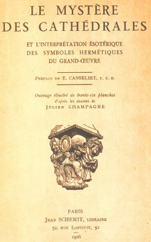


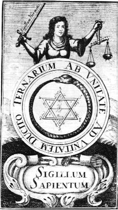
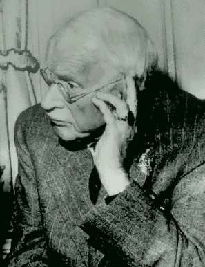
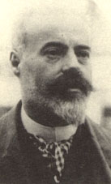
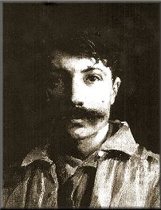


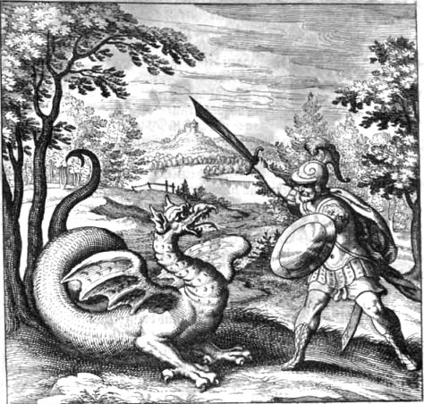

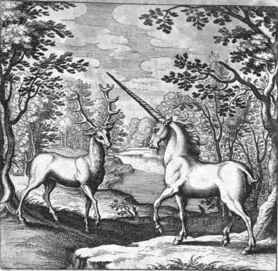
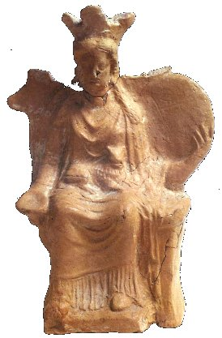
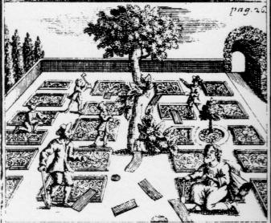

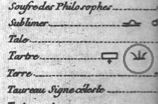

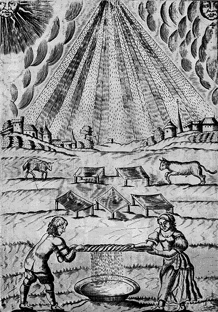

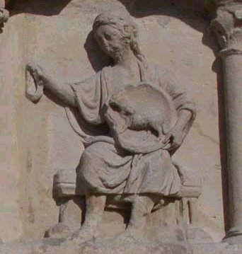
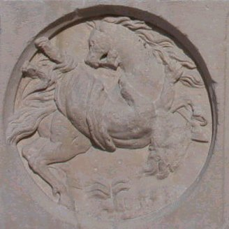
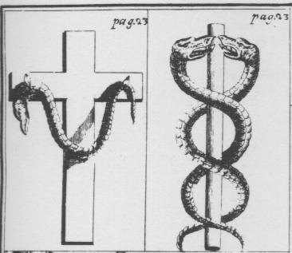

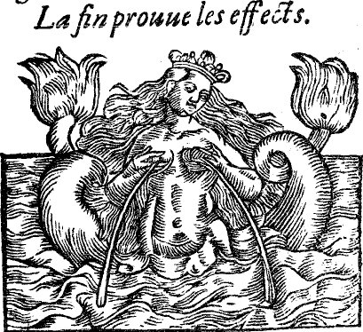


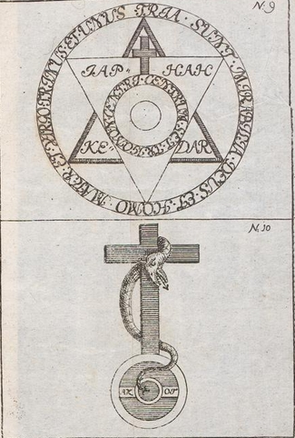

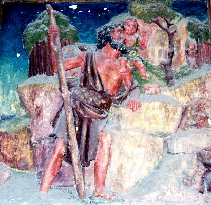


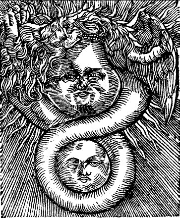
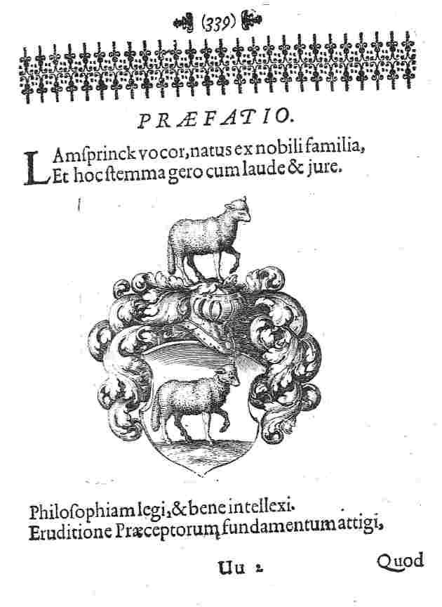
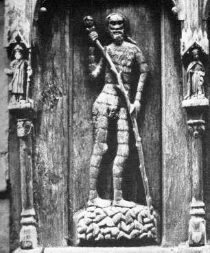
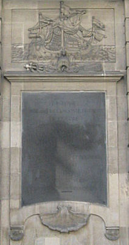
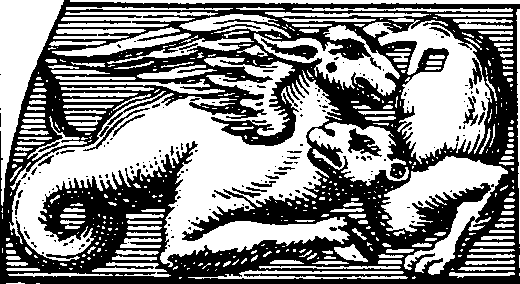

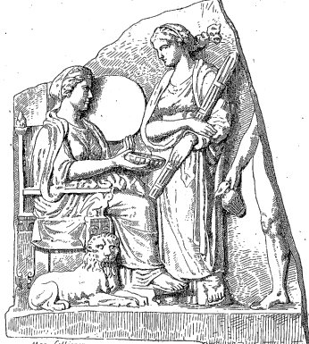
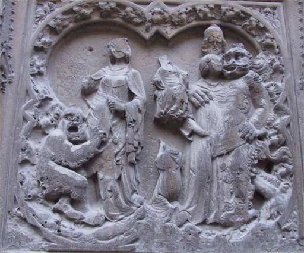


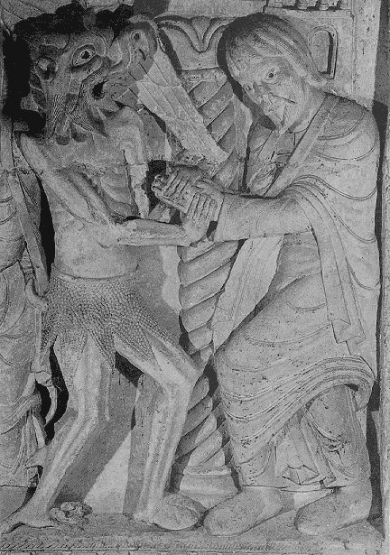
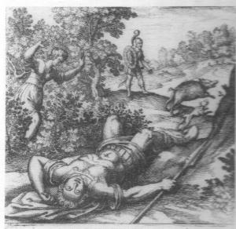
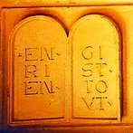
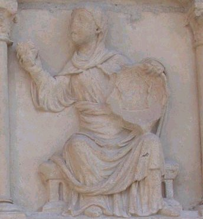
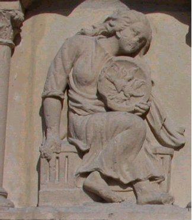
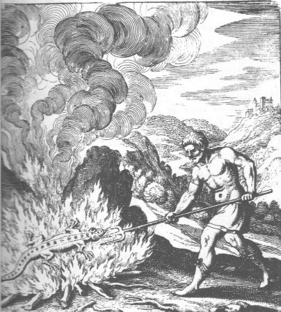


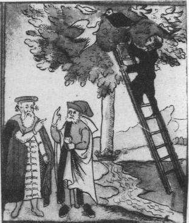
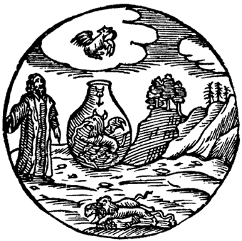


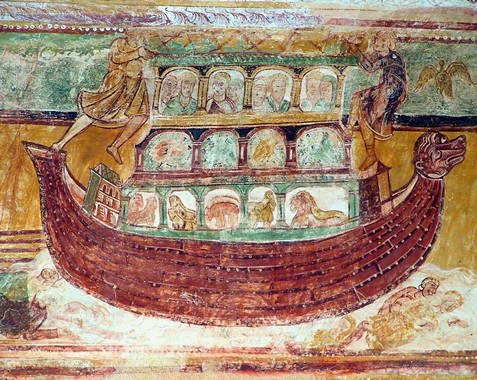
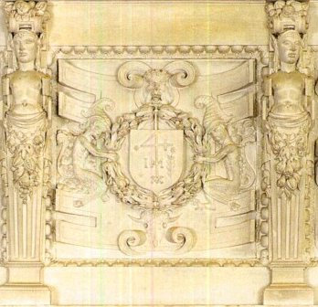
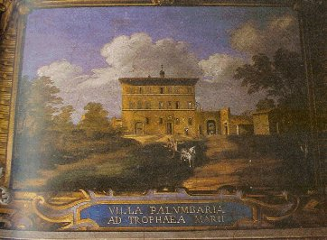
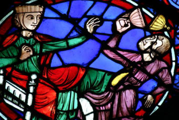

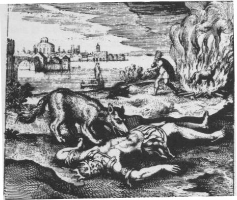
Noms cités
Fulcanelli · Paris · Hermes · Jean · Venus · Atalanta · Chevreul · Saturne · Jupiter · Jung · Valentin · Basile · Newton · Canseliet